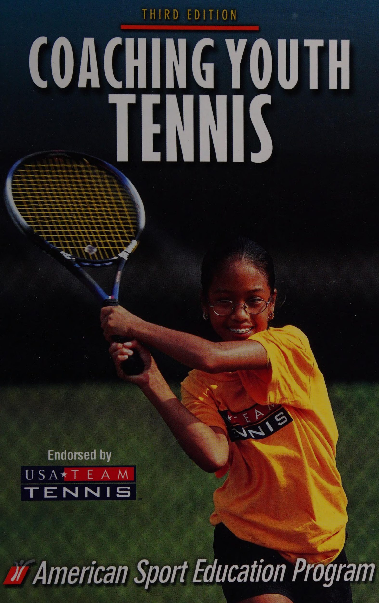

Huấn Luyện Quần Vợt Trẻ Em (Coaching Youth Tennis)

Bản dịch Việt ngữ này chỉ dùng cho mục đích học tập cá nhân, phi thương mại. Bản quyền tác phẩm gốc thuộc về tác giả và nhà xuất bản.
Chào Mừng Đến Với Sự Nghiệp Huấn Luyện
Huấn luyện người trẻ là một cách thú vị để tham gia quần vợt. Nhưng nó không dễ dàng. Một số huấn luyện viên bị choáng ngợp bởi trách nhiệm liên quan đến việc giúp đỡ các vận động viên vượt qua những trải nghiệm chơi quần vợt ban đầu của họ. Và điều đó không có gì đáng ngạc nhiên, bởi vì việc huấn luyện các tay vợt trẻ đòi hỏi nhiều thứ hơn là việc mang bóng đến sân và để chúng chơi. Nó liên quan đến việc chuẩn bị cho họ về thể chất và tinh thần để thi đấu quần vợt một cách hiệu quả, công bằng và an toàn, đồng thời cung cấp cho họ một hình mẫu tích cực.
Cuốn sách này sẽ giúp bạn vượt qua những thử thách và trải nghiệm nhiều phần thưởng khi huấn luyện các vận động viên trẻ. Trong cuốn sách này, bạn sẽ học cách đáp ứng trách nhiệm của mình với tư cách là huấn luyện viên, giao tiếp tốt và đảm bảo an toàn, sử dụng một phương pháp hiệu quả cao - phương pháp tiếp cận trận đấu - để giảng dạy chiến thuật và kỹ năng cũng như tìm hiểu các chiến lược huấn luyện trong ngày thi đấu. Chúng tôi cũng cung cấp ba bộ kế hoạch theo mùa để hướng dẫn bạn trong suốt mùa giải.
Cuốn sách này được viết với sự hợp tác của Hiệp hội Quần vợt Hoa Kỳ (USTA) và Chương trình Giáo dục Thể thao Hoa Kỳ (ASEP).
Huấn luyện Quần vợt Trẻ đóng vai trò là tài liệu cho khóa học Huấn luyện Yauth Sport của Đội tuyển Hoa Kỳ và ASEP. Nếu bạn muốn biết thêm thông tin về khóa học này, vui lòng liên hệ với USTA tại
USTA
White Plains, NY 10604 1-800-990-USTA (8782)
Nếu bạn muốn biết thông tin về các khóa học và tài nguyên ASEP khác, hãy liên hệ với chúng tôi tại
ASEP P.O. Hộp 5076
Champaign, IL 61825-5076 1-800-747-5698
Chú Giải Sơ Đồ
Xuyên suốt cuốn sách này, các bài tập và trò chơi được vẽ dưới dạng sơ đồ sân. Các ký hiệu dưới đây được sử dụng trong mỗi một trong số chúng.
Ký hiệu
- A, B, C — Người chơi
- Mũi tên được đánh số — Đường đi của quả bóng
- Một mũi tên đơn giản — Đường đi của người chơi
- Một vòng cung nét đứt — Lob
- T1 — Mục tiêu
- Co — Huấn luyện viên
- Một đường chấm chấm — Dây thừng
- S — Người giao bóng
- R — Người nhận
Bước Vào Nghề Huấn Luyện
Nếu bạn giống như hầu hết các huấn luyện viên của các giải trẻ, có thể bạn đã được tuyển dụng từ hàng ngũ các bậc phụ huynh, những người đam mê thể thao hoặc tình nguyện viên cộng đồng có liên quan. Giống như nhiều huấn luyện viên tân binh và kỳ cựu, có lẽ bạn chưa được hướng dẫn chính thức về cách huấn luyện. Nhưng khi có cuộc gọi đến các huấn luyện viên để hỗ trợ chương trình quần vợt trẻ ở địa phương, bạn đã trả lời vì bạn thích trẻ con và thích quần vợt, và có lẽ vì bạn muốn tham gia vào một hoạt động cộng đồng có giá trị.
Nhiệm vụ huấn luyện ban đầu của bạn có thể khó khăn. Giống như nhiều tình nguyện viên, bạn có thể không biết mọi thứ cần biết về quần vợt hoặc cách làm việc với trẻ em. Huấn luyện Quần vợt Trẻ sẽ giúp bạn tìm hiểu những kiến thức cơ bản về huấn luyện quần vợt một cách hiệu quả.
Để bắt đầu, chúng ta hãy xem những gì liên quan đến việc trở thành một huấn luyện viên. Trách nhiệm của bạn là gì? Chúng ta cũng sẽ nói về cách xử lý tình huống khi con bạn tham gia vào đội mà bạn huấn luyện và chúng ta sẽ xem xét năm công cụ để trở thành một huấn luyện viên hiệu quả.
Trách nhiệm của bạn với tư cách là huấn luyện viên
Với tư cách là huấn luyện viên quần vợt, bạn sẽ được yêu cầu thực hiện những việc sau:
1. Cung cấp một môi trường vật chất an toàn. Chơi quần vợt có rủi ro cố hữu, nhưng với tư cách là huấn luyện viên, bạn có trách nhiệm thường xuyên kiểm tra sân tập và sân thi đấu (xem danh sách kiểm tra về cơ sở vật chất, thiết bị và nhân viên hỗ trợ ở chương 6).
2. Giao tiếp một cách tích cực. Bạn sẽ liên lạc không chỉ với người chơi của mình mà còn với phụ huynh, quan chức và quản trị viên. Giao tiếp theo cách tích cực và điều đó chứng tỏ bạn luôn quan tâm đến lợi ích tốt nhất của người chơi. Chương 2 sẽ giúp bạn giao tiếp hiệu quả và tích cực.
3. Dạy chiến lược, chiến thuật và kỹ năng chơi tennis. Chúng tôi sẽ chỉ cho bạn một “cách tiếp cận trò chơi” sáng tạo để dạy và thực hành các chiến lược, chiến thuật và kỹ năng mà các vận động viên trẻ cần biết—một cách tiếp cận mà trẻ em hoàn toàn thích thú. Chúng tôi yêu cầu bạn giúp tất cả người chơi trở thành người giỏi nhất có thể. Trong chương 5, chúng tôi sẽ chỉ cho bạn cách dạy kỹ năng chơi quần vợt và trong chương 10 đến 12, chúng tôi sẽ cung cấp kế hoạch mùa giải cho người chơi từ 6 đến 12 tuổi.
(USA Team Tennis Red Division); đơn—người chơi từ 10 đến 18 (Bạch quân—tuổi từ 10 đến 14); và đánh đôi—người chơi từ 10 đến 18 (Đội xanh—
13 đến 18). Trong chương 8, chúng tôi sẽ cung cấp mô tả về tất cả các kỹ năng bạn cần dạy và giúp bạn phát hiện cũng như sửa các lỗi mà người chơi thường mắc phải.
4. Dạy luật tennis. Chúng tôi sẽ yêu cầu bạn dạy cho người chơi của bạn luật chơi quần vợt. Bạn sẽ tìm thấy các quy tắc trong chương 7.
5. Giúp các tay vợt của bạn trở nên khỏe mạnh và coi trọng thể lực suốt đời. Chúng tôi muốn bạn giúp người chơi của mình khỏe mạnh để họ có thể chơi quần vợt an toàn và thành công. Chúng tôi cũng muốn các tay vợt của bạn học cách tự mình rèn luyện sức khỏe, hiểu giá trị của thể lực và tận hưởng việc tập luyện. Vì vậy, chúng tôi yêu cầu bạn không bắt họ thực hiện động tác chống đẩy hoặc chạy vòng để bị trừng phạt. Hãy tạo niềm vui để có được sức khỏe tốt khi chơi quần vợt và tạo niềm vui khi chơi quần vợt để chúng luôn khỏe mạnh suốt đời.
6. Giúp người trẻ phát triển nhân cách. Sự phát triển tính cách bao gồm việc học cách quan tâm, trung thực, tôn trọng và trách nhiệm. Những phẩm chất vô hình này cần được dạy không kém phần quan trọng so với kỹ năng giao bóng tốt. Chúng tôi yêu cầu bạn dạy những giá trị này cho người chơi bằng cách tiến hành Vòng tròn nhóm sau mỗi trận đấu cũng như bằng cách thể hiện và khuyến khích những hành vi thể hiện những giá trị này mọi lúc.
Đây là trách nhiệm của bạn với tư cách là một huấn luyện viên. Nhưng việc huấn luyện thậm chí còn trở nên phức tạp hơn khi con bạn là tay vợt trong đội mà bạn huấn luyện. Nếu đúng như vậy, bạn sẽ phải tính đến vai trò của mình với tư cách vừa là huấn luyện viên vừa là phụ huynh, đồng thời suy nghĩ xem những vai trò đó liên quan với nhau như thế nào.
Huấn luyện con của chính bạn
Nhiều huấn luyện viên là cha mẹ, nhưng không nên nhầm lẫn hai vai trò này.
Không giống như vai trò của cha mẹ, với tư cách là huấn luyện viên, bạn không chỉ chịu trách nhiệm với bản thân và con mình mà còn với tổ chức, tất cả các tay vợt trong đội (bao gồm cả con bạn) và cha mẹ của họ. Vì trách nhiệm bổ sung này, hành vi của bạn trên sân tennis sẽ khác với hành vi của bạn ở nhà và con bạn có thể không hiểu tại sao.
Ví dụ, hãy tưởng tượng sự bối rối của một cậu bé là trung tâm sự chú ý của cha mẹ ở nhà nhưng hầu như không được cha / huấn luyện viên chú ý trong môi trường thể thao. Hoặc hãy xem xét những tín hiệu lẫn lộn mà một cô gái trẻ có kỹ năng chơi quần vợt nhận được thường xuyên được đánh giá bởi một người mẹ/huấn luyện viên, người hiếm khi nhận xét về hoạt động của con gái mình. Bạn cần giải thích cho con trai hoặc con gái những trách nhiệm mới của bạn và chúng sẽ ảnh hưởng như thế nào đến mối quan hệ của bạn khi huấn luyện.
Hãy thực hiện các bước sau để tránh gặp khó khăn trong việc huấn luyện con bạn:
- Hỏi con bạn xem nó có muốn bạn huấn luyện đội không.
- Giải thích lý do bạn mong muốn được tham gia vào nhóm.
- Thảo luận với con bạn về việc tương tác của bạn sẽ thay đổi như thế nào khi bạn đảm nhận vai trò huấn luyện viên trong các buổi luyện tập hoặc trò chơi.
- Giới hạn hành vi huấn luyện của bạn khi bạn đang ở vai trò huấn luyện.
- Tránh nuôi dạy con cái trong các tình huống luyện tập hoặc chơi game để giữ cho vai trò của bạn luôn rõ ràng trong tâm trí con bạn.
- Khẳng định lại tình yêu của bạn dành cho con mình, bất kể thành tích của con trên sân tennis.
Bây giờ chúng ta hãy xem xét một số phẩm chất sẽ giúp bạn trở thành một huấn luyện viên hiệu quả.
Năm công cụ của một huấn luyện viên hiệu quả
Bạn đã mua các công cụ huấn luyện truyền thống—những thứ như còi, quần áo huấn luyện, giày thể thao và bìa kẹp hồ sơ chưa? Chúng sẽ giúp bạn huấn luyện, nhưng để trở thành một huấn luyện viên thành công, bạn sẽ cần những công cụ khác mà không thể mua được. Những công cụ này chỉ có được nhờ sự tự kiểm tra và làm việc chăm chỉ; chúng rất dễ nhớ với từ viết tắt COACH:
C — Hiểu biết
O — Triển vọng
A — Tình cảm
C - Tính cách
H — Hài hước
Hiểu biết
Cần phải hiểu các quy tắc, chiến thuật và kỹ năng quần vợt. Bạn phải hiểu các yếu tố cơ bản của môn thể thao này. Để hỗ trợ bạn tìm hiểu về trò chơi, chúng tôi mô tả các quy tắc và kỹ năng trong chương 7 và 8. Chúng tôi cũng cung cấp kế hoạch mùa giải trong các chương 10, 11 và 12.
Để nâng cao hiểu biết của bạn về quần vợt, hãy thực hiện các bước sau:
- Đọc phần dành riêng cho thể thao của cuốn sách này trong các chương 7 đến 12.
- Hãy cân nhắc đọc các cuốn sách huấn luyện quần vợt khác, bao gồm cả những cuốn sách có sẵn từ Chương trình Giáo dục Thể thao Hoa Kỳ (ASEP).
- Liên hệ với tổ chức quần vợt trẻ.
- Liên hệ với trang web của USTA (www.usta.com).
- Tham dự các phòng khám quần vợt.
- Nói chuyện với những huấn luyện viên giàu kinh nghiệm hơn.
- Quan sát các trận đấu quần vợt ở trường đại học, trung học và thanh thiếu niên ở địa phương.
- Xem các trận đấu quần vợt trên truyền hình.
Ngoài việc có kiến thức về quần vợt, bạn phải thực hiện các phương pháp tập luyện và an toàn phù hợp để các tay vợt của bạn có thể tham gia mà ít có nguy cơ chấn thương. Thậm chí sau đó, chấn thương có thể xảy ra. Và thường xuyên hơn không, bạn sẽ là người đầu tiên ứng phó với chấn thương của tay vợt, vì vậy hãy chắc chắn rằng bạn hiểu các quy trình chăm sóc khẩn cấp cơ bản được mô tả trong chương 3. Ngoài ra, hãy đọc trong chương đó cách xử lý các tình huống chấn thương thể thao nghiêm trọng hơn.
Triển vọng
Công cụ huấn luyện này đề cập đến quan điểm và mục tiêu của bạn—những gì bạn đang tìm kiếm với tư cách là một huấn luyện viên. Mục tiêu huấn luyện phổ biến nhất là (a) vui vẻ, (b) giúp người chơi phát triển các kỹ năng thể chất, tinh thần và xã hội và (c) giành chiến thắng. Do đó, tầm nhìn của bạn liên quan đến những ưu tiên bạn đặt ra, kế hoạch và tầm nhìn của bạn cho tương lai.
Trong khi tất cả các huấn luyện viên đều tập trung vào cạnh tranh, chúng tôi muốn bạn tập trung vào cạnh tranh tích cực, luôn theo đuổi mục tiêu chiến thắng bằng cách đưa ra các quyết định đầu tiên là vì lợi ích tốt nhất của người chơi và thứ hai sẽ giúp giành chiến thắng trong trò chơi.
Vậy làm thế nào để bạn biết liệu quan điểm và ưu tiên của bạn có theo thứ tự hay không? Đây là một bài kiểm tra nhỏ dành cho bạn:
Bạn sẽ tự hào nhất về tình huống nào?
a. Biết rằng mỗi người tham gia đều thích chơi quần vợt.
b. Thấy rằng tất cả người chơi đã cải thiện kỹ năng quần vợt của họ.
c. Giành chức vô địch giải đấu.
Câu nào phản ánh đúng nhất suy nghĩ của bạn về thể thao?
a. Nếu nó không vui thì đừng làm.
b. Mọi người nên học điều gì đó mỗi ngày.
c. Thể thao sẽ không vui nếu bạn không thắng.
Bạn muốn người chơi nhớ đến mình như thế nào?
a. Là một huấn luyện viên rất vui khi được thi đấu.
b. Là một huấn luyện viên đã cung cấp nền tảng tốt về các kỹ năng cơ bản.
c. Là một huấn luyện viên đã có thành tích chiến thắng.
Bạn muốn nghe phụ huynh của một tay vợt trong đội của bạn nói điều gì nhất?
a. Mike thực sự đã có một thời gian chơi quần vợt vui vẻ trong năm nay.
b. Nicole đã học được một số bài học quan trọng khi chơi quần vợt trong năm nay.
c. Willie đã chơi trong đội quần vợt hạng nhất năm nay.
Khoảnh khắc nào sau đây sẽ là khoảnh khắc bổ ích nhất trong mùa giải của bạn?
a. Khiến đội của bạn không muốn ngừng thi đấu, ngay cả sau khi buổi tập kết thúc. b. Chứng kiến một trong những người chơi của bạn cuối cùng thành thạo kỹ năng đánh cú đập từ trên đầu.
c. Giành chức vô địch giải đấu.
Xem lại câu trả lời của bạn. Nếu bạn thường chọn W “a” Phản hồi nhất thì đối với bạn, niềm vui là điều quan trọng nhất. Phần lớn các câu trả lời “b” gợi ý rằng phát triển kỹ năng là điều thu hút bạn đến với công việc huấn luyện. Và nếu “c” là câu trả lời thường xuyên nhất của bạn, thì chiến thắng sẽ đứng đầu trong danh sách ưu tiên huấn luyện của bạn. Nếu các ưu tiên của bạn được sắp xếp theo thứ tự, sức khỏe của các tay vợt của bạn sẽ được ưu tiên hơn thành tích thắng-thua của đội bạn mọi lúc.
ASEP có một phương châm giúp bạn duy trì quan điểm của mình phù hợp với lợi ích tốt nhất của những đứa trẻ trong nhóm của bạn. Nó tóm tắt trong bốn từ tất cả những gì bạn cần nhớ khi thiết lập các ưu tiên huấn luyện của mình:
Vận động viên thứ nhất, Chiến thắng thứ hai
Phương châm này thừa nhận rằng phấn đấu để giành chiến thắng là một phần quan trọng, thậm chí mang tính sống còn của thể thao. Nhưng nó nhấn mạnh rằng không nên nỗ lực phấn đấu để giành chiến thắng mà gây tổn hại đến sức khỏe, sự phát triển và niềm vui của các vận động viên. Thực hiện các hành động sau để xác định rõ hơn triển vọng của bạn:
1. Xác định các ưu tiên của bạn cho mùa giải.
2. Chuẩn bị cho những tình huống thách thức những ưu tiên của bạn.
3. Đặt mục tiêu cho bản thân và người chơi của bạn phù hợp với những ưu tiên đó.
4. Lập kế hoạch về cách bạn và người chơi của bạn có thể đạt được những mục tiêu đó một cách tốt nhất.
5. Xem lại mục tiêu của bạn thường xuyên để chắc chắn rằng bạn đang đi đúng hướng.
Tình cảm
Đây là một công cụ quan trọng khác mà bạn sẽ muốn có trong bộ tài liệu huấn luyện của mình:
mối quan tâm thực sự đối với những người trẻ mà bạn huấn luyện. Nó liên quan đến tình yêu dành cho trẻ em, mong muốn chia sẻ với chúng tình yêu và kiến thức của bạn về quần vợt cũng như sự kiên nhẫn và hiểu biết giúp mỗi cá nhân chơi cho bạn phát triển từ việc tham gia thể thao của họ.
Bạn có thể thể hiện tình cảm và sự kiên nhẫn của mình bằng nhiều cách, bao gồm những cách sau:
- Hãy nỗ lực tìm hiểu từng người chơi trong đội của bạn.
- Hãy đối xử với mỗi người chơi như một cá nhân.
- Đồng cảm với những người chơi đang cố gắng học những kỹ năng mới và khó.
- Đối xử với người chơi như cách bạn muốn được đối xử trong những trường hợp tương tự.
- Hãy kiểm soát cảm xúc của mình.
- Hãy thể hiện sự nhiệt tình của bạn khi được tham gia cùng nhóm của mình.
- Giữ thái độ lạc quan và tích cực trong mọi cuộc giao tiếp của bạn.
Tính cách
Việc bạn quyết định huấn luyện các vận động viên quần vợt trẻ có thể có nghĩa là bạn nghĩ rằng việc tham gia thể thao là quan trọng. Nhưng việc tham gia đó có phát triển tính cách của các tay vợt hay không phụ thuộc nhiều vào bạn cũng như vào chính môn thể thao đó. Làm thế nào bạn có thể xây dựng tính cách trong các tay vợt của mình?
Có nhân cách tốt có nghĩa làm gương cho những hành vi phù hợp với thể thao và cuộc sống. Điều đó có ý nghĩa nhiều hơn là chỉ nói những điều đúng đắn. Những gì bạn nói và những gì bạn làm phải phù hợp. Không có chỗ đứng trong việc huấn luyện cho triết lý “Làm như tôi nói, không làm như tôi làm”. Thử thách, hỗ trợ, khuyến khích và khen thưởng mọi tay vợt trẻ, và các tay vợt của bạn sẽ có nhiều khả năng chấp nhận, thậm chí ăn mừng sự khác biệt của họ. Kiểm soát trước, trong và sau tất cả các buổi luyện tập và thi đấu. Và đừng ngại thừa nhận rằng bạn đã sai. Không ai là hoàn hảo!
Hãy xem xét các bước sau để trở thành một tấm gương tốt:
- Hãy nắm bắt những điểm mạnh và điểm yếu của bạn.
- Hãy phát huy thế mạnh của mình.
- Đặt mục tiêu cho bản thân để cải thiện những lĩnh vực mà bạn không muốn bị sao chép.
- Nếu bạn mắc lỗi, hãy xin lỗi đồng đội và bản thân bạn. Bạn sẽ làm tốt hơn vào lần sau.
Hài hước
Tính hài hước là một công cụ huấn luyện thường bị bỏ qua. Đối với mục đích sử dụng của chúng tôi, điều đó có nghĩa là có khả năng cười nhạo chính mình và với người chơi của bạn trong quá trình luyện tập và thi đấu. Không có gì giúp cân bằng giọng điệu nghiêm túc buổi học kỹ năng như một hoặc hai tiếng cười khúc khích. Và khiếu hài hước giúp bạn nhìn nhận rõ hơn nhiều sai lầm mà người chơi của bạn sẽ mắc phải. Vì vậy, đừng buồn bã vì mỗi sai sót hoặc phản ứng tiêu cực với những người chơi mắc lỗi. Cho phép người chơi và chính bạn tận hưởng những thăng trầm và đừng tập trung vào những điểm yếu.
Dưới đây là một số mẹo để đưa tính hài hước vào hoạt động thực hành của bạn:
- Làm cho việc luyện tập trở nên thú vị bằng cách đưa vào nhiều hoạt động khác nhau.
- Giữ tất cả người chơi tham gia vào trò chơi và luyện tập kỹ năng.
- Hãy coi tiếng cười của các tay vợt là dấu hiệu của sự thích thú chứ không phải của việc mất kỷ luật.
- Cười lên nào!
tôi. sik 3 ue edtumibes oys.ere
Giao Tiếp Với Tư Cách Huấn Luyện Viên
Trong chương 1, bạn đã tìm hiểu về các công cụ cần thiết để COACH: Sự hiểu biết, Quan điểm, Tình cảm, Tính cách và Sự hài hước. Đây là những điều cần thiết để huấn luyện hiệu quả; không có họ, bạn sẽ gặp khó khăn khi bắt đầu. Nhưng sẽ không có công cụ nào hiệu quả nếu bạn không biết cách sử dụng chúng với các vận động viên của mình - và điều này đòi hỏi khả năng giao tiếp khéo léo. Chương này xem xét giao tiếp là gì và làm thế nào bạn có thể trở thành một huấn luyện viên giao tiếp hiệu quả hơn.
Giao tiếp có những gì?
Các huấn luyện viên thường lầm tưởng rằng giao tiếp chỉ liên quan đến việc hướng dẫn người chơi làm điều gì đó, nhưng ra lệnh bằng lời nói chỉ là một phần nhỏ trong quá trình giao tiếp. Hơn một nửa những gì được truyền đạt là phi ngôn ngữ. Vì vậy, hãy nhớ khi bạn đang huấn luyện: Hành động có ý nghĩa hơn lời nói.
Giao tiếp ở dạng đơn giản nhất có sự tham gia của hai người: người gửi và người nhận. Người gửi truyền tải thông điệp bằng lời nói, qua nét mặt và có thể qua ngôn ngữ cơ thể. Sau khi tin nhắn được gửi đi, người nhận phải đồng hóa nó thành công. Người nhận không tham dự hoặc không lắng nghe sẽ bỏ lỡ các phần, nếu không muốn nói là tất cả, của tin nhắn.
Làm Thế Nào Để Gửi Đi Thông Điệp Hiệu Quả Hơn?
Các vận động viên trẻ thường ít hiểu biết về luật và kỹ năng chơi quần vợt và thậm chí còn kém tự tin khi chơi môn này. Vì vậy, họ cần những thông điệp chính xác, dễ hiểu và mang tính hỗ trợ để giúp đỡ họ. Đó là lý do tại sao thông điệp bằng lời nói và phi ngôn ngữ của bạn lại quan trọng đến vậy.
Lời nhắn
“Gậy và đá có thể làm gãy xương tôi, nhưng lời nói sẽ không bao giờ làm tổn thương tôi” là không đúng sự thật. Lời nói có thể có tác dụng mạnh mẽ và lâu dài. Và lời nói của huấn luyện viên có ảnh hưởng đặc biệt vì giới trẻ rất coi trọng những gì huấn luyện viên nói. Có lẽ bạn, giống như nhiều người từng tham gia thể thao trẻ, gặp khó khăn trong việc ghi nhớ phần lớn những điều giáo viên tiểu học đã dạy bạn, nhưng bạn vẫn có thể nhớ lại một số điều cụ thể mà huấn luyện viên ở cấp độ đó đã nói với bạn. Đó là tác động lâu dài của những nhận xét của huấn luyện viên đối với tay vợt.
Cho dù bạn đang sửa chữa hành vi sai trái, dạy một tay vợt cách giao bóng hay khen ngợi một tay vợt đã nỗ lực tốt, bạn nên cân nhắc một số điều khi gửi tin nhắn bằng lời nói. Chúng bao gồm những điều sau:
- Hãy tích cực và trung thực.
- Hãy trình bày rõ ràng và đơn giản.
- Nói đủ to rồi nói lại.
- Hãy nhất quán.
Hãy tích cực và trung thực
Không có gì khiến mọi người khó chịu bằng việc lúc nào cũng nghe thấy ai đó cằn nhằn, và các vận động viên phản ứng tương tự như một huấn luyện viên liên tục phàn nàn. Trẻ em đặc biệt cần được khuyến khích vì chúng thường nghi ngờ khả năng chơi thể thao của mình. Vì vậy, hãy tìm kiếm và nói với người chơi của bạn những gì họ đã làm tốt.
Nhưng đừng che đậy lối chơi kém cỏi hoặc không đúng bằng những lời khen ngợi màu hồng. Trẻ em biết rất rõ khi nào chúng mắc lỗi và không có lời nói sáo rỗng nào có thể sửa chữa được lỗi lầm của chúng. Nếu bạn không thừa nhận lỗi của người chơi, vận động viên của bạn sẽ nghĩ bạn là kẻ giả mạo.
Một cách tốt để sửa lỗi thi đấu là trước tiên chỉ ra những gì vận động viên đã làm đúng. Sau đó giải thích một cách tích cực những gì họ đang làm sai và chỉ cho họ cách sửa chữa. Kết thúc bằng cách khuyến khích vận động viên và nhấn mạnh vào màn trình diễn chính xác.
Đảm bảo không theo sau một câu khẳng định bằng từ nhưng. Ví dụ, đừng nói, "Thật tốt khi vào được vị trí, Kelly. Nhưng nếu em mang vợt về sớm hơn, em sẽ có thể giữ bóng trong sân." Nói theo cách này khiến nhiều trẻ bỏ qua câu tích cực và tập trung vào câu tiêu cực. Thay vào đó, hãy nói điều gì đó như, "Đó là sự chuẩn bị tốt cho động tác bằng chân, Kelly. Và nếu bạn mang vợt về sớm hơn, bạn sẽ kiểm soát bóng nhiều hơn."
Trình bày rõ ràng và đơn giản
Thông điệp tích cực và trung thực là tốt, nhưng chỉ khi được thể hiện trực tiếp bằng lời mà người chơi của bạn hiểu được. "Nói vòng vo là không hiệu quả và kém hiệu quả. Và nếu bạn lan man, người chơi của bạn sẽ hiểu sai ý chính trong thông điệp của bạn và có thể mất hứng thú. Dưới đây là một số mẹo để nói rõ ràng:
- Sắp xếp suy nghĩ của bạn trước khi nói chuyện với vận động viên của bạn.
- Hãy giải thích cặn kẽ mọi việc nhưng đừng nhàm chán bằng những lời độc thoại dài dòng.
- Sử dụng ngôn ngữ mà người chơi của bạn có thể hiểu được. Tuy nhiên, hãy tránh cố tỏ ra sành điệu bằng cách sử dụng từ vựng tiếng lóng của nhóm tuổi họ.
Nói đủ lớn và nói lại lần nữa
Nói chuyện với người chơi của bạn bằng giọng mà mọi người đều có thể nghe và hiểu được. Giọng nói sắc sảo, mạnh mẽ thu hút sự chú ý và tôn trọng; giọng nói bị cắt xén và yếu ớt bị tắt. Trên thực tế, bạn có thể dịu giọng khi nói chuyện riêng với một người chơi về một vấn đề cá nhân. Nhưng hầu hết các tin nhắn của bạn sẽ dành cho tất cả người chơi của bạn nghe, vì vậy hãy đảm bảo rằng họ có thể nghe được! Giọng nói nhiệt tình cũng thúc đẩy người chơi và nói với họ rằng bạn thích làm huấn luyện viên của họ. Tuy nhiên, hãy cẩn thận: Đừng chiếm lĩnh bối cảnh bằng giọng nói bùng nổ làm phân tán sự chú ý khỏi màn trình diễn của người chơi.
Đôi khi những gì bạn nói ra, dù có nói to và rõ ràng, cũng không thể chìm đắm trong lần đầu tiên. Điều này có thể đặc biệt đúng khi các vận động viên trẻ nghe thấy những từ mà họ không hiểu. Để tránh sự lặp lại nhàm chán nhưng vẫn truyền tải được thông điệp của bạn, hãy nói điều tương tự theo một cách hơi khác. Ví dụ: trước tiên bạn có thể nói với các lớp p của mình rằng “Hãy thực hiện theo cú thuận tay của bạn!” Nếu họ có vẻ không hiểu, bạn có thể nói, “Đưa vợt của bạn lên và sang tay kia sau khi bạn đánh bóng ở phía thuận tay của bạn.” Hình thức thông báo chủ đề thứ hai có thể được truyền tới những người chơi đã bỏ lỡ nó lần đầu tiên.
Hãy nhất quán
Mọi người thường nói những điều theo cách ngụ ý một thông điệp khác. Ví dụ: một chút mỉa mai được thêm vào từ "Làm tốt lắm!" gửi đi một thông điệp hoàn toàn khác với những từ ngữ gợi ý. Tránh gửi những tin nhắn hỗn hợp như vậy. Giữ giọng điệu của bạn phù hợp với những từ bạn sử dụng. Và đừng nói điều gì hôm nay rồi lại mâu thuẫn với nó ngày hôm sau; người chơi sẽ vượt qua giới hạn của mình.
Tin nhắn phi ngôn ngữ
Cũng như việc bạn phải nhất quán trong giọng điệu và từ ngữ bạn sử dụng, bạn cũng nên giữ cho các thông điệp bằng lời nói và phi ngôn ngữ của mình nhất quán.
Một ví dụ điển hình về việc không làm được điều này là lắc đầu thể hiện sự không đồng tình, đồng thời nói với người chơi, "Tốt lắm." Người chơi nên tin vào điều gì, cử chỉ hay lời nói của bạn?
Tin nhắn có thể được gửi phi ngôn ngữ theo một số cách. Nét mặt và ngôn ngữ cơ thể chỉ là hai trong số những dạng tín hiệu phi ngôn ngữ rõ ràng nhất có thể giúp ích cho bạn khi huấn luyện.
Biểu cảm trên khuôn mặt
Vẻ mặt của một người là manh mối nhanh nhất cho thấy họ nghĩ gì hoặc cảm thấy gì. Người chơi của bạn biết điều này, vì vậy họ sẽ nghiên cứu khuôn mặt của bạn, tìm kiếm bất kỳ dấu hiệu nào có thể cho họ biết nhiều hơn những lời bạn nói. Đừng cố đánh lừa họ bằng cách đeo một “mặt nạ” vui vẻ hoặc trống rỗng. Họ sẽ nhìn thấu điều đó và bạn sẽ mất uy tín.
Những biểu cảm nghiêm túc, lạnh lùng không giúp ích được gì cho những đứa trẻ cần tín hiệu về cách chúng đang biểu diễn. Họ sẽ cho rằng bạn không vui hoặc không quan tâm. Đừng ngại mỉm cườiA. nụ cười của huấn luyện viên có thể mang lại động lực to lớn cho một vận động viên thiếu tự tin. Ngoài ra, một nụ cười còn cho người chơi biết rằng bạn đang rất vui khi huấn luyện họ. Nhưng đừng lạm dụng nó, nếu không người chơi của bạn sẽ không thể biết khi nào bạn thực sự hài lòng với điều họ đã làm hoặc khi nào bạn chỉ đang nở một nụ cười.
Ngôn ngữ cơ thể
Người chơi sẽ nghĩ bạn cảm thấy thế nào nếu bạn đến tập luyện với tư thế thõng vai, cúi đầu và vai rũ xuống? Mệt? Chán? Không vui? Họ sẽ nghĩ bạn cảm thấy thế nào nếu bạn xem họ trong một cuộc thi với hai tay chống nạnh, quai hàm nghiến chặt và mặt bạn đỏ bừng? Khó chịu với họ? Chán ghét một quan chức? Tức giận với một người hâm mộ? Có lẽ một số hoặc tất cả những điều này sẽ đi vào tâm trí người chơi của bạn. Và không có ấn tượng nào trong số này là loại ấn tượng mà bạn muốn người chơi có về mình. Đó là lý do tại sao bạn nên thể hiện mình một cách thoải mái, tự tin và mạnh mẽ. Tư thế như vậy không chỉ thể hiện sự hài lòng với vai trò huấn luyện của bạn mà còn là tấm gương tốt cho các tay vợt trẻ, những người có thể làm gương cho hành vi của bạn.
Tiếp xúc cơ thể cũng có thể là một cách sử dụng ngôn ngữ cơ thể rất quan trọng. Một cái bắt tay, một cái vỗ nhẹ vào đầu, một cánh tay quàng qua vai hay thậm chí là một cái ôm thật chặt là những cách hiệu quả để thể hiện sự tán thành, quan tâm, tình cảm và niềm vui đối với người chơi của bạn. Các bạn trẻ đặc biệt cần loại thông điệp phi ngôn ngữ này. Tất nhiên, hãy tuân thủ các giới hạn đạo đức và pháp lý rõ ràng, nhưng đừng miễn cưỡng chạm vào người chơi của bạn, gửi một thông điệp chỉ có thể được thể hiện thực sự theo cách đó.
Làm Thế Nào Để Cải Thiện Kỹ Năng Tiếp Nhận?
Bây giờ, hãy xem xét nửa còn lại của quá trình giao tiếp— nhận tin nhắn. Thông thường, những người gửi rất tốt lại là những người nhận tin nhắn rất kém. Nhưng với tư cách là huấn luyện viên của các vận động viên trẻ, bạn phải có khả năng hoàn thành tốt cả hai vai trò đó.
Yêu cầu để nhận tin nhắn khá đơn giản, nhưng kỹ năng nhận có lẽ chưa được thỏa mãn và do đó kém phát triển so với kỹ năng gửi. Mọi người dường như thích nghe chính mình nói hơn là nghe người khác nói. Nhưng nếu bạn đọc về các chìa khóa để nhận tin nhắn và nỗ lực áp dụng chúng với người chơi của mình, bạn sẽ ngạc nhiên vì những gì mình đã bỏ lỡ.
Chú ý!
Đầu tiên, bạn phải chú ý; bạn phải muốn nghe những gì người khác muốn truyền đạt cho bạn. Điều đó không phải lúc nào cũng dễ dàng khi bạn đang bận huấn luyện và có nhiều thứ tranh giành sự chú ý của bạn. Nhưng trong các cuộc gặp riêng hoặc họp nhóm với người chơi, bạn phải thực sự tập trung vào những gì họ đang nói với bạn, cả bằng lời nói và hành vi. Bạn sẽ ngạc nhiên trước những tín hiệu nhỏ mà bạn thu được. Sự chú ý tập trung như vậy không chỉ giúp bạn nắm bắt được từng lời người chơi nói mà còn cung cấp tín hiệu về tâm trạng và trạng thái thể chất của người chơi. Ngoài ra, bạn sẽ biết được cảm xúc của người chơi đối với bạn và những người chơi khác trong đội.
Lắng nghe CẨN THẬN
Cách chúng ta nhận được tin nhắn từ người khác, có lẽ hơn bất cứ điều gì khác mà chúng ta làm, cho thấy chúng ta quan tâm đến người gửi đến mức nào và người đó phải nói gì với chúng ta. Nếu bạn ít quan tâm đến tay vợt của mình hoặc ít quan tâm đến những gì họ nói, điều đó sẽ thể hiện qua cách bạn tham dự và lắng nghe họ. Hãy tự kiểm tra. Bạn có thấy đầu óc mình đang lang thang không biết mình sẽ làm gì sau khi luyện tập trong khi một trong những tay vợt của bạn đang nói chuyện với bạn không? Bạn có thường xuyên phải hỏi người chơi của mình không, “Bạn đã nói gì?” Nếu vậy, bạn cần phải vận dụng cơ chế tiếp nhận của việc tham dự và lắng nghe. Nhưng có lẽ câu hỏi quan trọng nhất mà bạn nên tự hỏi mình, nếu bạn nhận thấy mình đang thiếu những thông điệp mà người chơi gửi đến, đó là: Tôi có quan tâm không?
Cung cấp phản hồi
Cho đến nay chúng ta đã thảo luận riêng về việc gửi và nhận tin nhắn. Nhưng tất cả chúng ta đều biết rằng người gửi và người nhận chuyển đổi vai trò nhiều lần trong quá trình tương tác. Một người bắt đầu giao tiếp bằng cách gửi tin nhắn cho người khác, người này sau đó sẽ nhận được tin nhắn. Người nhận sau đó chuyển đổi vai trò và trở thành người gửi bằng cách trả lời người đã gửi tin nhắn ban đầu. Những phản hồi bằng lời nói và phi ngôn ngữ này được gọi là phản hồi.
Người chơi của bạn sẽ luôn tìm kiếm phản hồi từ bạn. Họ sẽ muốn biết bạn nghĩ họ đang hoạt động như thế nào, bạn nghĩ gì về ý tưởng của họ và liệu những nỗ lực của họ có làm bạn hài lòng hay không. Rõ ràng, bạn có thể phản ứng theo nhiều cách khác nhau. Cách bạn phản ứng sẽ ảnh hưởng mạnh mẽ đến người chơi của bạn. Họ sẽ phản hồi một cách thuận lợi nhất với những phản hồi tích cực.
Khen ngợi người chơi khi họ thể hiện hoặc cư xử tốt là một cách hiệu quả để khiến họ lặp lại (hoặc cố gắng lặp lại) hành vi đó trong tương lai. Và những phản hồi tích cực về nỗ lực là một cách đặc biệt hiệu quả để thúc đẩy trẻ rèn luyện những kỹ năng khó. Vì vậy, thay vì la hét và đưa ra phản hồi tiêu cực cho những người chơi mắc lỗi, hãy thử đưa ra phản hồi tích cực cho người chơi, cho họ biết họ đã làm đúng những gì và cách họ có thể cải thiện.
Đôi khi chỉ cách bạn phản hồi bằng lời nói cũng có thể khiến nó trở nên tích cực hơn là tiêu cực. Ví dụ, thay vì nói “Đừng đánh bóng theo cách đó”, bạn có thể nói “Hãy đánh bóng theo cách này”. Khi đó người chơi của bạn sẽ tập trung vào những việc cần làm thay vì những việc không nên làm.
Bạn có thể đưa ra phản hồi tích cực bằng lời nói và phi ngôn ngữ. Nói với một tay vợt, đặc biệt là trước mặt các đồng đội, rằng anh ấy hoặc cô ấy đã thi đấu tốt là một cách tuyệt vời để nâng cao sự tự tin của một tay vợt trẻ. Và một cái vỗ nhẹ vào lưng hoặc một cái bắt tay có thể là một cách rất hữu hình để truyền đạt sự công nhận của bạn về màn trình diễn của người chơi.
Tôi Cần Giao Tiếp Với Những Ai Nữa?
Huấn luyện không chỉ bao gồm việc gửi và nhận tin nhắn cũng như cung cấp phản hồi thích hợp cho người chơi mà còn tương tác với phụ huynh, người hâm mộ, quan chức trận đấu và huấn luyện viên đối phương. Nếu bạn không giao tiếp hiệu quả với những nhóm người này, sự nghiệp huấn luyện của bạn sẽ trở nên khó chịu và ngắn ngủi. Vì vậy, hãy thử những gợi ý sau đây để giao tiếp với các nhóm này.
Cha mẹ —
Cha mẹ của tay vợt cần được đảm bảo rằng con trai hoặc con gái của họ được hướng dẫn bởi một huấn luyện viên vừa am hiểu về thể thao vừa quan tâm đến sức khỏe của tay vợt trẻ. Bạn có thể xoa dịu những lo lắng của họ bằng cách tổ chức một cuộc họp định hướng phụ huynh trước mùa giải, trong đó bạn mô tả lý lịch và cách tiếp cận huấn luyện của mình.
Nếu cha mẹ liên hệ với bạn về mối lo ngại trong mùa giải, hãy lắng nghe họ thật kỹ và cố gắng đưa ra những phản hồi tích cực. Nếu bạn cần liên lạc với phụ huynh, hãy gặp họ sau buổi tập, gọi điện thoại cho họ hoặc gửi thư qua thư. Tin nhắn gửi đến phụ huynh thông qua người chơi thường bị thất lạc, hiểu sai hoặc bị lãng quên.
Người hâm mộ
Khán đài có thể sẽ không tràn ngập các cuộc thi của bạn, nhưng điều đó chỉ có nghĩa là bạn sẽ dễ dàng nghe thấy một số ít người hâm mộ chỉ trích cách huấn luyện của bạn. Khi bạn nghe thấy điều gì đó tiêu cực về công việc bạn đang làm, đừng trả lời. Hãy bình tĩnh, xem xét xem tin nhắn đó có giá trị gì không, nếu không thì hãy quên nó đi. Ghi nhận những nhận xét phê phán, không chính đáng từ người hâm mộ trong cuộc thi sẽ chỉ khuyến khích người khác nói lên ý kiến của mình. Vì vậy, hãy bỏ “tai thỏ” của mình đi và truyền đạt cho người hâm mộ, thông qua hành động, rằng bạn là một huấn luyện viên tự tin và có năng lực.
Hãy chuẩn bị tinh thần cho tay vợt của bạn trước những lời chỉ trích của người hâm mộ. Nói với họ rằng đó là bạn chứ không phải khán giả, họ nên lắng nghe. Nếu bạn nhận thấy một trong những tay vợt của bạn bị mất bình tĩnh vì lời bình luận của người hâm mộ, hãy trấn an tay vợt đó rằng đánh giá của bạn khách quan hơn và thuận lợi hơn—và đó mới là đánh giá quan trọng.
Ban giám khảo cuộc thi
Cách bạn giao tiếp với ban giám khảo sẽ có ảnh hưởng lớn đến cách người chơi của bạn cư xử với họ. Vì vậy, bạn cần đặt một ví dụ. Chào hỏi ban giám khảo bằng một cái bắt tay, một lời giới thiệu và có lẽ là một vài cuộc trò chuyện thân mật về trận đấu sắp tới. Hãy thể hiện sự tôn trọng của bạn dành cho họ trước, trong và sau trận đấu. Đừng đưa ra những nhận xét khó chịu, la hét hoặc sử dụng những cử chỉ cơ thể thiếu tôn trọng. Người chơi của bạn sẽ thấy bạn làm điều đó và họ sẽ hiểu rằng hành vi đó là phù hợp. Ngoài ra, nếu thẩm phán nghe thấy hoặc nhìn thấy bạn, mối liên lạc giữa hai bạn sẽ bị gián đoạn.
Huấn luyện viên đối phương
Hãy cố gắng đến gặp huấn luyện viên của đội đối phương trước trận đấu. Trong trận đấu, đừng gây thù chuốc oán cá nhân với huấn luyện viên đối phương. Hãy nhớ rằng, những đứa trẻ đang cạnh tranh chứ không phải huấn luyện viên. Và bằng cách hòa hợp với huấn luyện viên đối phương, bạn sẽ cho các tay vợt của mình thấy rằng cạnh tranh đòi hỏi phải có sự hợp tác.
Đảm Bảo An Toàn Cho Tay Vợt
Một trong những người chơi của bạn lao xuống để đánh trả một cú trái tay chắc chắn ở cuối đường biên. Cô ấy đánh bóng, nhưng rơi xuống đất. Bạn nhận thấy rằng tay vợt của bạn không đứng dậy khỏi mặt đất và có vẻ như đang bị đau.
Bạn làm nghề gì?
Không huấn luyện viên nào muốn thấy các tay vợt bị chấn thương. Nhưng chấn thương vẫn là một thực tế khi tham gia thể thao, do đó, bạn phải chuẩn bị sơ cứu khi chấn thương xảy ra và tự bảo vệ mình trước những vụ kiện tụng vô căn cứ. May mắn thay, huấn luyện viên có thể áp dụng nhiều biện pháp phòng ngừa để giảm thiểu rủi ro. Trong chương này, chúng tôi mô tả
- các bước bạn có thể thực hiện để ngăn ngừa thương tích,
- sơ cứu và ứng phó khẩn cấp khi thương tích xảy ra và
- trách nhiệm pháp lý của bạn với tư cách là huấn luyện viên.
Kế hoạch đảm bảo an toàn cho trận đấu
Bạn không thể ngăn chặn mọi chấn thương xảy ra nhưng bạn có thể thực hiện các biện pháp phòng ngừa nhằm mang lại cho người chơi cơ hội tốt nhất có thể để tham gia mà không bị chấn thương. Để tạo ra môi trường an toàn nhất có thể cho các vận động viên của bạn, chúng tôi sẽ khám phá những gì bạn có thể làm trong sáu lĩnh vực sau:
- Kiểm tra thể chất trước mùa giải
- Điều kiện thể chất
- Kiểm tra thiết bị và cơ sở vật chất
- Rủi ro cố hữu
- Giám sát và lưu giữ hồ sơ phù hợp
- Điều kiện môi trường
Chúng ta sẽ bắt đầu với những gì nên diễn ra trước khi mùa giải bắt đầu: kiểm tra thể chất trước mùa giải.
Kiểm tra thể chất trước mùa giải
Chúng tôi khuyên các tay vợt của bạn nên kiểm tra thể chất trước khi tham gia quần vợt. Bài kiểm tra phải giải quyết các lĩnh vực có khả năng xảy ra nhất về y tế và xác định những người trẻ tuổi có nguy cơ cao. Chúng tôi cũng khuyên bạn nên yêu cầu cha mẹ hoặc người giám hộ của người chơi ký vào biểu mẫu thỏa thuận tham gia và biểu mẫu cho phép con họ được điều trị trong trường hợp khẩn cấp.
Điều kiện thể chất
Người chơi cần phải sẵn sàng hoặc có đủ thể lực để chơi trò chơi ở cấp độ mong đợi. Để làm được như vậy, họ cần phải có đủ sức khỏe tim mạch, hô hấp và cơ bắp khỏe mạnh.
Sức khỏe tim mạch và hô hấp liên quan đến khả năng cơ thể lưu trữ và sử dụng oxy và nhiên liệu một cách hiệu quả để cung cấp năng lượng cho các cơn co thắt cơ. Khi các tay vợt có được thể trạng tốt hơn, cơ thể của họ có thể cung cấp oxy và nhiên liệu cho cơ bắp một cách hiệu quả hơn, đồng thời loại bỏ carbon dioxide và các chất thải khác. Quần vợt liên quan đến rất nhiều chuyển động và khả năng thực hiện các đợt ngắn trong suốt trận đấu. Những thanh niên không có thể lực tốt như các bạn cùng lứa thường cố gắng bù đắp cho sự thiếu hụt về thể lực, điều này có thể dẫn đến chóng mặt và buồn nôn.
Một lợi thế của việc dạy quần vợt theo phương pháp trò chơi là trẻ em năng động trong hầu hết thời gian luyện tập; không còn việc đứng xếp hàng để xem đồng đội tham gia diễn tập. Người chơi sẽ đạt được mức độ rèn luyện tim mạch cao hơn khi mùa giải diễn ra chỉ bằng cách tham gia luyện tập. Tuy nhiên, hãy theo dõi chặt chẽ các dấu hiệu cho thấy sức khỏe tim mạch và hô hấp ở mức độ thấp; đừng để vận động viên của bạn tập quá nhiều cho đến khi họ khỏe mạnh. Bạn có thể tư vấn riêng cho những thanh niên có vẻ quá mệt mỏi, gợi ý rằng họ nên tập luyện ngoài giờ tập luyện để tăng cường thể lực.
Thể lực cơ bắp bao gồm sức mạnh, sức bền của cơ, sức mạnh, tốc độ và tính linh hoạt. Loại hình thể dục này bị ảnh hưởng bởi sự trưởng thành về thể chất, cũng như việc rèn luyện sức mạnh và các loại hình rèn luyện khác. Các tay vợt của bạn có thể sẽ thể hiện mức độ thể lực cơ bắp tương đối rộng. Những người có cơ bắp tốt hơn sẽ có thể chạy nhanh hơn và đánh bóng mạnh hơn. Họ cũng sẽ ít bị chấn thương cơ hơn và bất kỳ chấn thương nào xảy ra sẽ có xu hướng nhẹ hơn. Và trong trường hợp chấn thương, tốc độ phục hồi sẽ được đẩy nhanh ở những người có mức độ thể lực cơ bắp cao hơn.
Hai thành phần khác của việc tập thể dục và phòng ngừa chấn thương là khởi động và hạ nhiệt. Mặc dù cơ thể trẻ thường rất khập khiễng nhưng chúng cũng có thể bị căng cứng do không hoạt động. Việc khởi động sẽ tác động đến từng nhóm cơ và tăng nhịp tim để chuẩn bị cho hoạt động vất vả. Yêu cầu người chơi khởi động trong 5 đến 10 phút bằng cách chơi các trò chơi dễ dàng và giãn cơ.
Khi quá trình luyện tập kết thúc, nhịp tim của người chơi sẽ chậm lại bằng cách chạy bộ hoặc đi bộ dễ dàng. Sau đó, yêu cầu người chơi giãn cơ trong năm phút để giúp tránh bị cứng cơ và làm cho chúng bớt căng hơn trước buổi tập hoặc trận đấu tiếp theo.
Kiểm tra thiết bị và cơ sở vật chất
Một cách khác để ngăn ngừa chấn thương là đảm bảo rằng tất cả người chơi đều có và mang giày tennis có khả năng hỗ trợ đầy đủ. Cũng hãy nhớ kiểm tra thường xuyên sân nơi các tay vợt của bạn tập luyện và thi đấu. Loại bỏ các mối nguy hiểm, báo cáo các tình trạng mà bạn không thể khắc phục và yêu cầu bảo trì nếu cần. Nếu tồn tại các điều kiện không an toàn, hãy thực hiện các điều chỉnh để tránh rủi ro cho sự an toàn của người chơi hoặc dừng hoạt động tập luyện hoặc trận đấu cho đến khi các điều kiện an toàn được khôi phục.
Rủi ro cố hữu.
Bạn phải cảnh báo người chơi về những rủi ro cố hữu khi chơi quần vợt, bởi vì “không cảnh báo” là một trong những lập luận thành công nhất trong các vụ kiện chống lại huấn luyện viên. Vì vậy, hãy giải thích cặn kẽ những rủi ro cố hữu của môn quần vợt và đảm bảo mỗi người chơi đều biết, hiểu và đánh giá cao những rủi ro đó.
Cuộc họp định hướng phụ huynh trước mùa giải là cơ hội tốt để giải thích những rủi ro của môn thể thao này cho cả phụ huynh và người chơi. Đây cũng là một dịp tốt để cả tay vợt và cha mẹ của họ ký giấy miễn trừ trách nhiệm pháp lý nếu chấn thương xảy ra. Việc từ bỏ như vậy không làm giảm bớt trách nhiệm của bạn đối với sức khỏe của người chơi nhưng chúng được các luật sư khuyến nghị.
Giám sát và lưu giữ hồ sơ đúng cách
Để đảm bảo an toàn cho người chơi, bạn sẽ cần cung cấp cả giám sát chung và giám sát cụ thể. Sự giám sát chung đang diễn ra trong khu vực hoạt động để bạn có thể nhìn và nghe thấy những gì đang xảy ra. Bạn nên như vậy
- có thể truy cập ngay vào hoạt động và có thể giám sát toàn bộ hoạt động,
- cảnh báo về các điều kiện có thể gây nguy hiểm cho người chơi và sẵn sàng hành động để bảo vệ họ, và
- có thể phản ứng ngay lập tức và thích hợp với các trường hợp khẩn cấp.
Giám sát cụ thể là giám sát trực tiếp một hoạt động tại nơi thực hành. Ví dụ: bạn nên cung cấp sự giám sát cụ thể khi dạy các kỹ năng mới và tiếp tục giám sát cho đến khi vận động viên của bạn hiểu được yêu cầu của hoạt động, những rủi ro liên quan và khả năng thực hiện của chính họ trước những rủi ro này. Bạn cũng cần cung cấp sự giám sát cụ thể khi nhận thấy người chơi vi phạm quy tắc hoặc có sự thay đổi về tình trạng của vận động viên của bạn.
Theo nguyên tắc chung, hoạt động càng nguy hiểm thì yêu cầu giám sát càng cụ thể. Điều này cho thấy cần có sự giám sát cụ thể hơn đối với các vận động viên trẻ và ít kinh nghiệm hơn.
Là một phần trong nhiệm vụ giám sát của bạn, bạn phải thấy trước các tình huống nguy hiểm tiềm ẩn và sẵn sàng giúp ngăn chặn chúng xảy ra. Điều này đòi hỏi bạn phải hiểu rõ về quần vợt, đặc biệt là các quy tắc nhằm đảm bảo an toàn. Cấm các hoạt động cưỡi ngựa nguy hiểm và chỉ tổ chức các hoạt động trong điều kiện thời tiết an toàn. Những hoạt động giám sát cụ thể này, được áp dụng nhất quán, sẽ tạo ra môi trường chơi an toàn cho người chơi của bạn và sẽ giúp bảo vệ bạn khỏi trách nhiệm pháp lý nếu xảy ra rủi ro.
Để bảo vệ tốt hơn, hãy lưu giữ hồ sơ về kế hoạch mùa giải, kế hoạch luyện tập và chấn thương của các tay vợt. Kế hoạch luyện tập và mùa giải sẽ hữu ích khi bạn cần bằng chứng cho thấy người chơi đã được dạy một số kỹ năng nhất định, trong khi các mẫu báo cáo chấn thương chi tiết, chính xác sẽ bảo vệ bạn khỏi các vụ kiện vô căn cứ. Hãy yêu cầu tổ chức tài trợ của bạn cung cấp những biểu mẫu này (phụ lục A có mẫu báo cáo chấn thương) và giữ những hồ sơ này trong vài năm để “chấn thương quần vợt cũ” của một cựu tay vợt không quay trở lại ám ảnh bạn.
Điều kiện môi trường
Hầu hết các vấn đề do yếu tố môi trường đều liên quan đến nhiệt độ quá cao hoặc lạnh, mặc dù vậy bạn cũng nên xem xét các yếu tố môi trường khác như thời tiết khắc nghiệt và ô nhiễm. Một chút suy nghĩ về các vấn đề tiềm ẩn và một chút nỗ lực để đảm bảo sự bảo vệ đầy đủ cho các vận động viên của bạn sẽ ngăn ngừa được hầu hết các trường hợp khẩn cấp nghiêm trọng liên quan đến điều kiện môi trường.
Nhiệt
Vào những ngày nóng ẩm, cơ thể khó tự làm mát. Vì không khí đã bão hòa hơi nước (độ ẩm) nên mồ hôi không dễ bay hơi. Vì vậy, mồ hôi cơ thể là tác nhân làm mát kém hiệu quả hơn và cơ thể giữ nhiệt nhiều hơn. Môi trường nóng ẩm khiến vận động viên dễ bị kiệt sức vì nóng và say nắng (xem thêm về những điều này trong “Chấn thương nghiêm trọng” ở trang 29). Và nếu bạn cho rằng trời nóng hoặc ẩm thì điều đó sẽ tệ hơn đối với trẻ em — không chỉ vì chúng năng động hơn mà còn vì trẻ dưới 12 tuổi gặp khó khăn hơn trong việc điều chỉnh nhiệt độ cơ thể so với người lớn. Để đảm bảo an toàn cho người chơi trong điều kiện nóng hoặc ẩm, hãy thực hiện các biện pháp phòng ngừa sau.
- Theo dõi điều kiện thời tiết và điều chỉnh các biện pháp thực hành cho phù hợp. phần trăm nhiệt độ và độ ẩm không khí cụ thể có thể gây nguy hiểm.;
- Giúp người chơi thích nghi với việc tập luyện ở nhiệt độ và độ ẩm cao. Các vận động viên có thể điều chỉnh nhiệt độ và độ ẩm cao trong vòng 7 đến 10 ngày. Trong thời gian này, hãy tổ chức các buổi tập ở mức độ hoạt động thấp đến trung bình và cho người chơi nghỉ giải lao sau mỗi 20 phút.
- Chuyển sang trang phục nhẹ nhàng. Người chơi nên mặc quần short và áo phông trắng.
- Xác định và giám sát những tay vợt dễ bị bệnh nhiệt. Những tay vợt thừa cân, cơ bắp cuồn cuộn hoặc không có vóc dáng cân đối sẽ có nhiều
Nhiệt độ.. Biện pháp phòng ngừa
Biện pháp phòng ngừa khi thời tiết ấm áp
- Nhiệt độ 80°–90° với độ ẩm dưới 70 phần trăm — theo dõi các vận động viên dễ bị bệnh nhiệt.
- Nhiệt độ 80°–90° với độ ẩm trên 70 phần trăm, hoặc 90°–100° với độ ẩm dưới 70 phần trăm — cho phép nghỉ 5 phút sau 30 phút luyện tập.
- Nhiệt độ 90°–100° với độ ẩm trên 70 phần trăm — tổ chức các buổi tập ngắn vào buổi tối hoặc sáng sớm.
dễ bị bệnh do nhiệt, cũng như các vận động viên làm việc quá sức hoặc đã từng bị bệnh do nhiệt trước đây. Theo dõi chặt chẽ những vận động viên này và cho họ nghỉ uống nước sau mỗi 15 đến 20 phút.
- Đảm bảo vận động viên sẽ bổ sung lượng nước bị mất qua mồ hôi. Khuyến khích người chơi của bạn uống một lít nước mỗi ngày ngoài thời gian luyện tập và thi đấu, uống 8 ounce nước cứ sau 20 phút trong khi luyện tập hoặc thi đấu và uống 4 đến 8 ounce nước
20 phút trước khi luyện tập hoặc thi đấu.
- Bổ sung chất điện giải bị mất qua mồ hôi. Natri (muối) và kali bị mất qua mồ hôi. Cách tốt nhất để thay thế các chất dinh dưỡng này là ăn chế độ ăn bình thường có trái cây và rau quả tươi. Chuối là nguồn cung cấp kali tốt. Chế độ ăn bình thường của người Mỹ
Nước, Nước ở mọi nơi,
Khuyến khích người chơi uống nhiều nước trước, trong và sau khi luyện tập. Bởi vì nước chiếm từ 45% đến 65% trọng lượng cơ thể của trẻ và nước nặng khoảng một pound mỗi pint, việc mất đi dù chỉ một chút nước cũng có thể gây ra hậu quả nghiêm trọng cho hệ thống của cơ thể. Và nó không cần phải nóng và ẩm | người chơi bị mất nước. Người chơi cũng không phải cảm thấy khát nước; | trên thực tế, khi họ nhận thức được cơn khát của mình, họ đã vượt qua từ lâu- |.
đi uống nước. i chứa nhiều muối, vì vậy người chơi không cần phải quá mặn mà với thức ăn của mình để thay thế lượng natri đã mất.
Lạnh
Khi một người tiếp xúc với thời tiết lạnh, nhiệt độ cơ thể bắt đầu giảm xuống dưới mức bình thường. Để chống lại điều này, cơ thể run rẩy và giảm lưu lượng máu để tăng hoặc giữ nhiệt. Nhưng dù cơ chế làm nóng tự nhiên của cơ thể có hiệu quả đến đâu thì cơ thể cũng sẽ chịu được nhiệt độ lạnh tốt hơn nếu được chuẩn bị sẵn sàng để xử lý chúng. Để giảm nguy cơ mắc các bệnh liên quan đến cảm lạnh, hãy đảm bảo người chơi mặc quần áo bảo hộ thích hợp và duy trì hoạt động để duy trì nhiệt độ cơ thể. Đồng thời theo dõi gió thổi.
Nhiệt độ (° F)
Nhiệt độ gió lạnh (° F)
Thời tiết khắc nghiệt
Thời tiết khắc nghiệt đề cập đến một loạt các mối nguy hiểm tiềm ẩn, bao gồm bão sét, lốc xoáy, mưa đá và mưa lớn (có thể gây thương tích do tạo ra điều kiện sân cẩu thả).
Sét được đặc biệt quan tâm vì nó có thể xuất hiện nhanh chóng và có thể gây ra tổn hại lớn hoặc thậm chí gây tử vong. Cứ mỗi 5 giây đếm từ tia sét đến tiếng sấm sét, tia sét cách xa một dặm. Một tia chớp kéo dài 10 giây có nghĩa là tia sét cách xa hai dặm; một tia chớp kéo dài 15 giây cho biết tia sét cách đó ba dặm. Nên dừng tập luyện hoặc thi đấu trong ngày nếu tia sét cách xa ba dặm hoặc ít hơn (15 giây hoặc ít hơn từ sét đánh đến sấm sét).
Những nơi an toàn để ẩn nấp khi bị sét đánh là những phương tiện bằng kim loại được bao bọc hoàn toàn với cửa sổ đóng kín, các tòa nhà khép kín và nền đất thấp (dưới bụi rậm, nếu có thể). Không an toàn khi ở gần các vật kim loại—cột cờ, hàng rào, cột đèn, khán đài kim loại, v.v. Cũng cần tránh cây cối, mặt nước và các cánh đồng trống.
Hủy luyện tập khi đang theo dõi hoặc cảnh báo lốc xoáy. Nếu vì lý do nào đó mà bạn đang luyện tập hoặc thi đấu khi có cơn lốc xoáy ở gần, bạn nên vào trong tòa nhà nếu có thể. Nếu không, hãy nằm dưới mương hoặc khu vực trũng thấp khác hoặc cúi mình gần một tòa nhà vững chắc và dùng tay để bảo vệ đầu và cổ.
Chìa khóa để xử lý thời tiết khắc nghiệt là sự thận trọng và thận trọng. Dừng cuộc chơi ngay khi mặt sân trở nên trơn trượt và gây nguy hiểm cho vận động viên. Đừng cố gắng dành 10 phút luyện tập cuối cùng nếu có tia sét ở phía chân trời. Đừng tiếp tục chơi khi trời mưa lớn. Nhiều cơn bão có thể tấn công vừa nhanh vừa dữ dội. Tôn trọng thời tiết và chơi nó an toàn.
Ô nhiễm không khí
Chất lượng không khí kém và sương mù có thể gây nguy hiểm thực sự cho người chơi của bạn. Cả tổn thương phổi ngắn hạn và dài hạn đều có thể xảy ra do tiếp xúc với không khí không an toàn. Mặc dù đúng là không thể tham gia vào không khí sạch ở nhiều khu vực, nhưng nên hạn chế hoạt động khi xếp hạng chất lượng không khí kém hơn mức trung bình hoặc khi có cảnh báo khói bụi. Sở y tế địa phương hoặc ban kiểm soát chất lượng không khí có thể thông báo cho bạn về xếp hạng chất lượng không khí cho khu vực của bạn và khi nào nên hạn chế các hoạt động.
Cho dù chương trình phòng ngừa của bạn có tốt và kỹ lưỡng đến đâu thì thương tích vẫn có thể xảy ra. Khi chấn thương xảy ra, rất có thể bạn sẽ là người chịu trách nhiệm. Mức độ nghiêm trọng và tính chất của vết thương sẽ quyết định mức độ tích cực tham gia của bạn trong việc điều trị vết thương. Nhưng bất kể tay vợt bị thương nặng đến đâu, bạn có trách nhiệm phải biết những bước cần thực hiện. Vì vậy, hãy xem bạn nên chuẩn bị như thế nào để cung cấp dịch vụ chăm sóc khẩn cấp cơ bản cho các vận động viên bị thương của mình và thực hiện hành động thích hợp khi chấn thương xảy ra.
Chuẩn bị sẵn sàng
Chuẩn bị sẵn sàng để cung cấp dịch vụ chăm sóc khẩn cấp cơ bản bao gồm ba bước: được đào tạo về hồi sức tim phổi (CPR) và sơ cứu, có sẵn bộ dụng cụ sơ cứu dự trữ phù hợp khi luyện tập và thi đấu, và có kế hoạch khẩn cấp.
Huấn luyện CPR và Sơ cứu
Chúng tôi khuyến nghị tất cả các huấn luyện viên nên được đào tạo CPR và sơ cứu từ một tổ chức được công nhận trên toàn quốc (Hội đồng An toàn Quốc gia, Hiệp hội Tim mạch Hoa Kỳ, Hội Chữ Thập Đỏ Hoa Kỳ hoặc Chương trình Giáo dục Thể thao của Hoa Kỳ). Bạn phải được chứng nhận dựa trên bài kiểm tra thực hành và bài kiểm tra kiến thức viết. Đào tạo CPR nên bao gồm hỗ trợ sự sống cơ bản cho trẻ em và người lớn và các thủ thuật đường thở bị tắc nghẽn.
Hộp sơ cứu
Một hộp sơ cứu đầy đủ phải bao gồm những thứ sau:
- Danh sách các số điện thoại khẩn cấp
- Thay đổi cho điện thoại trả phí
- Tấm chắn mặt (để thở cấp cứu và CPR).
- Kéo băng
- Túi nhựa đựng đá nghiền
- Băng quấn co giãn 3-inch và 4-inch
- Băng hình tam giác
- Miếng gạc vô trùng—ô vuông 3-inch và 4-inch
- Dung dịch muối sinh lý để rửa mắt
- Hộp đựng kính áp tròng
- Gương
- Đèn bút
- Dụng cụ ấn lưỡi
- Tăm bông
- Dải bướm
- Dải băng—nhiều cỡ
- Rượu hoặc peroxide
- Xà phòng kháng khuẩn
- Kem sơ cứu hoặc thuốc mỡ kháng khuẩn
- Dầu nhớt
- Keo dán và gỡ băng
- Băng thể thao màu trắng 1¥, inch
- Bọc trước
- Cuộn gạc vô trùng
- Ghim an toàn
- Bộ dụng cụ phòng ong đốt
- Cao su mút 1/4-inch, 1/2-inch và 3/4-inch
- Găng tay phẫu thuật dùng một lần
- Nhiệt kế
Kế hoạch khẩn cấp
Kế hoạch khẩn cấp là bước cuối cùng trong việc chuẩn bị thực hiện hành động thích hợp đối với các thương tích nghiêm trọng hoặc nghiêm trọng. Kế hoạch yêu cầu ba bước:
1. Đánh giá tay vợt bị thương. Chương trình đào tạo CPR và sơ cứu sẽ hướng dẫn bạn tại đây.
2. Gọi cho nhân viên y tế thích hợp. Nếu có thể, hãy giao trách nhiệm tìm kiếm sự trợ giúp y tế cho một người lớn bình tĩnh và có trách nhiệm khác, người luôn có mặt trong mọi buổi tập và trận đấu. Viết ra một danh sách các số điện thoại khẩn cấp và giữ nó bên mình khi tập luyện và thi đấu. Bao gồm các số điện thoại sau:
- Đơn vị cứu hộ |
- Bệnh viện
- Bác sĩ
- Cảnh sát
- Sở cứu hỏa
Đưa thông tin khẩn cấp của mỗi vận động viên vào mọi buổi tập và trận đấu (xem phụ lục B). Thông tin này bao gồm người liên hệ trong trường hợp khẩn cấp, loại thuốc mà vận động viên đang sử dụng, loại thuốc mà vận động viên đó bị dị ứng, v.v.
Đưa thẻ ứng cứu khẩn cấp (xem phụ lục C) cho người liên hệ gọi hỗ trợ khẩn cấp. Điều này cung cấp thông tin mà người liên hệ cần truyền đạt và sẽ giúp người đó bình tĩnh, biết rằng mọi thứ họ cần giao tiếp đều có trên danh thiếp.
Đồng thời điền vào mẫu báo cáo thương tích về bất kỳ thương tích nào xảy ra (xem phụ lục A) và lưu vào hồ sơ.
3. Sơ cứu. Nếu nhân viên y tế không có mặt vào thời điểm bị thương, bạn nên sơ cứu trong phạm vi chuyên môn của mình. Một lần nữa, trong khi khóa đào tạo CPR và sơ cứu sẽ hướng dẫn bạn ở đây, sau đây là những hướng dẫn quan trọng:
- Không di chuyển tay vợt bị thương nếu chấn thương ở đầu, cổ hoặc lưng; nếu một khớp lớn (mắt cá chân, đầu gối, khuỷu tay, vai) bị trật khớp; hoặc nếu xương chậu, một xương sườn hoặc cánh tay hoặc chân bị gãy.
- Hãy trấn an vận động viên bị thương và giữ những người khác tránh xa họ càng nhiều càng tốt.
- Đánh giá xem nhịp thở của vận động viên có dừng lại hay không đều và, nếu cần, hãy làm thông đường thở bằng cánh tay của bạn.
- Thực hiện hô hấp nhân tạo nếu vận động viên đã ngừng thở. Thực hiện CPR nếu tuần hoàn của vận động viên đã dừng lại.
- Ở lại với vận động viên cho đến khi nhân viên y tế đến.
Các bước khẩn cấp
Kế hoạch khẩn cấp của bạn nên tuân theo trình tự sau:
Kiểm tra mức độ ý thức của vận động viên. Cử người liên lạc để gọi cho nhân viên y tế thích hợp và gọi cho cha mẹ của vận động viên. _Cử người đợi đội cứu hộ và hướng dẫn họ đến chỗ vận động viên bị thương.
. Đánh giá vết thương.
. Thực hiện sơ cứu.
. Hỗ trợ nhân viên y tế khẩn cấp trong việc chuẩn bị vận động viên để vận chuyển đến cơ sở y tế.
Cử người đi cùng vận động viên nếu cha mẹ không có mặt. Người này phải có trách nhiệm, bình tĩnh và quen thuộc với vận động viên. Trợ lý huấn luyện viên hoặc phụ huynh là những người phù hợp nhất cho công việc này.
. Điền vào mẫu báo cáo thương tích khi sự việc còn mới mẻ trong tâm trí bạn (xem phụ lục A).
Thực hiện hành động phù hợp
Huấn luyện CPR và sơ cứu đúng cách, bộ dụng cụ sơ cứu đầy đủ và kế hoạch khẩn cấp giúp bạn chuẩn bị hành động thích hợp khi chấn thương xảy ra. Chúng tôi đã nói ở phần trước về tầm quan trọng của việc sơ cứu tùy theo trình độ chuyên môn của bạn. Đừng “chơi bác sĩ” với những vết thương; phân loại những vết thương nhỏ mà bạn có thể chữa trị khỏi những vết thương mà bạn cần gọi để được hỗ trợ y tế.
Tiếp theo, chúng ta sẽ xem xét thực hiện hành động thích hợp đối với các thương tích nhẹ và thương tích nghiêm trọng hơn.
Chấn thương nhẹ
Mặc dù không có thương tích nào có vẻ nhỏ đối với người trải qua nó, nhưng hầu hết các thương tích đều không nguy hiểm đến tính mạng cũng như không đủ nghiêm trọng để hạn chế sự tham gia. Khi những chấn thương như vậy xảy ra, bạn có thể đóng vai trò tích cực trong việc điều trị ban đầu.
Vết xước và vết cắt. Khi một trong những tay vợt của bạn có vết thương hở, điều đầu tiên bạn nên làm là đeo một đôi găng tay phẫu thuật dùng một lần hoặc một số vật chắn máu hiệu quả khác. Sau đó làm theo bốn bước sau:
1. Cầm máu bằng cách dùng băng sạch đè trực tiếp lên vết thương và nâng cao vết thương. Người chơi có thể tạo áp lực này khi bạn đeo găng tay. Không tháo băng nếu nó dính máu. Thay vào đó, hãy đặt một lớp băng bổ sung lên trên lớp băng đã có sẵn. Nếu máu vẫn tiếp tục chảy, hãy nâng vùng bị thương lên cao hơn tim và duy trì áp lực.
2. Làm sạch vết thương thật kỹ sau khi máu đã được kiểm soát. Rửa kỹ bằng dòng nước mạnh và có thể chà nhẹ bằng xà phòng sẽ giúp ngăn ngừa nhiễm trùng.
3. Bảo vệ vết thương bằng gạc hoặc băng vô trùng. Nếu người chơi tiếp tục tham gia, hãy đắp lớp đệm bảo vệ lên vùng bị thương.
4. Tháo và vứt bỏ găng tay cẩn thận để tránh bạn hoặc bất kỳ ai khác tiếp xúc với máu.
Đối với trường hợp chảy máu mũi không liên quan đến chấn thương nghiêm trọng ở mặt, hãy để vận động viên ngồi và hơi nghiêng về phía trước. Sau đó nhéo lỗ mũi của người chơi lại. Nếu máu tiếp tục chảy sau vài phút hoặc nếu vận động viên có tiền sử chảy máu cam, hãy tìm sự trợ giúp y tế.
Điều trị vết thương đẫm máu
Bạn không nên để nỗi sợ hãi về hội chứng suy giảm miễn dịch mắc phải (AIDS) ngăn bạn giúp đỡ một tay vợt. Bạn chỉ gặp nguy cơ nếu để máu bị ô nhiễm tiếp xúc với vết thương hở, vì vậy đôi găng tay phẫu thuật dùng một lần mà bạn đeo sẽ bảo vệ bạn khỏi AIDS nếu một trong những tay vợt của bạn mắc bệnh này. Hãy kiểm tra với giám đốc hoặc tổ chức của bạn để biết thêm thông tin về việc bảo vệ bản thân bạn và những người tham gia khỏi bệnh AIDS.
Căng cơ và bong gân. Nhu cầu thể chất khi luyện tập và thi đấu quần vợt thường dẫn đến chấn thương cơ hoặc gân (căng cơ) hoặc dây chằng (bong gân). Khi tay vợt của bạn bị căng cơ hoặc bong gân nhẹ, hãy áp dụng ngay phương pháp chăm sóc chấn thương PRICE:
P -— Bảo vệ vận động viên và bộ phận cơ thể bị thương khỏi nguy hiểm hoặc chấn thương thêm.
R — Nghỉ ngơi khu vực đó để tránh bị tổn thương thêm và thúc đẩy quá trình hồi phục.
1 — Chườm đá vùng đó để giảm sưng và đau.
C - Nén khu vực bằng cách cố định túi đá bằng màng bọc đàn hồi.
E - Nâng cao vết thương lên trên mức tim để giữ cho máu không tụ lại trong khu vực.
Vết sưng tấy và vết bầm tím. Điều không thể tránh khỏi là người chơi quần vợt phải tiếp xúc với mặt đất. Nếu lực tác động lên bộ phận cơ thể khi va chạm đủ lớn thì sẽ gây ra vết sưng hoặc bầm tím. Nhiều người chơi tiếp tục thi đấu với những vết đau như vậy, nhưng nếu vết sưng hoặc bầm tím lớn và đau đớn thì bạn nên xử lý phù hợp. Sử dụng phương pháp PRICE để chăm sóc vết thương và theo dõi vết thương. Nếu tình trạng sưng tấy, đổi màu và đau đã giảm bớt, người chơi có thể tiếp tục tham gia với lớp đệm bảo vệ; nếu không, người chơi nên được bác sĩ kiểm tra.
Chấn thương nghiêm trọng
Chấn thương ở đầu, cổ và lưng; gãy xương; và những chấn thương khiến tay vợt bất tỉnh nằm trong số những loại chấn thương mà bạn không thể và không nên cố gắng tự điều trị. Trong những trường hợp này, bạn nên tuân theo kế hoạch khẩn cấp được nêu ở trang 27. Tuy nhiên, chúng tôi muốn xem xét kỹ hơn vai trò của bạn trong việc ngăn ngừa và xử lý hai bệnh do nhiệt: kiệt sức vì nóng và say nắng.
Kiệt sức vì nóng. Kiệt sức vì nóng là tình trạng giống như sốc do mất nước và suy giảm chất điện giải. Các triệu chứng bao gồm nhức đầu, buồn nôn, chóng mặt, ớn lạnh, mệt mỏi và khát nước cực độ. Đổ mồ hôi nhiều là dấu hiệu chính của kiệt sức vì nóng. Các dấu hiệu khác bao gồm da nhợt nhạt, mát và ẩm ướt; mạch nhanh, yếu; mất phối hợp; và đồng tử giãn ra.
Một tay vợt bị kiệt sức vì nóng nên nghỉ ngơi ở nơi mát mẻ, có bóng râm; uống nước mát; và chườm đá lên cổ, lưng hoặc bụng để giúp làm mát cơ thể. Bạn có thể phải thực hiện hô hấp nhân tạo nếu cần thiết hoặc gửi trợ giúp y tế khẩn cấp nếu vận động viên không hồi phục hoặc tình trạng của họ trở nên tồi tệ hơn. Trong mọi điều kiện, vận động viên không được phép quay trở lại hoạt động vào ngày hôm đó hoặc trước khi lấy lại toàn bộ số cân đã mất do đổ mồ hôi. Nếu người chơi phải đến gặp bác sĩ, anh ta hoặc cô ta không nên quay lại đội cho đến khi có văn bản cho phép của bác sĩ.
Say nắng. Say nắng là một tình trạng đe dọa tính mạng, trong đó cơ thể ngừng đổ mồ hôi và nhiệt độ cơ thể tăng cao đến mức nguy hiểm. Nó xảy ra khi tình trạng mất nước gây ra trục trặc ở trung tâm kiểm soát nhiệt độ của cơ thể trong não. Các triệu chứng bao gồm cảm giác như đang bốc cháy (cực nóng), buồn nôn, lú lẫn, khó chịu và mệt mỏi. Các dấu hiệu bao gồm da nóng, khô và đỏ bừng hoặc đỏ (đây là dấu hiệu then chốt); không đổ mồ hôi; mạch nhanh; thở nhanh; đồng tử co lại; nôn mửa; tiêu chảy; và có thể co giật, bất tỉnh hoặc ngừng hô hấp hoặc ngừng tim.
Gửi yêu cầu hỗ trợ y tế khẩn cấp ngay lập tức và yêu cầu người chơi nghỉ ngơi ở khu vực râm mát. Cởi bỏ quần áo và thiết bị dư thừa trên người chơi và làm mát cơ thể người chơi bằng khăn ướt, mát hoặc bằng cách đổ nước mát lên người đó. Chườm túi nước đá vào nách, cổ, lưng, bụng và giữa hai chân. Nếu người chơi tỉnh táo, hãy cho người đó uống nước mát. Nếu người chơi bất tỉnh,
Kiệt sức vì nóng— Say nắng
Chóng mặt a ———————— Mất phương hướng hoặc bất tỉnh Nhức đầu
Mạch đập nhanh, dồn dập Đổ mồ hôi đầm đìa
Không đổ mồ hôi Da lạnh, ẩm ướt, nhợt nhạt t Da nóng, khô, hơi đỏ Nhiệt độ cơ thể bình thường hoặc hơi nhẹ
Mạch nhanh, yếu
đặt người chơi nằm nghiêng để chất lỏng và chất nôn chảy ra khỏi miệng.
Một vận động viên bị say nắng không được phép trở lại đội cho đến khi có văn bản cho phép của bác sĩ.
Bảo vệ chính mình.
Khi một trong những tay vợt của bạn bị thương, đương nhiên mối quan tâm đầu tiên của bạn là sức khỏe của người đó. Suy cho cùng, tình cảm của bạn dành cho các tay vợt trẻ là điều khiến bạn quyết định làm huấn luyện viên. Thật không may, có một điều khác mà bạn phải cân nhắc: Bạn có phải chịu trách nhiệm pháp lý về thương tích không?
Từ quan điểm pháp lý, huấn luyện viên có chín nhiệm vụ phải hoàn thành. Chúng ta đã thảo luận tất cả ngoại trừ việc lập kế hoạch (chương 4) trong chương này. Sau đây là bản tóm tắt các nghĩa vụ pháp lý của bạn:
1. Cung cấp một môi trường an toàn.
2. Lên kế hoạch hoạt động hợp lý.
3. Cung cấp trang thiết bị đầy đủ, phù hợp.
4. Cảnh báo những rủi ro cố hữu trong thể thao.
5. Giám sát chặt chẽ hoạt động.
6. Đánh giá vận động viên về chấn thương hoặc mất năng lực.
7. Biết các thủ tục cấp cứu và sơ cứu.
8. Lưu giữ hồ sơ đầy đủ.
Lưu giữ hồ sơ về kế hoạch mùa giải, kế hoạch tập luyện và chấn thương của các tay vợt. Kế hoạch luyện tập và mùa giải sẽ hữu ích khi bạn cần bằng chứng cho thấy người chơi đã được dạy một số kỹ năng nhất định và báo cáo chấn thương đưa ra biện pháp bảo vệ khỏi các vụ kiện vô căn cứ. Giữ những hồ sơ này trong vài năm.
Ngoài việc hoàn thành chín nghĩa vụ pháp lý này, bạn nên kiểm tra phạm vi bảo hiểm của tổ chức và phạm vi bảo hiểm của bạn để đảm bảo rằng các chính sách này sẽ bảo vệ bạn khỏi trách nhiệm pháp lý.
Phương Pháp Trò Chơi Trong Huấn Luyện Quần Vợt
Bạn có nhớ khi còn nhỏ bạn được người lớn dạy chơi một môn thể thao như thế nào, trong một chương trình thể thao có tổ chức hoặc trong lớp thể dục không? Có lẽ họ đã dạy bạn những kỹ năng cơ bản bằng cách sử dụng một loạt bài tập mà nếu sự thật bạn biết thì bạn thấy rất nhàm chán. Khi bạn bắt đầu học các kỹ năng cơ bản, cuối cùng họ cũng dạy bạn chiến thuật của trò chơi, chỉ cho bạn khi nào nên sử dụng những kỹ năng này trong các tình huống trận đấu khác nhau. Bạn có nhớ mình đã trở nên thiếu kiên nhẫn như thế nào trong thời gian dường như là sự hướng dẫn vô tận và bạn chỉ muốn chơi đến mức nào không? Chà, hãy quên cách tiếp cận truyền thống này để dạy thể thao đi.
Bây giờ bạn có thể nhớ lại việc học một môn thể thao bằng cách chơi với một nhóm bạn ở khu vực lân cận không? Bạn đã không học những kỹ năng cơ bản trước; không có thời gian cho việc đó Bạn bắt đầu chơi ngay lập tức. Nếu bạn không biết những điều cơ bản cần làm, bạn bè của bạn sẽ nói nhanh với bạn trong quá trình chơi để họ có thể tiếp tục chơi. Hãy nhớ rằng, vì chúng tôi sẽ yêu cầu bạn sử dụng một phương pháp tương tự để dạy quần vợt cho thanh thiếu niên được gọi là phương pháp trò chơi, một phương pháp mà chúng tôi nghĩ là khác hẳn với phương pháp truyền thống.
Nhìn bề ngoài, có vẻ hợp lý khi giới thiệu quần vợt bằng cách dạy các kỹ năng cơ bản của môn thể thao này và sau đó là chiến thuật của trò chơi, nhưng chúng tôi phát hiện ra rằng cách tiếp cận này có nhược điểm. Đầu tiên, nó dạy các kỹ năng của môn thể thao bên ngoài nội dung của trò chơi. Trẻ em có thể học cách giao bóng và đánh các cú đánh thuận tay và trái tay, nhưng chúng cảm thấy khó khăn khi sử dụng những kỹ năng này trong trận đấu thực sự. Điều này là do họ chưa hiểu các chiến thuật cơ bản của quần vợt và không đánh giá cao cách sử dụng tốt nhất các kỹ năng mới học được của mình.
Thứ hai, việc học các kỹ năng bằng cách thực hiện các bài tập bên ngoài bối cảnh của trò chơi thì quá nhàm chán. Điểm yếu lớn nhất của việc người lớn dạy thể thao cho trẻ em là chúng ta tổ chức quá mức việc hướng dẫn và tước đi mong muốn nội tại của trẻ khi chơi môn thể thao này.
Với tư cách là huấn luyện viên, chúng tôi yêu cầu bạn dạy quần vợt cách tiếp cận trận đấu. Xóa cách tiếp cận truyền thống ra khỏi tâm trí của bạn. Khi đã hiểu đầy đủ về cách tiếp cận trò chơi, bạn sẽ nhanh chóng nhận thấy tính ưu việt của nó trong việc dạy quần vợt. Trẻ em không chỉ học trò chơi tốt hơn mà bạn và người chơi của bạn cũng sẽ có nhiều niềm vui hơn. Và như một phần thưởng, bạn sẽ gặp ít vấn đề về kỷ luật hơn rất nhiều.
Với cách tiếp cận trò chơi đối với việc dạy quần vợt, chúng tôi bắt đầu với một tình huống giống như một trận đấu. Đây sẽ là điểm sửa đổi được thiết kế phù hợp với lứa tuổi và khả năng của người chơi. Khi bọn trẻ chơi những trò chơi “mini” này, bạn có thể bắt đầu giúp chúng hiểu bản chất của trò chơi và đánh giá cao những khái niệm đơn giản về vị trí và chiến thuật. Khi người chơi của bạn hiểu những gì họ phải làm trong trò chơi, họ sẽ mong muốn phát triển các kỹ năng để chơi trò chơi. Giờ đây khi người chơi đã có động lực học các kỹ năng, bạn có thể thể hiện các kỹ năng của trò chơi, thực hành sử dụng các bài tập giống như trò chơi và cung cấp hướng dẫn riêng bằng cách xác định lỗi của người chơi và giúp sửa chúng.
Theo cách tiếp cận truyền thống để dạy thể thao, người chơi làm điều này:
Học kỹ năng — Học chiến lược & chiến thuật Chơi game
Trong cách tiếp cận trò chơi, người chơi thực hiện điều này:
Chơi game Tìm hiểu chiến lược & chiến thuật — Học kỹ năng
Trước đây, chúng ta đã quá chú trọng vào việc học các kỹ năng mà không chú trọng nhiều đến việc học cách chơi kỹ năng một cách trọn vẹn—tức là cách sử dụng những kỹ năng đó trong thi đấu. Ngược lại, cách tiếp cận của trò chơi nhấn mạnh vào việc học phải làm gì trước, sau đó làm như thế nào. Hơn nữa— và đây là một điểm thực sự quan trọng—cách tiếp cận trò chơi cho phép trẻ khám phá những việc cần làm trong trò chơi không phải bằng cách bạn nói với chúng mà bằng cách chúng trải nghiệm nó. Những gì bạn làm với tư cách là một huấn luyện viên hiệu quả là giúp họ khám phá những gì họ đã trải qua.
Ngược lại với cách tiếp cận “kỹ năng-luyện-giết nhiệt tình”, cách tiếp cận trò chơi là một “phương pháp giảng dạy khám phá có hướng dẫn”. Đây là phong cách giảng dạy trong đó huấn luyện viên cho phép người chơi khám phá các chiến lược, chiến thuật và kỹ năng hiệu quả của trò chơi. Nó trao quyền cho con bạn giải quyết các vấn đề phát sinh trong trò chơi và đó là một phần thú vị khi học chơi trò chơi.
Bây giờ chúng ta hãy xem xét kỹ hơn cách tiếp cận trò chơi để xem quy trình bốn bước dạy quần vợt:
1. Chơi một trận quần vợt đã được sửa đổi.
2. Giúp người chơi khám phá những gì họ cần làm.
3. Dạy các kỹ năng.
4. Luyện tập kỹ năng trong trận đấu khác.
Bước 1. Chơi một trận quần vợt đã được sửa đổi
Được rồi, đây là ngày luyện tập đầu tiên; một số đứa trẻ háo hức bắt đầu, trong khi những đứa trẻ khác rõ ràng là e ngại. Một số hiếm khi đánh bóng và hầu hết không biết luật. Bạn làm nghề gì?
Nếu bạn dùng cách tiếp cận truyền thống, bạn bắt đầu bằng một hoạt động khởi động nhỏ, sau đó xếp người chơi thành hàng để tập một bài tập cú đánh đơn giản rồi tiếp tục từ đó. Với cách tiếp cận trò chơi, bạn bắt đầu bằng một trận chơi được điều chỉnh cho phù hợp với trình độ của người chơi và được thiết kế để tập trung vào việc học một phần cụ thể của trò chơi. Việc điều chỉnh trò chơi nhấn mạnh một số lượng hạn chế các tình huống trong trò chơi. Đây là một cách bạn “dẫn dắt” người chơi của mình khám phá ra các chiến thuật và sách lược nhất định trong trò chơi.
Ví dụ: bạn yêu cầu các tay vợt của mình chơi một trò chơi trong đó mục tiêu là đưa bóng qua lưới vào sân một cách nhất quán. Chơi trò chơi theo cách này buộc người chơi phải suy nghĩ về những gì họ phải làm để đưa bóng qua lưới.
Bước 2. Giúp người chơi khám phá
Họ Cần Làm Gì
Khi người chơi của bạn đang chơi trò chơi, hãy tìm đúng vị trí để “đóng băng” hành động, can thiệp và tổ chức một buổi hỏi đáp ngắn gọn để thảo luận về các vấn đề mà họ gặp phải khi thực hiện các mục tiêu của trò chơi. Bạn không cần phải can thiệp vào sai lầm đầu tiên, nhưng nếu họ lặp lại cùng một loại sai lầm về tinh thần hoặc thể chất vài lần liên tiếp, hãy can thiệp và hỏi họ những câu hỏi liên quan đến mục đích của trò chơi và những kỹ năng cần thiết cần có. Thời điểm tốt nhất để tạm dừng trò chơi là khi bạn nhận thấy họ đang gặp khó khăn trong việc thực hiện mục tiêu chính của trò chơi. Bằng cách dừng trò chơi, tạm dừng hành động và đặt câu hỏi, bạn sẽ giúp họ hiểu được
- mục đích của trò chơi là gì,
- họ phải làm gì để đạt được mục tiêu đó, và
- họ phải sử dụng những kỹ năng gì để đạt được mục tiêu đó.
Ví dụ: các tay vợt của bạn đang chơi một trò chơi trong đó mục tiêu là đánh bóng qua lưới vào phía bên trái của sân bằng một cú đánh nề. Họ gặp khó khăn khi làm như vậy, vì vậy bạn tạm dừng hành động và hỏi những câu hỏi sau:
Huấn luyện viên: Bạn phải làm gì trong trận đấu này?
Người chơi: Đánh bóng qua lưới vào bên trái sân bằng cú đánh nề.
Huấn luyện viên: Để bóng sang bên trái sân thì em phải làm gì?
Người chơi: Kiểm soát bóng bằng góc mặt vợt khi tiếp xúc.
Huấn luyện viên: Vâng, còn gì nữa?
Người chơi: Bạn cũng phải có khả năng lấy bóng.
Huấn luyện viên: Được rồi. Bạn phải có khả năng kiểm soát hướng của quả bóng và tiếp cận quả bóng trước khi đánh nó. Tại sao chúng ta không tập vào vị trí đánh bóng và tập trung vào góc mặt vợt khi đánh bóng?
Thông qua trò chơi đã được sửa đổi và việc đặt câu hỏi khéo léo từ phía bạn, người chơi của bạn nhận ra rằng những cú đánh nề chính xác là điều cần thiết để họ kiểm soát bóng thành công. Điều quan trọng không kém là thay vì nói với họ rằng việc vào vị trí và tập trung vào góc của mặt vợt là rất quan trọng, bạn đã dẫn họ đến khám phá đó thông qua một trận đấu được sửa đổi được thiết kế tốt và thông qua các câu hỏi. Việc đặt câu hỏi giúp người chơi khám phá là một phần quan trọng trong cách tiếp cận trò chơi. Về cơ bản, bạn sẽ hỏi người chơi của mình—thường theo nghĩa đen—“Bạn cần làm gì để thành công trong tình huống này?”
Đặt câu hỏi đúng là một phần rất quan trọng trong việc giảng dạy của bạn. Lúc đầu đặt câu hỏi sẽ khó khăn vì người chơi của bạn có ít hoặc không có kinh nghiệm với trò chơi. Và nếu bạn đã học thể thao theo cách tiếp cận truyền thống, bạn sẽ muốn nói cho người chơi của mình cách chơi trò chơi và không lãng phí thời gian đặt câu hỏi cho họ. Hãy chống lại sự cám dỗ mạnh mẽ này để bảo họ phải làm gì và đặc biệt là đừng làm như vậy trước khi họ bắt đầu chơi trò chơi.
Nếu người chơi của bạn gặp khó khăn trong việc hiểu phải làm gì, hãy diễn đạt các câu hỏi của bạn để cho phép họ lựa chọn giữa tùy chọn này so với tùy chọn khác. Ví dụ: nếu bạn hỏi họ, “Cách tốt nhất để đánh bóng một cách nhất quán là gì?” và nhận được những câu trả lời như “Càng cứng càng tốt”, sau đó hỏi, “Đó là điểm ngọt của vợt hay mép vợt của bạn?”
Ngay sau phần hỏi đáp, bạn sẽ bắt đầu thực hành kỹ năng, đây là Bước 3 của quy trình bốn bước.
Đôi khi người chơi chỉ cần có nhiều thời gian hơn để chơi trò chơi hoặc bạn có thể cần sửa đổi trò chơi hơn nữa để họ dễ dàng khám phá những gì họ phải làm hơn. Bạn sẽ cần kiên nhẫn hơn nhưng đó là một cách học hiệu quả. Đừng ngần ngại thay đổi số lượng của các đội hoặc một số khía cạnh trong cấu trúc của trò chơi để hỗ trợ khám phá này.
Bước 3. Dạy các kỹ năng
Chỉ khi người chơi của bạn nhận ra những kỹ năng họ cần để thành công trong trò chơi thì bạn mới muốn dạy những kỹ năng cụ thể đó thông qua các bài tập tập trung. Đây là khi bạn sử dụng cách tiếp cận truyền thống hơn để dạy các kỹ năng thể thao, cách tiếp cận “IDEA”, mà chúng tôi sẽ mô tả trong chương 5.
Bước 4. Luyện Tập Các Kỹ Năng Trong Một Trận Khác
Khi người chơi đã thực hành kỹ năng này, bạn sẽ đặt họ vào một tình huống trận đấu khác để họ thực hành kỹ năng đó trong bối cảnh trận đấu.
Và đó là cách tiếp cận của trò chơi. Người chơi của bạn sẽ được luyện tập nhiều hơn và khi họ học được cách các kỹ năng phù hợp với hiệu suất và sự thích thú với trò chơi của họ, họ sẽ có động lực hơn để rèn luyện những kỹ năng đó, điều này sẽ giúp họ thành công.
Dạy Và Định Hình Kỹ Năng
Màu xanh lá cây: quần vợt là môn dạy về chiến lược, chiến thuật, kỹ năng, thể lực và giá trị. Nó còn liên quan đến việc “huấn luyện” các tay vợt trước, trong và sau các trận đấu. Giảng dạy và huấn luyện có liên quan chặt chẽ với nhau, nhưng có những khác biệt quan trọng. Trong chương này chúng ta sẽ tập trung vào các nguyên tắc giảng dạy, đặc biệt là dạy kỹ năng chơi quần vợt. Nhưng nhiều nguyên tắc chúng ta sẽ thảo luận cũng có thể áp dụng cho chiến lược giảng dạy, chiến thuật, khái niệm thể dục và các giá trị. (Hầu hết các nguyên tắc giảng dạy quan trọng khác liên quan đến giao tiếp, được đề cập trong chương 2.) Sau đó, trong chương 6, chúng ta sẽ thảo luận về các nguyên tắc huấn luyện, đề cập đến các hoạt động lãnh đạo của bạn trong các cuộc thi.
Dạy kỹ năng chơi quần vợt
Nhiều người tin rằng trình độ chuyên môn duy nhất cần thiết để dạy một kỹ năng là phải thực hiện được nó. Việc thực hiện nó là rất hữu ích, nhưng để giảng dạy thành công thì còn nhiều điều hơn thế nữa. Và ngay cả khi bạn chưa từng thực hiện kỹ năng này trước đây, bạn vẫn có thể học cách dạy thành công với từ viết tắt hữu ích IDEA:
I — Giới thiệu kỹ năng.
D — Thể hiện kỹ năng.
E - Giải thích kỹ năng. A – Chú ý đến việc người chơi luyện tập kỹ năng.
Đây là những bước cơ bản của việc giảng dạy tốt. Bây giờ chúng tôi sẽ giải thích từng bước chi tiết hơn.
Giới thiệu Kỹ năng
Người chơi, đặc biệt là những người trẻ và thiếu kinh nghiệm, cần biết họ đang học kỹ năng gì và tại sao họ học nó. Do đó, bạn nên thực hiện ba bước sau mỗi khi giới thiệu một kỹ năng cho người chơi của mình:
1. Thu hút sự chú ý của người chơi.
2. Đặt tên cho kỹ năng.
3. Giải thích tầm quan trọng của kỹ năng.
Thu hút sự chú ý của người chơi
Vì trẻ nhỏ dễ bị phân tâm nên hãy sử dụng một số phương pháp để thu hút sự chú ý của chúng. Một số huấn luyện viên sử dụng những tin tức hoặc câu chuyện thú vị. Những người khác sử dụng những câu chuyện cười. Và vẫn còn những người khác chỉ đơn giản là thể hiện sự nhiệt tình để khiến người chơi của họ lắng nghe. Dù bạn sử dụng phương pháp nào, hãy nói lớn hơn âm lượng bình thường một chút và nhìn vào mắt người chơi khi bạn nói.
Ngoài ra, hãy đặt người chơi ở vị trí sao cho họ có thể nhìn và nghe thấy bạn. Xếp người chơi thành hai hoặc ba hàng cách đều nhau, quay mặt về phía bạn. (Đảm bảo rằng họ không nhìn vào mặt trời hoặc tham gia một số hoạt động gây mất tập trung.) Sau đó hỏi xem tất cả họ có nhìn thấy bạn hay không trước khi bạn bắt đầu.
Đặt tên cho kỹ năng
Mặc dù bạn có thể đề cập đến các tên thông dụng khác cho kỹ năng, hãy quyết định xem bạn sẽ sử dụng tên nào và gắn bó với nó. Điều này sẽ giúp tránh nhầm lẫn và tăng cường giao tiếp giữa những người chơi của bạn.
Giải thích tầm quan trọng của Kỹ năng
Mặc dù bạn có thể thấy rõ tầm quan trọng của một kỹ năng, nhưng người chơi của bạn có thể ít thấy được kỹ năng đó sẽ giúp họ trở thành người chơi quần vợt giỏi hơn như thế nào. Cung cấp cho họ lý do để học kỹ năng này và mô tả kỹ năng đó liên quan như thế nào đến các kỹ năng nâng cao hơn.
Khía cạnh khó khăn nhất của việc huấn luyện là: Huấn luyện viên phải học cách để vận động viên học hỏi. Các kỹ năng thể thao cần được dạy sao cho chúng có ý nghĩa với trẻ chứ không chỉ có ý nghĩa với huấn luyện viên.
Rainer Martens, người sáng lập Chương trình Giáo dục Thể thao Hoa Kỳ
Thể hiện kỹ năng
Bước trình diễn là phần quan trọng nhất trong việc dạy các kỹ năng thể thao cho những người chơi có thể chưa bao giờ làm bất cứ điều gì gần giống với kỹ năng đó. Họ cần một hình ảnh, không chỉ là lời nói. Họ cần xem kỹ năng được thực hiện như thế nào.
Nếu bạn không thể thực hiện kỹ năng một cách chính xác, hãy nhờ trợ lý huấn luyện viên, một trong những tay vợt của bạn hoặc người khác có kỹ năng tốt hơn thực hiện phần trình diễn. Những lời khuyên này sẽ giúp làm cho cuộc trình diễn của bạn hiệu quả hơn:
- Sử dụng mẫu đúng.
- Thể hiện kỹ năng này nhiều lần.
- Làm chậm hành động, nếu có thể, trong một hoặc hai lần biểu diễn để người chơi có thể thấy mọi chuyển động liên quan đến kỹ năng.
- Thực hiện kỹ năng ở các góc độ khác nhau để người chơi của bạn có thể có được góc nhìn đầy đủ về kỹ năng đó.
- Thể hiện kỹ năng bằng cả tay phải và tay trái.
Giải thích kỹ năng
Người chơi học hiệu quả hơn khi họ được giải thích ngắn gọn về kỹ năng cùng với phần trình diễn. Sử dụng các thuật ngữ đơn giản và nếu có thể, hãy liên hệ kỹ năng đó với các kỹ năng đã học trước đó. Hỏi người chơi của bạn xem họ có hiểu mô tả của bạn không. Một kỹ thuật tốt là yêu cầu nhóm lặp lại lời giải thích của bạn. Hãy hỏi những câu hỏi như “Bạn định làm gì đầu tiên?” và “Sau đó thì sao?” Hãy để ý khi người chơi tỏ ra bối rối hoặc không chắc chắn và lặp lại lời giải thích cũng như minh họa của bạn ở những điểm đó. Nếu có thể, hãy sử dụng các từ khác nhau để người chơi của bạn có cơ hội cố gắng hiểu kỹ năng này từ một góc nhìn khác.
Các kỹ năng phức tạp thường được hiểu rõ hơn khi chúng được giải thích ở những phần dễ quản lý hơn. Ví dụ: nếu bạn muốn dạy người chơi cách đánh một cú đập từ trên đầu, bạn có thể thực hiện các bước sau:
1. Cho họ xem màn trình diễn chính xác của toàn bộ kỹ năng và giải thích chức năng của nó trong quần vợt.
2. Chia nhỏ kỹ năng và chỉ ra các bộ phận cấu thành của nó cho người chơi của bạn.
3. Yêu cầu người chơi thực hiện từng kỹ năng thành phần mà bạn đã dạy họ, chẳng hạn như cầm vợt, vào lưới, định vị cơ thể và đánh quá tay. 4. Sau khi người chơi thể hiện khả năng thực hiện các phần riêng biệt của kỹ năng theo trình tự, hãy giải thích lại toàn bộ kỹ năng.
5. Yêu cầu người chơi luyện tập kỹ năng trong điều kiện giống như trận đấu.
Một lưu ý: Các tay vợt trẻ có khoảng thời gian chú ý ngắn và việc trình diễn hoặc giải thích kỹ năng kéo dài sẽ khiến họ chán nản. Vì vậy, hãy dành không quá vài phút cho các giai đoạn giới thiệu, trình diễn và giải thích. Sau đó, yêu cầu người chơi tham gia vào một trò chơi yêu cầu họ thực hiện kỹ năng. Toàn bộ IDEA phải được hoàn thành trong 10 phút hoặc ít hơn, sau đó là các trò chơi trong đó người chơi thực hành kỹ năng.
Quan tâm đến việc người chơi thực hành kỹ năng
Nếu kỹ năng bạn chọn nằm trong khả năng của người chơi và bạn đã thực hiện tốt công việc giới thiệu, trình diễn và giải thích về kỹ năng đó thì người chơi của bạn nên sẵn sàng thử kỹ năng đó. Một số người chơi có thể cần được hướng dẫn thực hiện các chuyển động trong vài lần thử đầu tiên. Hướng dẫn các vận động viên không chắc chắn về kỹ năng theo cách này sẽ giúp họ có được sự tự tin để tự mình thực hiện kỹ năng.
Nhiệm vụ giảng dạy của bạn không kết thúc khi tất cả các vận động viên của bạn đã chứng tỏ rằng họ hiểu cách thực hiện kỹ năng. Trên thực tế, một phần quan trọng trong quá trình giảng dạy của bạn sẽ liên quan đến việc quan sát chặt chẽ các màn trình diễn thử nghiệm đánh trúng của các tay vợt. Trong phần tiếp theo, chúng tôi sẽ hướng dẫn bạn hình thành kỹ năng của người chơi và sau đó chúng tôi sẽ giúp bạn tìm hiểu cách phát hiện và sửa lỗi bằng cách sử dụng phản hồi tích cực. Hãy nhớ rằng phản hồi của bạn sẽ có ảnh hưởng lớn đến động lực luyện tập và cải thiện màn trình diễn của người chơi.
Cũng hãy nhớ rằng người chơi cần được hướng dẫn riêng. Vì vậy, hãy dành thời gian trước, trong hoặc sau khi luyện tập để giúp đỡ từng cá nhân.
Giúp người chơi nâng cao kỹ năng
Sau khi bạn đã dạy thành công cho người chơi những nguyên tắc cơ bản của một kỹ năng, trọng tâm của bạn sẽ là giúp họ cải thiện kỹ năng đó. Người chơi sẽ học các kỹ năng và cải thiện chúng ở các mức độ khác nhau, vì vậy đừng quá thất vọng. Thay vào đó, hãy giúp họ cải thiện bằng cách hình thành các kỹ năng cũng như phát hiện và sửa lỗi.
Hình thành kỹ năng của người chơi
Một trong những nhiệm vụ giảng dạy chính của bạn là khen thưởng hành vi tích cực— về mặt thực hiện kỹ năng thành công—khi bạn nhìn thấy nó. Một tay vợt thực hiện một đường chuyền tốt trong khi luyện tập, và bạn ngay lập tức nói, "Đó là cách để vượt qua nó! Hãy thực hiện tốt!" Điều này, cộng với một nụ cười và một
Cử chỉ “không thích”, đi một chặng đường dài hướng tới việc củng cố kỹ thuật đó ở người chơi đó.
Tuy nhiên, đôi khi bạn có thể phải làm theo, khô khan trước khi có bất kỳ kỹ thuật chính xác nào để củng cố. Rất khó để thưởng cho người chơi khi họ không thực hiện đúng kỹ năng. Làm thế nào bạn có thể định hình kỹ năng của họ nếu rơi vào trường hợp này?
Kỹ năng định hình đòi hỏi sự luyện tập từ phía người chơi và sự kiên nhẫn từ phía bạn. Mong đợi người chơi của bạn mắc lỗi. Nói với người chơi đã thực hiện đường chuyền tuyệt vời rằng cô ấy đã làm rất tốt không đảm bảo rằng cô ấy sẽ vượt qua lần sau. Việc thấy sự không nhất quán trong kỹ thuật của người chơi có thể khiến bạn nản lòng. Việc giữ thái độ tích cực thậm chí còn khó khăn hơn khi các vận động viên của bạn liên tục thực hiện sai một kỹ năng hoặc thiếu nhiệt tình học tập. Chắc chắn bạn có thể khó chịu khi thấy các vận động viên dường như không chú ý đến lời khuyên của bạn và tiếp tục mắc phải những sai lầm tương tự. Và khi các vận động viên dường như không quan tâm, bạn có thể thắc mắc tại sao mình nên làm vậy.
Xin hãy biết rằng đôi khi cảm thấy nản lòng khi dạy kỹ năng là điều bình thường. Tuy nhiên, một phần của việc huấn luyện thành công là kiểm soát được sự thất vọng này. Thay vì khó chịu, hãy sử dụng sáu nguyên tắc sau để hình thành kỹ năng:
1. Ban đầu hãy suy nghĩ nhỏ. Khen thưởng những dấu hiệu hành vi đầu tiên gần đúng với những gì bạn muốn. Sau đó khen thưởng những hành vi mong muốn ngày càng gần hơn. Nói tóm lại, hãy sử dụng sức mạnh phần thưởng của bạn để định hình hành vi mà bạn tìm kiếm.
2. Chia kỹ năng thành các bước nhỏ. Ví dụ, khi học cách giao bóng, một trong những tay vợt của bạn ném bóng rất tốt, nhưng anh ta lại do dự khi vung bóng và không đánh bóng với tư thế duỗi thẳng hoàn toàn. Anh ta thường đánh bóng quá xa khi giao bóng hoặc khi bóng quá thấp. Củng cố kỹ thuật đánh bóng đúng với tư thế duỗi thẳng hoàn toàn và dạy trẻ cách đánh bóng ở độ cao của cú ném. Khi anh ấy thành thạo điều đó, hãy tập trung vào việc giúp anh ấy kiểm soát vị trí đặt bóng.
3. Phát triển từng thành phần của kỹ năng tại một thời điểm. Đừng cố gắng định hình hai thành phần của một kỹ năng cùng một lúc. Ví dụ, khi đánh thuận tay, người chơi phải vào vị trí đầu tiên và sau đó dùng vợt đánh bóng.
Người chơi trước tiên nên tập trung vào một khía cạnh (vào vị trí), sau đó đến khía cạnh khác (đánh bóng bằng cú xoay thuận tay). Các vận động viên gặp khó khăn trong việc thành thạo một kỹ năng thường làm như vậy vì họ đang cố gắng cải thiện hai hoặc nhiều thành phần cùng một lúc. Giúp những vận động viên này cô lập một thành phần duy nhất.
4. Khi các vận động viên trở nên thành thạo hơn ở một kỹ năng, chỉ thỉnh thoảng củng cố họ và chỉ khi có những ví dụ tốt nhất về hành vi kỹ năng đó. Bằng cách chỉ tập trung vào những ví dụ tốt nhất, bạn sẽ giúp họ tiếp tục cải thiện sau khi đã nắm vững những kiến thức cơ bản.
5. Khi các vận động viên đang cố gắng thành thạo một kỹ năng mới, hãy tạm thời nới lỏng các tiêu chuẩn về cách bạn thưởng cho họ. Khi họ tập trung vào kỹ năng mới hoặc cố gắng tích hợp nó với các kỹ năng khác, những kỹ năng cũ được học tốt có thể tạm thời bị thoái hóa.
6. Tuy nhiên, nếu một kỹ năng đã học tốt bị thoái hóa trong thời gian dài, bạn có thể cần phải khôi phục nó bằng cách quay lại những điều cơ bản.
Huấn luyện viên thường có nhiều tay vợt có kỹ năng hơn để cung cấp phản hồi cho đồng đội khi họ luyện tập kỹ năng. Điều này có thể hiệu quả, nhưng hãy tiến hành một cách thận trọng: Bạn phải nói cho những người chơi có kỹ năng biết chính xác những gì cần tìm khi đồng đội của họ thực hiện các kỹ năng. Bạn cũng phải nói cho họ biết cách sửa những lỗi thường gặp của kỹ năng đó.
Chúng tôi đã xem xét cách hướng dẫn vận động viên của bạn khi họ học các kỹ năng. Bây giờ chúng ta hãy xem xét một nguyên tắc giảng dạy quan trọng khác mà bạn nên áp dụng khi hình thành các kỹ năng: phát hiện và sửa lỗi.
Phát hiện và sửa lỗi
Huấn luyện viên giỏi nhận ra rằng các vận động viên mắc hai loại lỗi: lỗi học tập và lỗi thi đấu. Lỗi học tập là lỗi xảy ra do vận động viên không biết cách thực hiện một kỹ năng; nghĩa là họ chưa phát triển chương trình vận động chính xác trong não để thực hiện một kỹ năng cụ thể. Lỗi thực hiện xảy ra không phải do vận động viên không biết cách thực hiện kỹ năng mà vì họ đã mắc sai lầm khi thực hiện những gì họ biết. Không có cách nào dễ dàng để biết liệu một tay vợt đang mắc lỗi trong học tập hay thi đấu. Một phần của nghệ thuật huấn luyện là khả năng phân loại từng lỗi thuộc loại lỗi nào.
Quá trình giúp vận động viên của bạn sửa lỗi bắt đầu bằng việc bạn quan sát và đánh giá màn trình diễn của họ để xác định xem lỗi đó là lỗi học tập hay lỗi thành tích. Đối với các lỗi về thành tích, bạn cần tìm ra nguyên nhân khiến vận động viên của bạn không thể hiện tốt như họ biết. Nếu lỗi là lỗi học tập thì bạn cần giúp chúng học kỹ năng, đây chính là trọng tâm của phần này.
Không gì có thể thay thế được kỹ năng hiểu biết tốt trong việc sửa lỗi học tập. Bạn càng hiểu rõ về một kỹ năng - không chỉ cách thực hiện nó một cách chính xác mà còn cả nguyên nhân gây ra lỗi học tập - bạn sẽ càng hữu ích hơn trong việc sửa lỗi.
Một trong những lỗi huấn luyện phổ biến nhất là đưa ra phản hồi và lời khuyên không chính xác về cách sửa lỗi. Đừng vội sửa lỗi; phản hồi sai hoặc lời khuyên kém sẽ làm tổn hại đến quá trình học tập hơn là không có phản hồi hoặc lời khuyên. Nếu bạn không chắc chắn về nguyên nhân của vấn đề hoặc cách khắc phục, hãy tiếp tục quan sát và phân tích cho đến khi bạn chắc chắn hơn. Theo quy định, bạn sẽ thấy lỗi lặp lại nhiều lần trước khi thử sửa.
Sửa từng lỗi một
Giả sử Jill, một trong những người chơi của bạn, gặp vấn đề với trái tay của cô ấy. Cô ấy làm tốt hầu hết mọi việc, nhưng bạn nhận thấy rằng cô ấy không bước về phía trước khi chuẩn bị đánh bóng và cô ấy thường đứng yên, không di chuyển theo bóng. Bạn làm nghề gì?
Trước tiên, hãy quyết định xem nên sửa lỗi nào trước tiên, vì vận động viên sẽ học hiệu quả hơn khi họ cố gắng sửa từng lỗi một. Xác định xem lỗi này có gây ra lỗi kia hay không; nếu vậy, hãy yêu cầu vận động viên sửa lỗi đó trước vì nó có thể loại bỏ lỗi khác. Tuy nhiên, trong trường hợp của Jill, không có lỗi nào gây ra lỗi còn lại. Trong những trường hợp như vậy, các vận động viên nên sửa lỗi sẽ mang lại sự cải thiện lớn nhất khi được khắc phục - đối với Jill, điều này có thể có nghĩa là di chuyển để gặp bóng. Sự cải thiện ở đây có thể sẽ thúc đẩy cô ấy sửa bất kỳ lỗi nào khác.
Sử dụng Phản hồi Tích cực để Sửa Lỗi
Cách tiếp cận tích cực để sửa lỗi bao gồm việc nhấn mạnh những gì cần làm thay vì những gì không nên làm. Sử dụng những lời khen ngợi, khen ngợi, khen thưởng và khuyến khích để sửa lỗi. Ghi nhận những thành tích đúng đắn cũng như nỗ lực cải thiện. Bằng cách sử dụng cách tiếp cận tích cực, bạn có thể giúp các vận động viên của mình cảm thấy hài lòng về bản thân và thúc đẩy mong muốn đạt được thành tích mạnh mẽ.
Khi bạn làm việc với một vận động viên tại một thời điểm, cách tiếp cận tích cực để sửa lỗi bao gồm bốn bước:
1. Khen ngợi nỗ lực và điều chỉnh thành tích.
2. Đưa ra phản hồi đơn giản và chính xác để sửa lỗi.
3. Đảm bảo vận động viên hiểu được phản hồi của bạn.
4. Cung cấp một môi trường thúc đẩy vận động viên tiến bộ.
Chúng ta hãy xem xét ngắn gọn từng bước.
Bước 1: Khen ngợi nỗ lực và thành tích đúng. Khen ngợi vận động viên của bạn vì đã cố gắng thực hiện một kỹ năng một cách chính xác và thực hiện chính xác bất kỳ phần nào của kỹ năng đó. Khen ngợi vận động viên ngay sau khi họ thực hiện kỹ năng đó, nếu có thể. Hãy đưa ra lời khen đơn giản: “Đó là cách giữ thăng bằng trong cú đánh”, “Cách hối hả”, “Cú đánh đó có độ xoáy tốt hơn”, “Mở rộng tốt” hoặc “Đó là cách để thực hiện cú đánh”. Bạn cũng có thể sử dụng phản hồi phi ngôn ngữ như mỉm cười, vỗ tay hoặc bất kỳ biểu hiện nào trên khuôn mặt hoặc cơ thể thể hiện sự đồng tình.
Hãy chắc chắn rằng bạn thành thật với lời khen của mình. Đừng chỉ ra rằng nỗ lực của vận động viên là tốt trong khi thực tế không phải vậy. Thông thường, một vận động viên biết khi nào anh ta hoặc cô ta đã thực hiện nỗ lực chân thành để thực hiện kỹ năng một cách chính xác và nhận thấy những lời khen ngợi không xứng đáng cho đó là những phản hồi không trung thực để khiến anh ta hoặc cô ta cảm thấy dễ chịu. Tương tự như vậy, đừng chỉ ra rằng hiệu suất của người chơi là chính xác trong khi thực tế không phải vậy.
Bước 2: Đưa ra phản hồi đơn giản và chính xác. Đừng bắt người chơi phải giải thích dài dòng hoặc chi tiết về cách sửa lỗi. Cung cấp phản hồi vừa đủ để người chơi có thể sửa từng lỗi một. Trước khi đưa ra phản hồi, hãy nhận ra rằng một số vận động viên sẽ sẵn sàng chấp nhận ngay sau khi mắc lỗi; những người khác sẽ phản hồi tốt hơn nếu bạn trì hoãn việc sửa chữa một chút.
Đối với những lỗi khó giải thích và khó sửa, hãy thử cách sau:
- Giải thích và chứng minh những gì vận động viên lẽ ra phải làm. Đừng chứng minh vận động viên đã làm gì sai. Ví dụ: “Vào thời điểm bóng nảy về phía lưới của bạn, vai của bạn phải nghiêng sang một bên”.
- Giải thích nguyên nhân hoặc các nguyên nhân gây ra lỗi, nếu điều này không rõ ràng.
- Giải thích lý do tại sao bạn đề xuất nội dung chỉnh sửa mà bạn đã chọn, nếu nó không rõ ràng.
Bước 3: Đảm bảo vận động viên hiểu phản hồi của bạn. Nếu vận động viên không hiểu phản hồi của bạn, họ sẽ không thể sửa lỗi. Yêu cầu người đó lặp lại phản hồi và giải thích cũng như chứng minh cách sử dụng phản hồi đó. Nếu vận động viên không thể làm được điều này, hãy kiên nhẫn và trình bày lại phản hồi của bạn. Sau đó yêu cầu vận động viên lặp lại phản hồi sau khi bạn hoàn thành.
Bước 4: Cung cấp một môi trường thúc đẩy vận động viên tiến bộ. Người chơi của bạn không phải lúc nào cũng có thể sửa lỗi của họ ngay lập tức, ngay cả khi họ hiểu phản hồi của bạn. Khuyến khích họ “cố gắng” và kiên trì khi việc sửa chữa gặp khó khăn hoặc họ có vẻ chán nản. Đối với những sửa chữa khó khăn hơn, hãy nhắc họ rằng sẽ mất thời gian và sự cải thiện sẽ chỉ xảy ra nếu họ nỗ lực thực hiện. Tìm cách khuyến khích những người chơi có sự tự tin thấp. Nói những điều như, “Ngày nay, bạn đã vào đúng vị trí và sử dụng hình thức đẹp để đánh những cú thuận tay; khi luyện tập, bạn sẽ có thể theo kịp và tăng tốc độ lên bóng,” có thể thúc đẩy người chơi tiếp tục hoàn thiện các cú đánh trên mặt đất của mình.
Một số vận động viên cần có thêm động lực để tiến bộ. Những người khác có thể rất năng động và cần rất ít sự giúp đỡ từ bạn trong lĩnh vực này; với chúng, bạn thực tế có thể bỏ qua Bước 4 khi sửa lỗi.
Trong khi động lực đến từ bên trong, hãy tìm cách cung cấp một môi trường hướng dẫn và khuyến khích tích cực để giúp các vận động viên của bạn tiến bộ.
Xây dựng kế hoạch thực hành.
Bạn sẽ cần lập kế hoạch luyện tập cho từng mùa giải. Mỗi kế hoạch thực hành nên bao gồm các phần sau:
- Mục đích
- Thiết bị
- Kế hoạch
Các phần mục đích tập trung vào những gì bạn muốn dạy cho người chơi của mình trong mỗi lần luyện tập; họ phác thảo những nội dung chính của bạn cho mỗi lần thực hành. Mục đích nên được rút ra từ kế hoạch mùa giải của bạn (xem chương 10-12).
Phần thiết bị ghi chú những gì bạn cần chuẩn bị cho buổi thực hành đó. Phần kế hoạch phác thảo những gì bạn sẽ làm trong mỗi buổi thực hành. Mỗi cái bao gồm các yếu tố sau:
- Mục đích
- Trận 1
- Luyện tập kỹ năng
- Trận 2
- Làm nguội và đánh giá
Bạn sẽ bắt đầu mỗi buổi tập với khoảng năm phút hoạt động khởi động. Sau đó, bạn sẽ cho người chơi chơi một trò chơi quần vợt đã được sửa đổi (xem chương 10-12 để biết các trò chơi được đề xuất). Bạn sẽ tìm kiếm gợi ý để làm gián đoạn trò chơi đó - gợi ý của bạn là khi người chơi gặp vấn đề trong việc thực hiện mục tiêu hoặc mục đích cơ bản của trò chơi. Lúc này bạn sẽ “đóng băng” hành động, giữ người chơi ở nguyên vị trí của họ và đặt những câu hỏi ngắn gọn về các vấn đề chiến thuật mà người chơi gặp phải và những kỹ năng họ cần để giải quyết những vấn đề đó. (Xem lại chương 4 để biết thêm về cách tạm dừng trò chơi và tổ chức phần hỏi đáp.)
Sau đó, bạn sẽ dạy kỹ năng mà người chơi cần có để thực hiện chiến thuật thành công. Trong quá trình Thực hành Kỹ năng, bạn sẽ sử dụng phương pháp IDEA:
- Giới thiệu kỹ năng.
- Thể hiện kỹ năng.
- Giải thích kỹ năng.
- Hướng dẫn người chơi luyện tập kỹ năng.
Phần giới thiệu, trình diễn và giải thích về một kỹ năng của bạn sẽ không quá hai đến ba phút; sau đó bạn sẽ tham dự với người chơi và cung cấp các gợi ý giảng dạy hoặc trình diễn thêm khi cần thiết khi họ thực hành kỹ năng.; Sau phần Thực hành kỹ năng, bạn thường sẽ cho các vận động viên chơi một hoặc hai trò chơi khác để họ sử dụng các kỹ năng vừa học và hiểu chúng trong bối cảnh của một trò chơi. Trong Trò chơi và Luyện tập Kỹ năng, hãy nhấn mạnh tầm quan trọng của việc mọi người chơi trên sân di chuyển và tham gia trong suốt trận đấu. Không đấu thủ nào trên sân phải đợi quá 30 giây để đến lượt của mình.
Phần Kế hoạch tiếp tục với việc hạ nhiệt và kéo dài. Sau đó, bạn sẽ kết thúc buổi tập bằng một vài nhận xét tóm tắt và nhắc nhở họ về buổi tập hoặc ngày thi đấu tiếp theo.
Các trò chơi trong chương 10 đến 12 bao gồm các gợi ý giúp bạn sửa đổi các tình huống trong trò chơi. Những đề xuất này sẽ giúp bạn duy trì việc luyện tập vui vẻ và cung cấp các hoạt động cho người chơi với các cấp độ kỹ năng khác nhau.
Mặc dù việc luyện tập theo cách tiếp cận trò chơi sẽ làm giảm nhu cầu kỷ luật, nhưng sẽ có lúc bạn phải đối phó với những người chơi có hành vi không đúng mực trong luyện tập. Trong phần tiếp theo, chúng tôi sẽ giúp bạn xử lý những tình huống này.
Xử lý hành vi sai trái
Các vận động viên đôi khi sẽ có hành vi sai trái; nó chỉ là tự nhiên. Sau đây là hai cách bạn có thể phản ứng với hành vi sai trái: thông qua việc loại bỏ hoặc kỷ luật.
Sự tuyệt chủng
Bỏ qua một hành vi sai trái—không khen thưởng cũng không kỷ luật nó—được gọi là sự tuyệt chủng. Điều này có thể có hiệu quả trong những trường hợp nhất định. Trong một số tình huống, việc kỷ luật hành vi sai trái của thanh niên chỉ khuyến khích họ hành động nhiều hơn vì họ được công nhận. Việc phớt lờ hành vi sai trái dạy cho trẻ rằng hành vi đó không đáng để bạn quan tâm.
Tuy nhiên, đôi khi, bạn không thể chờ đợi một hành vi biến mất. Khi người chơi gây nguy hiểm cho bản thân hoặc người khác hoặc làm gián đoạn hoạt động của người khác, bạn cần phải hành động ngay lập tức. Nói với người chơi vi phạm rằng hành vi đó phải dừng lại và kỷ luật sẽ được áp dụng nếu không. Nếu vận động viên không ngừng hành vi sai trái sau khi bị cảnh cáo, hãy kỷ luật.
Sự tuyệt chủng cũng không hoạt động tốt khi một hành vi sai trái mang tính tự thưởng. Ví dụ, bạn có thể không nhăn mặt nếu một đứa trẻ đá vào ống chân bạn, nhưng nó vẫn biết bạn bị tổn thương. Phần thưởng nằm ở đó. Trong những trường hợp này, cũng cần phải kỷ luật người chơi vì những hành vi không mong muốn.
Sự tuyệt chủng hoạt động hiệu quả nhất trong những tình huống mà người chơi tìm kiếm sự công nhận thông qua các hành vi tinh nghịch, hề hước hoặc phô trương. Thông thường, nếu bạn kiên nhẫn, việc họ không thu hút được sự chú ý của bạn sẽ khiến hành vi đó biến mất.
Tuy nhiên, hãy cảnh giác rằng bạn không dập tắt hành vi mong muốn. Khi người trẻ làm tốt điều gì đó, họ mong đợi được củng cố một cách tích cực.
Không khen thưởng họ có thể sẽ khiến họ ngừng hành vi mong muốn.
Kỷ luật.
Một số nhà giáo dục cho rằng chúng ta không bao giờ nên kỷ luật thanh thiếu niên mà chỉ nên củng cố những hành vi tích cực của chúng. Họ cho rằng kỷ luật không có tác dụng, nó tạo ra sự thù địch và đôi khi nó phát triển những hành vi né tránh có thể còn bất thiện hơn hành vi có vấn đề ban đầu. Đúng là kỷ luật không phải lúc nào cũng có tác dụng và nó có thể gây ra vấn đề khi sử dụng không hiệu quả, nhưng khi được sử dụng một cách thích hợp, kỷ luật sẽ có hiệu quả trong việc loại bỏ những hành vi không mong muốn mà không tạo ra những hậu quả không mong muốn khác. Bạn phải sử dụng kỷ luật một cách hiệu quả, bởi vì không thể hướng dẫn các vận động viên chỉ thông qua việc củng cố và tiêu diệt tích cực. Kỷ luật là một phần của cách tiếp cận tích cực khi những hướng dẫn này được tuân theo:
- Kỷ luật một cách đúng đắn để giúp các vận động viên tiến bộ trong hiện tại và tương lai. Đừng kỷ luật để trả đũa và khiến bản thân cảm thấy tốt hơn.
- Áp dụng kỷ luật một cách khách quan khi vận động viên vi phạm nội quy của đội hoặc có hành vi sai trái. La hét hoặc mắng mỏ vận động viên cá nhân cho thấy thái độ của bạn là trả thù.
- Khi một quy tắc tốt đã được thống nhất, hãy đảm bảo rằng những vận động viên vi phạm quy định đó sẽ phải gánh chịu những hậu quả khó chịu do hành vi sai trái của họ. Đừng đe dọa kỷ luật trên đầu họ. Cứ làm như vậy nhưng cảnh báo vận động viên một lần trước khi kỷ luật.
- Hãy nhất quán trong việc thực hiện kỷ luật.
- Đừng kỷ luật bằng những hậu quả có thể khiến bạn cảm thấy tội lỗi. Nếu bạn không thể nghĩ ra một hậu quả thích hợp ngay lập tức, hãy nói với người chơi rằng bạn sẽ nói chuyện với họ sau khi nghĩ về nó. Bạn có thể cân nhắc việc cho người chơi tham gia thiết kế một hệ quả.
- Sau khi hoàn thành kỷ luật, đừng làm cho vận động viên cảm thấy mình đang
“bị cách ly.” Hãy để họ cảm thấy rằng họ lại là thành viên được coi trọng của đội.
- Hãy đảm bảo rằng những gì bạn nghĩ là kỷ luật không được vận động viên coi là sự củng cố tích cực—ví dụ: ngăn một tay vợt thực hiện một bài tập hoặc một phần luyện tập nhất định có thể chính là điều mà vận động viên mong muốn.
- Không bao giờ kỷ luật các vận động viên mắc lỗi khi thi đấu.
- Không bao giờ sử dụng hoạt động thể chất—chạy vòng hoặc chống đẩy—như một biện pháp kỷ luật. Làm như vậy chỉ khiến các vận động viên bực bội với hoạt động thể chất, điều mà chúng ta muốn họ học cách tận hưởng trong suốt cuộc đời.
- Kỷ luật một cách tiết kiệm. Kỷ luật và chỉ trích liên tục khiến các vận động viên chuyển lợi ích của họ sang nơi khác và cũng bực bội với bạn.
Huấn Luyện Trong Ngày Thi Đấu
Các trận đấu mang lại cơ hội cho người chơi của bạn thể hiện những gì họ đã học được trong thực tế. Giống như sự tập trung của các tay vợt trong những ngày thi đấu chuyển từ học tập và luyện tập sang thi đấu, sự tập trung của bạn cũng chuyển từ dạy kỹ năng sang huấn luyện tay vợt khi họ thực hiện những kỹ năng đó trong trận đấu. Tất nhiên, trận đấu cũng là một cơ hội học hỏi nhưng trọng tâm là thực hiện những gì đã học trước đó.
Trong chương trước, bạn đã học cách dạy các chiến lược, chiến thuật và kỹ năng quần vợt cho người chơi của mình; trong chương này, chúng tôi sẽ giúp bạn huấn luyện các tay vợt của mình khi họ thực hiện các chiến lược, chiến thuật và kỹ năng đó trong các trận đấu. Chúng tôi sẽ cung cấp các nguyên tắc huấn luyện quan trọng sẽ hướng dẫn bạn trong suốt ngày thi đấu—trước, trong và sau cuộc thi.
Trước trận đấu
Cũng giống như bạn cần một kế hoạch luyện tập cho những gì bạn sẽ làm trong mỗi buổi tập, bạn cũng cần một kế hoạch thi đấu về những việc cần làm trong ngày diễn ra trận đấu. Nhiều huấn luyện viên thiếu kinh nghiệm chỉ tập trung vào cách họ sẽ huấn luyện trong trận đấu, nhưng sự chuẩn bị của bạn cho huấn luyện viên nên bao gồm các chi tiết bắt đầu tốt trước trận đấu đầu tiên của trận đấu. Trên thực tế, sự chuẩn bị của bạn nên bắt đầu trong quá trình luyện tập trước trận đấu.
Sự chuẩn bị khi luyện tập
Trong quá trình luyện tập một hoặc hai ngày trước cuộc thi tiếp theo, bạn nên làm hai việc (ngoài việc luyện tập chiến thuật và kỹ năng để chuẩn bị cho các tay vợt của mình: Quyết định bất kỳ chiến thuật cụ thể nào mà bạn muốn áp dụng và sắp xếp trước trận đấu. Đồng thời thảo luận các thông tin chi tiết trước trận đấu với người chơi của bạn như ăn gì trước trận đấu, mặc gì và khi nào có mặt trên sân.
Quyết định chiến thuật
Một số huấn luyện viên tự coi mình là nhà chiến lược quân sự vĩ đại hướng dẫn các chiến binh trẻ của họ giành chiến thắng trên chiến trường. Những huấn luyện viên này đốt dầu nửa đêm khi họ nghĩ ra một kế hoạch tấn công phức tạp. Có một số điều sai trong cách tiếp cận này, nhưng chúng tôi sẽ chỉ ra hai lỗi về mặt quyết định chiến thuật:
1. Quyết định về chiến thuật phải được đưa ra dựa trên ý kiến đóng góp của người chơi.
2. Chiến thuật ở cấp độ này không cần phức tạp.
Có lẽ bạn đã đoán đúng ở điểm thứ hai nhưng lại bị bất ngờ ở điểm đầu tiên. Tại sao bạn nên đưa người chơi của mình vào việc quyết định chiến thuật?
Đó không phải là vai trò của huấn luyện viên sao?
Vai trò của huấn luyện viên là giúp các tay vợt trẻ phát triển thông qua trải nghiệm thể thao. Cung cấp thông tin đầu vào cho vận động viên của bạn ở đây sẽ giúp họ tìm hiểu trò chơi. Nó khiến họ tham gia ở cấp độ lập kế hoạch thường chỉ dành riêng cho huấn luyện viên. Nó mang lại cho họ cảm giác sở hữu; họ không chỉ “thực hiện mệnh lệnh” của huấn luyện viên. Họ đang thực hiện kế hoạch tấn công đã được quyết định chung. Những người trẻ có tiếng nói trong cách tiếp cận một nhiệm vụ thường phản ứng với sự nhiệt tình và động lực hơn.
Đừng làm giảm nhiệt huyết và động lực đó bằng cách bày ra những chiến thuật quá phức tạp. Giữ chiến thuật đơn giản, đặc biệt là ở cấp độ trẻ. Tập trung vào việc xác định vị trí, giữ bóng trong cuộc, đạt
50% số lần giao bóng đầu tiên và thực hiện những cú trả bóng chất lượng. Khi bạn trở nên quen thuộc hơn với xu hướng và khả năng của người chơi, hãy giúp họ tập trung vào các chiến thuật cụ thể sẽ giúp họ chơi tốt hơn. Ví dụ: nếu người chơi của bạn có xu hướng đứng xung quanh và quan sát hành động, hãy nhấn mạnh việc di chuyển nhiều hơn và chuẩn bị quay lại. Nếu họ năng động và di chuyển trong suốt trận đấu nhưng thường xuyên đứng ngoài vị trí, hãy tập trung họ di chuyển cùng với đồng đội (xem chương 8).
Nếu bạn đang huấn luyện những đứa trẻ từ 13 đến 18 tuổi, bạn có thể đưa ra một số chiến thuật nhất định mà các tay vợt của bạn đã thực hành. Những chiến thuật này sẽ tận dụng được điểm mạnh của người chơi. Một lần nữa, hãy cung cấp cho người chơi một số thông tin đầu vào về chiến thuật nào có thể được sử dụng trong trận đấu.
Sắp xếp trước trận đấu
Đội của bạn và đối thủ của họ sẽ tận dụng tối đa Kinh nghiệm thi đấu quần vợt của Đội tuyển Hoa Kỳ nếu giải đấu được tổ chức tốt và diễn ra tốt đẹp. Để làm được điều này, bạn cần kiểm tra lịch thi đấu, gọi cho huấn luyện viên đối phương, sắp xếp việc đưa đón các tay vợt và xác định đội hình của mình.
Lập kế hoạch. Viết ra lịch thi đấu cho cuộc thi sắp tới. Nhìn chung, tốt nhất bạn nên lên lịch đánh đôi trước khi đánh đơn để có nhiều trẻ em hơn được tham gia trên sân ngay từ đầu. Khi bạn đã chắc chắn về lịch thi đấu, hãy xác nhận tình trạng sẵn sàng của sân với nhân viên của cơ sở nơi bạn sẽ thi đấu.
Gọi huấn luyện viên đối phương. Liên hệ với huấn luyện viên đối phương ít nhất hai ngày trước khi đội của bạn thi đấu để xác nhận ngày giờ thi đấu, đường đi đến cơ sở quần vợt, số sân sẽ sử dụng và lịch thi đấu. Trong trường hợp thời tiết xấu, hãy giữ liên lạc với huấn luyện viên đối phương để quyết định hoãn hoặc dời lịch thi đấu.
Thu xếp việc vận chuyển. Đảm bảo rằng tất cả người chơi của bạn đều có thể tham gia cuộc thi. Bất cứ khi nào có thể, hãy để nhóm của bạn cùng nhau đi đến trận đấu và cùng nhau trở về. Tổ chức các nhóm xe cho các cuộc thi đấu trên sân khách, đặt thời gian khởi hành và đến để tài xế và người chơi biết thời gian và địa điểm gặp nhau. Sắp xếp để các tay vợt đến trước giờ thi đấu ít nhất 30 phút để họ có thời gian khởi động thích hợp. Người chơi cũng nên được đưa về nhà bởi cùng một tài xế.
Đưa ra quyết định về đội hình. Tùy thuộc vào thể thức được sử dụng trong giải đấu khu vực của bạn, bạn có thể sẽ cần đưa ra một số quyết định về việc ai sẽ chơi ở vị trí nào. Bạn sẽ cần phải quyết định ai sẽ chơi đơn, ai sẽ chơi đôi và với ai, và họ sẽ thi đấu theo thứ tự nào. Các trận đấu trong đội sẽ giúp bạn xác định thứ tự khả năng tương đối của người chơi, từ đó sẽ giúp bạn thiết lập đội hình của mình. Hãy nhớ rằng, một phần trong triết lý của Quần vợt Đồng đội Hoa Kỳ là thi đấu bình đẳng, vì vậy hãy đảm bảo mọi người đều chơi đơn hoặc đôi trong mỗi cuộc thi đồng đội.
Thảo luận về các chi tiết trước trận đấu Người chơi cần biết phải làm gì trước trận đấu: họ nên ăn gì vào ngày thi đấu và khi nào, họ nên mặc quần áo gì khi đến trận đấu, họ nên mang theo thiết bị gì và họ nên có mặt ở sân vào lúc nào. Hãy thảo luận những chi tiết này với họ tại buổi tập trước trận đấu. Dưới đây là hướng dẫn để thảo luận về những vấn đề này. Bữa ăn trước trận đấu. Carbohydrate dễ tiêu hóa, dễ hấp thu và là nguồn nhiên liệu sẵn có. Tay vợt nên ăn một bữa giàu carbohydrate, lý tưởng nhất là khoảng ba đến bốn giờ trước khi thi đấu để dạ dày kịp rỗng hoàn toàn. Điều này sẽ không thực hiện được với các trận đấu diễn ra vào sáng sớm; trong trường hợp đó, vận động viên vẫn nên ăn thực phẩm giàu carbohydrate dễ tiêu hóa, chẳng hạn như bánh muffin, bánh mì nướng hoặc ngũ cốc, nhưng không quá nhiều đến mức dạ dày no căng. Ngoài ra, bữa ăn trước trận đấu của vận động viên không nên bao gồm các thực phẩm cay hoặc có hàm lượng chất béo cao.
Quần áo và thiết bị. Hướng dẫn người chơi mặc áo sơ mi, quần đùi và mang giày phù hợp. Người chơi nên mang theo vợt, bóng tennis và chai nước. Đảm bảo có sẵn các tính năng bổ sung trong trường hợp người chơi bị đứt dây. Kem chống nắng, mũ, đồ giữ ấm và khăn tắm cũng có thể được mang theo trong túi tennis của huấn luyện viên.
Đã đến lúc đến nơi. Các tay vợt của bạn sẽ cần khởi động đầy đủ trước trận đấu, vì vậy hãy hướng dẫn họ đến trước trận đấu 20 phút để khởi động toàn đội (xem “Khởi động” ở phần sau của chương này).
Cơ sở vật chất, trang thiết bị và nhân viên hỗ trợ
Mặc dù điều phối viên địa điểm và trọng tài có trách nhiệm về cơ sở vật chất và trang thiết bị nhưng bạn nên biết những gì cần chú ý để đảm bảo trận đấu được an toàn cho các vận động viên. Bạn nên đến sân từ 25 đến 30 phút trước giờ thi đấu để có thể kiểm tra sân và liên hệ với điều phối viên địa điểm. Chào hỏi cả các tay vợt của bạn, huấn luyện viên và các tay vợt của đội đối phương khi họ đến khởi động. Hãy để đối thủ của bạn chia sẻ sân với các tay vợt của bạn trong quá trình khởi động.
Điều phối viên địa điểm nên kiểm tra cơ sở vật chất và chuẩn bị cho trận đấu. Nếu trọng tài không đến trước trận đấu vào thời điểm họ phải đến, hãy thông báo cho điều phối viên địa điểm. Danh sách kiểm tra cơ sở vật chất bao gồm:
Bề mặt sân
V Sân không có mảnh vụn.
V Sân không quá ẩm ướt.
V Chiều cao của lưới và dây đeo ở giữa là chính xác.
Bên ngoài khu vui chơi
Nhà kho và khu vực lưu trữ bị khóa.
V Khu vực sân (mặt đất và thiết bị) trong tình trạng an toàn.
V Hàng rào/tường bao quanh khu vực đang được sửa chữa tốt.
- Vỉa hè không có vết nứt, mạch ngừng hoặc bê tông nhô lên.
Thiết bị
V Lưới ở tình trạng tốt.
Bóng tennis có sẵn để luyện tập và thi đấu.
VY Nước uống luôn có sẵn.
VY Có sẵn bộ dụng cụ sơ cứu đầy đủ.
Giao tiếp với phụ huynh
Nền tảng cho việc giao tiếp của bạn với phụ huynh sẽ được đặt tại buổi họp định hướng phụ huynh, qua đó phụ huynh học được những cách tốt nhất để hỗ trợ con cái họ—và nỗ lực của cả đội—trên sân. Khi các bậc phụ huynh tập trung tại sân trước một trận đấu, hãy cho họ biết người chơi đã tập trung vào những gì trong tuần qua và mục tiêu của bạn cho các trận đấu trong ngày là gì. Chẳng hạn, có lẽ tuần này bạn đã tập luyện đánh bóng cao hơn qua lưới vào giữa sân; hãy khuyến khích phụ huynh theo dõi sự tiến bộ và thành công trong việc thực hiện động tác này cũng như ủng hộ người chơi khi họ thử mọi chiến thuật và kỹ năng. Hãy giúp phụ huynh đánh giá thành công không chỉ dựa trên kết quả trận đấu, mà còn dựa trên sự tiến bộ của trẻ. Nếu bạn thấy phụ huynh la hét trẻ khi chúng mắc lỗi trong một trận đấu, đưa ra nhận xét chê bai về trọng tài hoặc đối thủ, hoặc hét hướng dẫn về chiến thuật nên áp dụng, hãy yêu cầu họ kiềm chế những nhận xét như vậy và thay vào đó ủng hộ người chơi trong lời nói và hành động. Sau một trận đấu, hãy đánh giá ngắn gọn và thân mật với phụ huynh, khi có cơ hội, về thành tích của đội dựa trên việc đạt được các mục tiêu phong độ và chơi hết khả năng chứ không dựa trên kết quả. Hãy giúp phụ huynh xem trận đấu là một quá trình, không chỉ là một bài kiểm tra đạt/không đạt hoặc thắng/thua. Khuyến khích phụ huynh củng cố quan điểm đó ở nhà.
Sự kiện ngoài kế hoạch
Một phần của việc chuẩn bị cho việc huấn luyện là mong đợi những điều bất ngờ. Bạn sẽ làm gì nếu người chơi đến muộn? Điều gì sẽ xảy ra nếu bạn gặp trường hợp khẩn cấp và không thể tham gia trận đấu hoặc sẽ đến muộn? Điều gì sẽ xảy ra nếu cuộc thi bị mưa hoặc bị hoãn lại? Việc chuẩn bị sẵn sàng để xử lý những tình huống bất thường sẽ giúp ích cho bạn khi những sự việc ngoài ý muốn như vậy xảy ra.
Nếu người chơi đến muộn, bạn có thể phải điều chỉnh người chơi bắt đầu của mình. Mặc dù điều này có thể không gây bất tiện lớn nhưng hãy nhấn mạnh với người chơi của bạn về tầm quan trọng của việc đến đúng giờ vì hai lý do:
- Một phần của việc trở thành thành viên của một nhóm có nghĩa là phải cam kết và chịu trách nhiệm với các thành viên khác. Khi người chơi không đến hoặc đến muộn, họ sẽ vi phạm cam kết đó.
- Người chơi cần trải qua quá trình khởi động để chuẩn bị thể lực cho cuộc thi. Bỏ qua phần khởi động có nguy cơ gây chấn thương.
Hãy cân nhắc việc đưa ra một quy tắc cho đội trong đó các tay vợt cần có mặt 20 phút trước trận đấu và hoàn thành phần khởi động toàn đội, cũng như trường hợp một tình huống khẩn cấp có thể khiến bạn đến muộn hoặc bỏ lỡ một trận đấu. Trong những trường hợp như vậy, hãy thông báo cho trợ lý huấn luyện viên của bạn, nếu có, hoặc điều phối viên giải đấu. Nếu được thông báo trước, phụ huynh của người chơi hoặc tình nguyện viên khác có thể tham gia thay thế trong trận đấu.
Đôi khi trận đấu sẽ bị hoãn vì thời tiết khắc nghiệt hoặc vì những lý do khác (chẳng hạn như điều kiện sân không an toàn). Nếu việc hoãn diễn ra trước ngày thi đấu, bạn sẽ cần gọi cho từng thành viên trong đội của mình để thông báo cho họ. Nếu điều đó xảy ra trong khi các đội đang chuẩn bị cho trận đấu, hãy tập hợp các thành viên trong đội của bạn lại và thông báo cho họ tin tức cũng như lý do trận đấu bị hoãn lại. Đảm bảo tất cả người chơi của bạn đều đã về nhà trước khi bạn rời đi—hãy là người cuối cùng rời đi để chắc chắn.
Khởi động
Người chơi cần chuẩn bị cả về thể chất và tinh thần cho trận đấu khi đến sân. Chuẩn bị thể chất bao gồm khởi động. Chúng tôi đề nghị các tay vợt nên đến trước trận đấu 20 phút để khởi động. Tiến hành khởi động tương tự như luyện tập khởi động, với một số trò chơi ngắn tập trung vào rèn luyện kỹ năng và giãn cơ.
Người chơi nên chuẩn bị làm những gì họ sẽ làm trong trận đấu: giao bóng, nhận bóng, tập hợp. Điều này không có nghĩa là họ dành nhiều thời gian cho từng kỹ năng; bạn có thể lên kế hoạch cho hai hoặc ba trò chơi thực hành ngắn gọn bao gồm tất cả những kỹ năng này.
Sau khi chơi một vài ván đấu ngắn, các tay vợt của bạn nên giãn cơ. Bạn không cần phải đưa ra bất kỳ lời động viên lớn nào, nhưng bạn có thể giúp các tay vợt của mình chuẩn bị tinh thần khi họ tập luyện bằng cách nhắc nhở họ những điều sau:
- Chiến thuật và kỹ năng mà họ đang rèn luyện trong thời gian gần đây, đặc biệt là tập trung sự chú ý vào những gì họ đã làm tốt. Tập trung vào điểm mạnh của họ. ‘
- Chiến thuật bạn đã quyết định trong lần luyện tập trước.
- Thực hiện các chiến thuật và kỹ năng một cách tốt nhất trong khả năng của mình.
- Chơi hết mình, thông minh và vui vẻ!
Đảm bảo mọi người trong đội của bạn đều biết đội hình và phân công sân. Sau đó tập hợp cả hai đội để trao đổi đội hình chính thức.
Trong trận đấu
Danh sách bạn vừa đọc sẽ giúp ích rất nhiều trong việc xác định trọng tâm huấn luyện của bạn trong trận đấu. Trong suốt trận đấu, bạn sẽ giữ cuộc thi ở góc độ phù hợp và giúp người chơi của bạn làm điều tương tự. Bạn sẽ quan sát cách người chơi thực hiện chiến thuật và kỹ năng cũng như cách họ chơi cùng nhau tốt như thế nào. Bạn sẽ đưa ra quyết định mang tính chiến thuật trong một số lĩnh vực. Bạn sẽ làm gương về hành vi phù hợp bên lề, thể hiện sự tôn trọng đối thủ và quan chức, đồng thời yêu cầu các vận động viên của bạn cũng phải làm như vậy. Bạn sẽ chú ý đến phúc lợi tâm lý của các vận động viên trong việc xây dựng lòng tự trọng của họ và giúp họ kiểm soát căng thẳng và lo lắng.
Quan điểm đúng đắn
Chiến thắng các trận đấu là mục tiêu ngắn hạn trong chương trình quần vợt của bạn; giúp người chơi của bạn tìm hiểu các chiến thuật, kỹ năng và luật chơi quần vợt, cách để trở nên khỏe mạnh và cách trở thành môn thể thao giỏi trong quần vợt và trong cuộc sống là những mục tiêu dài hạn. Các vận động viên trẻ của bạn đang “chiến thắng” khi họ trở thành những con người tốt hơn thông qua việc tham gia quần vợt. Hãy ghi nhớ quan điểm đó khi bạn huấn luyện. Bạn có đặc quyền thiết lập cách tiếp cận quần vợt của đội bạn. Hãy tiếp tục giành chiến thắng và tất cả các khía cạnh của cuộc thi theo quan điểm đúng đắn, và những thế hệ trẻ của bạn có thể sẽ làm theo.
Quyết định chiến thuật
Mặc dù bạn không được yêu cầu trở thành một chiến lược gia quân sự vĩ đại, nhưng bạn được yêu cầu đưa ra các quyết định chiến thuật trong một số lĩnh vực trong suốt cuộc thi. Bạn sẽ đưa ra quyết định về những điều chỉnh nhỏ trong chiến thuật của tay vợt và về việc sửa các lỗi về hiệu suất của tay vợt hoặc để lại việc sửa chữa cho lần luyện tập tiếp theo.
Điều chỉnh chiến thuật của người chơi
Là huấn luyện viên quần vợt, bạn sẽ có thể giúp các tay vợt trẻ chuẩn bị chiến lược trước trận đấu. Ở các độ tuổi từ 6 đến 12 và 10 đến 14, bạn có thể sẽ không điều chỉnh chiến thuật của mình quá đáng kể trong một trận đấu; thay vào đó, bạn sẽ tập trung vào các chiến thuật cơ bản nói chung và nhấn mạnh những chiến thuật nào mà người chơi của bạn cần thực hiện nói riêng. Tuy nhiên, các huấn luyện viên từ 13 đến
18 tuổi có thể có lý do để điều chỉnh chiến thuật trước các trận đấu để cải thiện cơ hội thi đấu tốt và giành chiến thắng. Trước khi trận đấu bắt đầu, hãy đánh giá phong cách chơi và chiến thuật của đối thủ rồi đưa ra những điều chỉnh phù hợp—nghĩa là các tay vợt của bạn đã chuẩn bị sẵn sàng. Hãy xem xét các ví dụ sau:
- Đối thủ của bạn thường chơi như thế nào? Đối thủ của bạn là người giao bóng và vô lê, tay đấm phản công hay người chơi toàn sân? Điều này có thể giúp bạn thực hiện điều chỉnh cách chơi.
- Điểm mạnh của đối thủ là gì? Điểm yếu? Khi xác định được chúng, bạn sẽ muốn đề xuất người chơi của mình đánh vào điểm yếu của đối thủ và tránh điểm mạnh của đối thủ.
- Đối thủ của bạn có phải là người chơi toàn sân không? Đối thủ của bạn có nhanh nhẹn và khỏe mạnh, không có điểm mạnh hay điểm yếu lớn nào không? Phong cách chơi của đối thủ sẽ ảnh hưởng đến cách bạn chuẩn bị cho một tay vợt trong trận đấu.
Giúp người chơi của bạn thích ứng những thay đổi này với điểm mạnh của họ. Họ nên nhớ chơi trò chơi của riêng mình và không phản ứng với đối thủ. Biết câu trả lời cho những câu hỏi như vậy có thể giúp bạn lập kế hoạch thi đấu và điều chỉnh trong khi chơi.
Tuy nhiên, đừng quá chú trọng đến chiến thuật trong khi chơi. Làm như vậy có thể làm mất đi niềm vui của trò chơi đối với người chơi. Nếu bạn không tin tưởng vào trí nhớ của mình, hãy mang theo bút và sổ ghi chú để ghi chú những chiến thuật và kỹ năng nào cần chú ý trong lần luyện tập tiếp theo. Trong khi Đội Quần vợt Hoa Kỳ cho phép huấn luyện trong các trận đấu, một số giải quần vợt không cho phép huấn luyện trận đấu. Kiểm tra với các quan chức giải đấu của bạn về việc huấn luyện trận đấu.
Sửa lỗi của người chơi
Trong chương 5 bạn đã học về hai loại lỗi: lỗi học tập và lỗi thực hiện. Lỗi học tập là lỗi xảy ra do vận động viên không biết cách thực hiện một kỹ năng. Các vận động viên mắc lỗi thi đấu không phải vì họ không biết cách thực hiện kỹ năng mà vì họ mắc lỗi khi thực hiện những gì họ biết.
Đôi khi không dễ để biết vận động viên đang mắc phải loại lỗi nào. Biết khả năng của vận động viên giúp bạn biết liệu họ có biết kỹ năng này và chỉ đơn giản là mắc lỗi khi thực hiện nó hay liệu họ không thực sự biết cách thực hiện kỹ năng đó. Nếu họ mắc lỗi học tập—nghĩa là họ không biết cách thực hiện các kỹ năng—bạn sẽ cần ghi lại điều này và dạy họ ở lần thực hành tiếp theo. Thời gian thi đấu không phải là thời gian để dạy kỹ năng.
Tuy nhiên, nếu họ mắc lỗi về hiệu suất, bạn có thể giúp người chơi sửa những lỗi đó trong khi chơi. Những tay vợt mắc lỗi thi đấu thường làm như vậy vì họ mất tập trung hoặc mất động lực - hoặc đơn giản là họ đang thể hiện phẩm chất con người khi đôi khi làm những việc không chính xác. Một lời động viên để tập trung hơn có thể hữu ích. Nếu bạn sửa lỗi biểu diễn trong cuộc thi, hãy làm như vậy với giọng điệu trầm tĩnh, có kiểm soát và tích cực trong giờ giải lao hoặc khi người chơi đứng bên lề với bạn.
Đối với những người mắc lỗi về hiệu suất, bạn phải quyết định xem đó chỉ là lỗi thỉnh thoảng mà bất kỳ ai cũng mắc phải hay là lỗi được mong đợi đối với một tay vợt trẻ ở giai đoạn phát triển đó. Nếu đúng như vậy thì người chơi có thể đánh giá cao việc bạn không bình luận về lỗi đó. Người chơi biết đó là sai lầm và biết cách sửa chữa. Mặt khác, có lẽ một lời khích lệ và một “gợi ý huấn luyện” (chẳng hạn như “Hãy nhớ thực hiện các cú đánh của bạn”) có thể chính là những gì vận động viên cần. Biết các tay vợt và những gì cần nói là một phần của “nghệ thuật” huấn luyện.
Hành vi của Huấn luyện viên và Tay vợt
Một khía cạnh khác của huấn luyện trong ngày thi đấu là quản lý hành vi—của cả bạn và vận động viên của bạn. Cả hai đều có mối liên hệ chặt chẽ.
Hành vi của bạn
Bạn rất ảnh hưởng đến hành vi của tay vợt trước, trong và sau trận đấu. Nếu bạn lên, người chơi của bạn có nhiều khả năng sẽ lên hơn. Nếu bạn lo lắng, họ sẽ nhận thấy và sự lo lắng đó có thể lây lan. Nếu bạn tiêu cực, họ sẽ phản ứng với sự lo lắng. Nếu bạn tích cực, họ sẽ chơi vui vẻ hơn. Nếu bạn liên tục la hét hướng dẫn hoặc bình luận về những sai sót, sai sót thì người chơi sẽ khó tập trung.
Thay vào đó, hãy để người chơi hòa vào dòng chảy của trò chơi.
Cần tập trung vào sự cạnh tranh tích cực và niềm vui. Một huấn luyện viên tổ chức quá mức mọi thứ và thống trị lối chơi từ bên lề chắc chắn sẽ không làm cho cuộc thi trở nên thú vị.
Vậy bạn nên ứng xử thế nào khi ở bên lề? Dưới đây là một số gợi ý:
- Hãy bình tĩnh, kiểm soát và hỗ trợ người chơi của bạn.
- Khuyến khích người chơi thường xuyên nhưng chỉ dẫn trong khi chơi một cách tiết kiệm. Người chơi nên tập trung vào màn trình diễn của họ trong suốt trận đấu chứ không phải vào những hướng dẫn từ bên lề.
Hãy nhớ rằng, bạn không thi đấu ở US Open! Trong chương trình này, các cuộc thi quần vợt được thiết kế để giúp người chơi phát triển kỹ năng và bản thân—và để giải trí. Vì vậy, hãy huấn luyện theo cách giúp các tay vợt của bạn làm được những điều đó trong các trận đấu.
Hành vi của người chơi Bạn có trách nhiệm kiểm soát người chơi của mình. Hãy làm như vậy bằng cách nêu gương tốt và kỷ luật khi cần thiết. Đặt ra các quy tắc hành vi tốt cho nhóm. Nếu người chơi cố gắng gian lận, đánh nhau, tranh luận, nói xấu, la hét những nhận xét chê bai, v.v., bạn có trách nhiệm sửa chữa hành vi sai trái đó. Xem xét các quy tắc của đội trong các lĩnh vực ứng xử trận đấu sau:
- Ngôn ngữ của tay vợt
- Hành vi của tay vợt
- Tương tác với quan chức
- Kỷ luật đối với hành vi sai trái
- Quy định về trang phục khi thi đấu
Phúc lợi tâm lý của tay vợt
Các vận động viên thường gắn giá trị bản thân của họ với việc thắng và thua. Ý tưởng này được thúc đẩy bởi huấn luyện viên, phụ huynh, bạn bè và xã hội, những người rất chú trọng đến chiến thắng. Người chơi trở nên lo lắng khi họ không chắc chắn liệu họ có thể đáp ứng được kỳ vọng của người khác hay của chính họ hay không khi việc đáp ứng những kỳ vọng này rất quan trọng đối với họ.
Nếu bạn quá coi trọng trận đấu hoặc khiến vận động viên của bạn nghi ngờ khả năng của họ, họ sẽ trở nên lo lắng về kết quả và phong độ của mình. Nếu người chơi của bạn trông căng thẳng và lo lắng trong một cuộc thi, hãy tìm cách giảm bớt sự không chắc chắn về cách đánh giá thành tích của họ cũng như tầm quan trọng của họ đối với trò chơi. Giúp các vận động viên tập trung vào các mục tiêu cá nhân thực tế—những mục tiêu có thể đạt được và đo lường được và điều đó sẽ giúp họ cải thiện thành tích của mình. Một cách khác để giảm bớt lo lắng trong ngày thi đấu là tránh xa những cuộc nói chuyện đầy cảm xúc trước trận đấu. Chúng tôi đã cung cấp hướng dẫn trước đó về những điều cần giải quyết trước trận đấu.
Khi huấn luyện trong các trận đấu, hãy nhớ rằng kết quả quan trọng nhất của việc chơi quần vợt là xây dựng hoặc nâng cao giá trị bản thân của người chơi. Hãy ghi nhớ điều đó và cố gắng đưa ra mọi quyết định huấn luyện để nâng cao giá trị bản thân của vận động viên của bạn.
Đối thủ và Thẩm phán
Tôn trọng đối thủ và trọng tài. Không có họ, bạn sẽ không có sự cạnh tranh. Trọng tài giúp mang lại trải nghiệm công bằng và an toàn cho các vận động viên, đồng thời giúp họ tìm hiểu trò chơi nếu phù hợp. Đối thủ tạo cơ hội cho nhóm của bạn tự kiểm tra, cải thiện và vượt trội.
Bạn và đồng đội nên thể hiện sự tôn trọng đối thủ bằng cách nỗ lực hết mình. Bạn nợ họ điều này. Thể hiện sự tôn trọng không nhất thiết có nghĩa là “tử tế” với đối thủ của bạn, mặc dù điều đó có nghĩa là phải lịch sự.
Không cho phép người chơi của bạn “nói chuyện rác rưởi” hoặc chế nhạo đối thủ. Hành vi như vậy là thiếu tôn trọng tinh thần thi đấu và đối thủ. Ngay lập tức loại bỏ người chơi khỏi cuộc thi nếu người đó không tuân theo mệnh lệnh của bạn trong khu vực này.
Hãy nhớ rằng các giám khảo, nếu bạn có họ, thường là thanh thiếu niên— trong nhiều trường hợp không lớn hơn chính người chơi là bao. Mức độ của việc điều hành phải tương xứng với mức độ thi đấu. Nói cách khác, đừng mong đợi sự hoàn hảo từ ban giám khảo nhiều hơn bạn mong đợi từ chính người chơi của mình. Đặc biệt ở các cấp độ trẻ hơn, họ sẽ không thực hiện mọi cuộc gọi, vì làm như vậy sẽ khiến trận đấu dừng lại sau mỗi 10 giây.
Sau trận đấu
Khi trận đấu kết thúc hãy cùng đội của bạn chúc mừng các huấn luyện viên và người chơi của đội đối phương thì hãy nhớ cảm ơn ban giám khảo. Kiểm tra mọi chấn thương mà người chơi gặp phải và cho người chơi biết cách chăm sóc họ. Hãy chuẩn bị nói chuyện với ban giám khảo về bất kỳ vấn đề nào xảy ra trong trận đấu và báo cáo tất cả tỷ số trận đấu ngay sau khi trận đấu của đội bạn kết thúc. Cuối cùng, hãy tổ chức Team Girlle ngắn gọn, như được giải thích sau đây, để đảm bảo người chơi của bạn luôn ổn định, cho dù họ thắng hay thua.
Thắng có đẳng cấp, thua có danh dự
Khi ăn mừng chiến thắng, hãy đảm bảo rằng đội của bạn thực hiện theo cách không thể hiện sự thiếu tôn trọng đối thủ. Thật tuyệt vời và thích hợp khi vui mừng và ăn mừng chiến thắng, nhưng không cho phép các tay vợt của bạn chế nhạo đối thủ hoặc khoe khoang về chiến thắng của họ. Tiếp tục chiến thắng trong quan điểm. Thắng và thua là một phần của cuộc sống, không chỉ là một phần của thể thao. Nếu người chơi có thể xử lý tốt cả hai vấn đề như nhau thì họ sẽ thành công trong bất cứ việc gì họ làm.
Vận động viên là đối thủ cạnh tranh, và đối thủ cạnh tranh sẽ thất vọng khi thất bại. Nếu đội của bạn đã nỗ lực giành chiến thắng, hãy cho họ biết điều đó. Sau khi thua cuộc, hãy giúp họ ngẩng cao đầu và duy trì thái độ tích cực để tiếp tục luyện tập và thi đấu tiếp theo.
Vòng tròn đội
Nếu tay vợt của bạn thi đấu tốt trong một trận đấu, hãy khen ngợi họ và chúc mừng họ ngay sau đó. Hãy nói cụ thể với họ những gì họ đã làm tốt, dù thắng hay thua. Điều này sẽ củng cố mong muốn lặp lại màn trình diễn tốt của họ.
Đừng chỉ trích cá nhân tay vợt vì màn trình diễn kém cỏi trước mặt đồng đội. Giúp người chơi nâng cao kỹ năng nhưng phải thực hiện ở lần luyện tập tiếp theo chứ không phải ngay sau trận đấu.
Vòng tròn của đội sau trận đấu không phải là lúc để giải quyết các vấn đề và điều chỉnh về mặt chiến thuật. Các tay vợt hoặc quá vui mừng sau một chiến thắng hoặc quá chán nản sau một trận thua đến mức không tiếp thu được nhiều thông tin chiến thuật ngay sau trận đấu. Mối quan tâm đầu tiên của bạn phải là người chơi của bạn thái độ và sức khỏe tinh thần. Bạn không muốn chúng quá cao sau một trận thắng hoặc quá thấp sau một trận thua. Đây là lúc bạn có thể có ảnh hưởng lớn nhất trong việc giữ kết quả trong tầm nhìn và giữ chúng ổn định.
Cuối cùng, hãy đảm bảo rằng người chơi của bạn có phương tiện di chuyển về nhà. Hãy là người cuối cùng rời đi để giúp đỡ nếu việc di chuyển bị gián đoạn và đảm bảo sự giám sát đầy đủ của người chơi trước khi họ rời đi.
Luật Thi Đấu Và Thiết Bị Quần Vợt
Đây là nơi chúng tôi sẽ giới thiệu cho bạn một số luật cơ bản của quần vợt.
Chúng tôi sẽ không cố gắng đề cập đến tất cả các quy tắc của trò chơi mà thay vào đó sẽ cung cấp cho bạn những gì bạn cần để làm việc với những người chơi từ 6 đến 18 tuổi. Chúng tôi sẽ cung cấp cho bạn thông tin về thiết bị, quy mô sân và cách đánh dấu, thủ tục trò chơi và quy tắc tính điểm. Trong một phần ngắn ở cuối chương, chúng ta sẽ nói về một số luật quần vợt “bất thành văn” mà những người chơi lịch sự tuân theo. Để biết thêm thông tin, hãy xem phần Minh họa Giới thiệu về Luật Quần vợt—Ấn bản thứ hai năm 2001. Những tập sách nhỏ này bao gồm tất cả các quy tắc cơ bản dưới dạng hoạt hình mà trẻ em cảm thấy thích thú khi đọc. Bạn có thể lấy một bản sao bằng cách liên hệ với Nhà sách USTA theo số 888-832-8291.
Tuy nhiên, trước tiên, chúng ta sẽ bắt đầu bằng cách xác định một số thuật ngữ bạn cần biết để hiểu và dạy quần vợt.
Điều khoản cần biết
Quần vợt có vốn từ vựng riêng. Việc làm quen với các thuật ngữ phổ biến sẽ giúp công việc của bạn dễ dàng hơn.
Ace—Một quả bóng được giao bóng tốt đến mức đối phương không thể trả lại nó.
ad (viết tắt của lợi thế)—Số điểm được ghi sau khi thất bại. Nếu bên giao bóng ghi điểm thì đó là quảng cáo; nếu bên nhận điểm thì coi như bị loại. tất cả Một số điểm chẵn (30-tất cả, 3-tất cả, v.v.).
hẻm—Khu vực giữa đường biên đơn và đôi ở mỗi bên của sân. (Sân đơn được làm rộng r cho đánh đôi bằng cách bổ sung thêm hẻm.)
cách tiếp cận—Một cú đánh trúng ngay trước khi một tay vợt vào lưới khiến đối phương rơi vào thế phòng thủ.
backcourt—Khu vực giữa đường giao bóng và vạch cuối sân.
trái tay—cú đánh dùng để đánh trả bóng về phía bên trái của người chơi thuận tay phải và về phía bên phải của người chơi thuận tay trái.
nghẹt thở—Để cầm vợt hướng về phía đầu.
cú đánh chéo sân—Một quả bóng được đánh theo đường chéo trên sân.
giao bóng sâu—Một cú giao bóng nảy trong phần giao bóng gần vạch giao bóng.
cú đánh sâu—Một cú đánh nảy gần đường cuối sân.
deuce—Số điểm 40-40 (tỷ số hòa và mỗi bên giành được ít nhất
3 điểm).
deuce Court—Sân bên phải, được gọi như vậy vì với tỷ số deuce, bóng được giao ở đó.
lỗi kép—Sự thất bại của cả hai lần dịch vụ; người giao bóng mất điểm.
nhân đôi—Một trận đấu có bốn người chơi, mỗi đội hai người.
cú đánh dọc biên—Một quả bóng đi theo đường biên dọc và ở gần nó.
cú đánh—Một quả bóng rơi nhanh xuống phần sân trước sau khi đi qua lưới.
lỗi—Đã ngừng dịch vụ.
15—Điểm đầu tiên mà người chơi giành được.
cú đánh phẳng (giao bóng phẳng)—Một cú đánh đi theo đường thẳng với ít vòng cung và ít xoáy.
lỗi chân—Một lỗi xảy ra đối với người giao bóng vì bước lên đường cuối sân hoặc vào sân bằng một trong hai chân trong khi giao bóng.
sân trước—Khu vực giữa đường giao bóng và lưới.
thuận tay—Cú đánh dùng để đánh trả bóng về bên phải của người chơi thuận tay phải và về bên trái của người chơi thuận tay trái.
40—Số điểm khi người chơi giành được 3 điểm.
game—tPhần của sét được hoàn thành khi một người chơi hoặc một bên thắng
4 điểm hoặc 2 điểm liên tiếp sau khi thua.
bóng tốt—Một quả bóng trong cuộc rơi xuống sân (hoặc trên bất kỳ phần nào của đường tạo thành ranh giới của sân).
cú đánh nền—Một cú đánh, thuận tay hoặc trái tay, được thực hiện sau khi bóng đã nảy lên.
Half-volley—Một cú đánh được thực hiện bằng cách đánh một quả bóng ngay sau khi nó đánh nề.
let—Một điểm bị bỏ qua do bị can thiệp. Ngoài ra, một cú giao bóng chạm đầu lưới nhưng lại tốt, trong trường hợp đó quả giao bóng sẽ được thực hiện lại.
lốp bóng—Một cú đánh nề để nâng bóng lên cao, thường qua đầu của tay vợt trên lưới.
cú lốp bóng—Một cú vô lê đánh trúng đầu đối phương.
tình yêu—Không (không có điểm).
trò chơi trên lưới—Chơi ở sân trước gần lưới.
không có quảng cáo—Một hệ thống tính điểm trò chơi trong đó người chơi đầu tiên giành được
4 điểm sẽ thắng trò chơi. Nếu tỷ số là 3 đều, điểm tiếp theo sẽ quyết định trận đấu.
out—Một quả bóng đánh nề bên ngoài đường biên của sân hoặc, khi giao bóng, bên ngoài đường biên của sân giao bóng của người nhận.
overhead—Một cú đánh được thực hiện bằng vợt phía trên đầu.
poach—Để đánh một quả bóng đôi, thường là ở lưới, điều đó thường do đồng đội của một người thực hiện.
điểm—Đơn vị điểm nhỏ nhất, được trao cho một người chơi khi đối thủ không thực hiện được cú trả bóng tốt.
cuộc biểu tình—Một loạt các cú đánh tốt được người chơi thực hiện liên tiếp. Ngoài ra, quy trình luyện tập trong đó người chơi đánh qua lại với nhau. người nhận—người chơi nhận được dịch vụ.
giao bóng (viết tắt của giao bóng)—Hành động đưa bóng vào cuộc cho mỗi điểm.
người giao bóng—Người chơi giao bóng.
nghỉ giao bóng—Một ván đấu thuộc về đối thủ của người giao bóng.
sét—Một đơn vị tính điểm được trao cho một người chơi hoặc đội đã thắng (a) sáu ván trở lên và dẫn trước hai ván, hoặc (b) sáu ván và ván tiebreak khi chơi ở 6 ván.
cú đánh—Đánh bóng qua lưới vào phần sân bên kia.
đơn—Trận đấu giữa hai người chơi.
lát—Để đánh một quả bóng có xoáy ngang, giống như độ xoáy của một mặt trên.
đập—Một cú đánh mạnh từ trên cao.: xoáy—Xoay bóng.
cú đánh—Hành động đánh bóng bằng vợt.
30—Số điểm khi người chơi giành được 2 điểm. trò chơi tiebreak (tiebreaker)—Một hệ thống được sử dụng để quyết định một hiệp đấu khi tỷ số là 6-tất cả.
topspin—Vòng xoay về phía trước của bóng do đánh bóng từ thấp đến cao phía sau bóng.
xoáy xuống—Vòng quay ngược của bóng do đánh từ cao xuống thấp dưới bóng. Ngoài ra, xoáy xuống hoặc cắt.
volley—Một cú đánh được thực hiện bằng cách đánh một quả bóng trước khi nó đánh nề.
Trang bị cơ bản
Người chơi nên mặc áo sơ mi, quần đùi và giày phù hợp của đội mình. Họ sẽ cần phải có vợt và bóng tennis. Những người chơi trẻ hơn nên sử dụng vợt ngắn hoặc vợt trẻ, có trọng lượng nhẹ hơn vợt bình thường (7,2 ounce đến 10,5 ounce), có kích thước tay cầm nhỏ hơn và chiều dài ngắn hơn (từ 21 đến 27 inch). Người chơi cũng nên có chai nước để có thể giữ nước.
Thể thức trận đấu
Quần vợt được thi đấu trên toàn thế giới theo các quy định chính thức do Liên đoàn Quần vợt Quốc tế (ITF) thiết lập. Hiệp hội Quần vợt Hoa Kỳ (USTA) tuân thủ các quy tắc đó cộng với Bộ luật.
- Sân sau
- Sân trước
- Sân sau
- Đường giao bóng
- Vạch giữa
- Đường giữa ô giao bóng
- Đường biên cuối sân
- Ô giao bóng
- Cột lưới
- Lưới
- Đường biên đơn
- Đường biên đôi
- Sân đơn
- Sân đôi
Luật bao gồm các luật “bất thành văn” của quần vợt, mà tục lệ và truyền thống quy định rằng người chơi tuân theo trong các trận đấu không có trọng tài. Các quy tắc và Bộ luật áp dụng cho cả đánh đơn và đánh đôi.
Đánh Đơn
Quần vợt một chọi một được chơi trên sân đơn và đòi hỏi mỗi người chơi phải có một bộ kỹ năng cơ bản để thành công. Tuy nhiên, cơ bản hơn cả, mỗi người chơi phải hiểu các hướng dẫn khi tham gia một trận đánh đơn.
Giao Bóng
Điểm quần vợt bắt đầu với một người chơi, được gọi là người giao bóng, đánh bóng từ phía sau đường biên qua lưới vào ô giao bóng của người nhận. Để xem ai giao bóng trước, người chơi sẽ quay vợt xem nó rơi theo hướng nào hoặc tung đồng xu.
Cung cấp cho người chơi những hướng dẫn sau về giao bóng:
1. Trước khi giao bóng, hãy đảm bảo rằng người nhận giao bóng đã sẵn sàng chơi
2. Khi giao bóng ở điểm đầu tiên, bạn phải đứng sau đường cuối sân giữa điểm giữa và đường biên bên phải của quả đánh đơn (xem hình
7.3a, deuce Court). Bạn không thể bước lên hoặc vượt qua đường biên ngang cho đến khi bạn đánh bóng xong.
3. Quả giao bóng đầu tiên của bạn ‘phải đi qua lưới vào phần giao bóng của người nhận giao bóng. Nếu quả giao bóng đầu tiên không đi đúng sân thì được gọi là lỗi. Lỗi thứ hai hoặc lỗi kép sẽ dẫn đến điểm được trao cho người nhận.
4. Nếu bạn giao bóng chạm đầu lưới trước khi bật vào đúng phần giao bóng, nó được gọi là giao bóng. Người giao bóng giao bóng lại mà không bị phạt. Nếu cú giao bóng của bạn chạm lưới và sau đó đi ra ngoài khu vực giao bóng, đó là lỗi theo luật.
5. Khi giao bóng điểm tiếp theo, bạn sẽ chuyển sang vị trí phía sau đường cuối sân giữa vạch giữa và đường biên trái. Sau đó, bạn phải giao bóng vào phần sân bên trái của người nhận bóng. Yêu cầu người chơi đổi đầu sân khi kết thúc ván đầu tiên. Người chơi đã giao bóng ở ván trước sẽ nhận được giao bóng trong suốt ván tiếp theo. Người chơi nên đổi bên sau ván thứ ba, thứ năm và mọi ván lẻ tiếp theo.
Cú giao bóng chỉ là điểm khởi đầu trong quần vợt. Bạn cũng phải dạy người chơi cách thực hiện sau khi giao bóng. Ngoại trừ khi giao bóng, đấu thủ có thể đứng ở bất kỳ đâu - trong hoặc ngoài sân - về phía lưới của mình. Người chơi (a Sân đấu cấp dưới, (b) sân đấu quảng cáo.
cũng có quyền lựa chọn đánh bóng trước khi bóng nảy hoặc sau một lần nảy, nhưng người nhận giao bóng phải để quả giao bóng nảy một lần trước khi đánh.
Bóng vẫn trong cuộc nếu chạm lưới hoặc cột dọc. Và người chơi nên tiếp tục tính điểm khi bóng chạm vào đường biên của sân.
Một đấu thủ sẽ thắng điểm nếu người đó đánh bóng qua lưới vào phần sân bên kia và đối phương không trả lại. Tay vợt sẽ mất điểm nếu đánh bóng vào lưới hoặc ra ngoài sân (trừ khi đối phương đánh vô-lê ra ngoài). Người chơi cũng bị mất điểm nếu bóng chạm vào quần áo của mình, nếu vợt chạm vào lưới hoặc cột, nếu bóng bị đánh trước khi bóng đi qua lưới hoặc nếu bóng bị cố tình đánh nhiều lần. Người chơi rất vinh dự được thực hiện những lời kêu gọi chống lại chính họ.
Người chơi chia sẻ trách nhiệm thực hiện các cuộc gọi đường dây lớn, chắc chắn và trung thực. Trừ khi đối phương yêu cầu giúp đỡ, họ chỉ có thể thực hiện quyết định từ phía lưới của mình. Sau đây là những nguyên tắc bạn nên đặt ra cho người chơi của mình để giúp họ thực hiện các cuộc gọi phù hợp:
- Nếu bóng chạm vào bất kỳ phần nào của đường biên thì tốt. Chỉ gọi bóng ra nếu bạn có thể nhìn thấy rõ khoảng trống giữa nơi bóng chạm sân và vạch.
- Thực hiện bất kỳ cuộc gọi nào ngay lập tức.
- Nếu bạn không thể biết chắc chắn bóng đã ra ngoài hay chưa, hãy tiếp tục đánh điểm.
- Không thể thay đổi lệnh gọi, ngay cả khi dấu bóng được tìm thấy sau điểm cho biết cú đánh trước đó đã bị thực hiện. Điểm đứng như chơi.
- Nếu bạn không xác định được quả bóng đi qua bạn ở trong hay đi ra ngoài, bạn phải trao điểm cho đối thủ.;
- Một đấu thủ sẽ mất điểm nếu bắt bóng khi đang bay, bất kể người chơi nghĩ rằng nó có thể tiếp đất ở đâu và ngay cả khi đấu thủ đó đang đứng bên ngoài sân.
Chơi đôi
Các tay vợt trẻ thích chơi các trận đấu một chọi một, nhưng đừng ngạc nhiên nếu nhiều người chơi của bạn thích chơi trận đấu đôi. Trong nội dung đôi, một đấu thủ và một đồng đội thi đấu với một cặp đấu thủ ở phía bên kia lưới. Để có chỗ cho những người chơi bổ sung, sân quần vợt (xem trang 69) được mở rộng hết kích thước, từ đường biên đôi đến đường biên đôi. Đảm bảo rằng người chơi của bạn biết các quy tắc sau trước khi họ thi đấu đôi.
- Một trong hai đấu thủ của đội giao bóng trước có thể bắt đầu trận đấu. Một trong hai người của đội đối phương có thể nhận quả bóng đầu tiên ở bên phải
(hoặc deuce) sân đấu.
- Đội tiếp nhận có thể chọn đấu thủ nào sẽ chơi ở sân nào.
Sau đó, họ phải giữ nguyên thứ tự giao bóng và cùng một bên nhận cho cả bộ.
- Nếu đối tác của người giao bóng bị thực hiện cú giao bóng, lỗi sẽ được gọi. Nếu đối tác của người nhận giao bóng được thực hiện, người giao bóng sẽ giành được điểm.
- Trong các cú đánh trả (trừ quả giao bóng), một trong hai thành viên của đội đánh đôi có thể đánh bóng. Nói cách khác, một đối tác có thể trả bóng liên tiếp.
Ghi điểm
Khi người chơi đã sẵn sàng bắt đầu chơi trò chơi, họ cần biết cách ghi bàn. Đây là quy trình tính điểm theo từng điểm mà bạn có thể dạy cho người chơi của mình. Chẳng bao lâu nữa, hệ thống tính điểm sẽ trở thành bản chất thứ hai đối với họ.
1. Điểm đầu tiên mà người chơi giành được là 15; người chơi không có điểm có
Tình yêu.
2. Nếu điểm tiếp theo thuộc về cùng một người chơi, tỷ số là 30-Yêu.
3. Nếu người chơi đó giành được điểm thứ ba và thứ tư thì tỷ số là 40-Yêu và cuối cùng là ván đấu.
4. Nếu đấu thủ đối phương giành được bất kỳ điểm nào, tỷ số có thể là 15-Thích, 15-tất cả, 15-30, 30-tất cả, 30-40 hoặc ván đấu (với đối thủ thắng trận).
5. Nếu mỗi người chơi giành được 3 điểm để hòa trò chơi với tỷ số 40-40, tỷ số được gọi là deuce. Người chơi giành được điểm tiếp theo có lợi thế, thường được gọi là ad in cho người giao bóng và ad out cho người nhận. Nếu người chơi có lợi thế giành được điểm tiếp theo thì người đó sẽ thắng trò chơi; nếu không, điểm số sẽ trở lại deuce. Sau đó, người chơi đầu tiên ghi được 2 điểm liên tiếp sau khi deuce sẽ thắng trò chơi.
6. Người chơi phải gọi điểm của hiệp đấu (chẳng hạn như 4-3) trước khi họ giao bóng cho điểm đầu tiên của trận đấu. Họ cũng phải gọi điểm trận đấu ngay trước khi giao bóng cho mỗi điểm. Điểm của người giao bóng luôn được nói đầu tiên.
7. Người chơi đầu tiên thắng ít nhất sáu ván và dẫn trước ít nhất hai ván sẽ thắng một sét. Người đầu tiên thắng hai sét sẽ thắng trận đấu. Nếu điểm số đạt đến cả sáu ván, người chơi có thể chơi trò tiebreak (“hòa giải”). Ai thắng ván này sẽ thắng sét đó.
Một trận tiebreak có thể được 12 điểm. Nếu được thông báo trước trận đấu, ván đấu tiebreak có thể được sử dụng khi tỷ số đạt đến sáu ván trong bất kỳ hiệp nào. Người chơi (hoặc đội đánh đôi) giành được 7 điểm đầu tiên sẽ thắng trò chơi và hiệp đó với điều kiện người đó dẫn trước với cách biệt 2 điểm.
Nếu tổng số điểm đạt 6 điểm, trò chơi sẽ được kéo dài cho đến khi đạt được mức chênh lệch này. Tính điểm bằng số (1, 2, 3, v.v.) được sử dụng trong suốt ván đấu tiebreak.
Người chơi đến lượt giao bóng là người giao bóng cho điểm đầu tiên; đối phương là người giao bóng điểm thứ hai và thứ ba; và sau đó, mỗi đấu thủ lần lượt giao bóng 2 điểm liên tiếp cho đến khi xác định được người thắng ván và hiệp đấu.
Bắt đầu từ điểm đầu tiên, các quả giao bóng được thực hiện luân phiên từ sân bên phải và bên trái, bắt đầu từ bên phải. Người giao bóng đầu tiên giao điểm đầu tiên từ sân bên phải; người giao bóng thứ hai lần lượt giao bóng điểm thứ hai và thứ ba từ sân bên trái và bên phải; và vân vân.
Người chơi đổi sân sau mỗi 6 điểm và khi kết thúc ván tiebreak. Đấu thủ (hoặc đội đánh đôi) giao bóng trước trong ván tiebreak sẽ nhận giao bóng ở game đầu tiên của sét sau.
Ứng xử trên sân
Quần vợt có một số quy tắc “bất thành văn”, mà phong tục và truyền thống quy định người chơi phải tuân theo. Truyền đạt tầm quan trọng của hành vi tốt trên sân cho người chơi của bạn và thể hiện điều đó bằng hành động của chính bạn nếu bạn mong đợi người chơi của mình cư xử phù hợp. Khuyến khích người chơi của bạn tuân theo các quy tắc được liệt kê ở đây:
- Khi đứng gần sân tennis đang sử dụng, hãy nói chuyện nhỏ nhẹ để không làm phiền những người đang chơi. Không bao giờ đi bộ phía sau sân đang được sử dụng cho đến khi những người chơi đã kết thúc quan điểm của mình, vì bạn có thể khiến họ mất tập trung.
- Khi bạn đã sẵn sàng chơi, hãy đặt vỏ vợt, hộp đựng bóng, áo khoác và những thứ tương tự ra khỏi tầm với của mọi người.
- Giới thiệu bản thân với đối thủ trước khi khởi động.
- Giới hạn thời gian khởi động trước trận đấu trong khoảng năm phút. Đánh bóng qua lại với đối thủ của bạn và thực hiện một vài cú giao bóng thực hành.
- Trong các trận đấu đôi, hãy giúp đỡ đối tác của bạn bằng các cuộc gọi trực tuyến khi có thể. Nếu đối tác của bạn gọi bóng ra và bạn nghĩ rằng nó thực sự chạm vạch, bạn phải gọi bóng tốt.
- Giữ cho trò chơi tiếp tục diễn ra. Việc cố gắng trì hoãn hoặc kéo dài thời gian nghỉ ngơi là bất hợp pháp. Sẵn sàng chấp nhận mọi lời kêu gọi của đối thủ.
- Cố ý gây xao nhãng làm cản trở sự tập trung hoặc nỗ lực chơi bóng của đối phương là trái luật.
nếu quả giao bóng đã hết, đừng trả lại. Chỉ cần chạm nhẹ vào lưới hoặc thả nó ra phía sau bạn.
- Nếu bóng đi sang phần sân tiếp theo, hãy đợi cho đến khi các đấu thủ ở phần sân đó ghi điểm xong trước khi yêu cầu lấy bóng. Nếu bóng từ sân bên cạnh rơi vào sân của bạn, hãy trả bóng lại ngay khi trận đấu kết thúc trên cả hai sân.
- Nếu có bất kỳ sự bất đồng nào về tỷ số, hãy quay lại tỷ số cuối cùng mà bạn và đối thủ đồng ý hoặc quay vợt, với người thắng ấn định tỷ số.
- Sau điểm cuối cùng, hãy nhanh chóng lên lưới và bắt tay đối thủ. Hãy để đối thủ của bạn biết bạn đánh giá cao trận đấu, bất kể kết quả thế nào.
Nếu người chơi và đối thủ của họ hợp tác tuân theo các quy tắc của quần vợt và đối xử tôn trọng lẫn nhau, tất cả họ sẽ có được niềm vui nhất từ trận đấu, cho dù họ thắng hay thua.
= rhe mrhe om aye2
Nước tiểu của tôi + “eeVge ela eae Rh: J Sa’
Các Kỹ Năng Quần Vợt
Khi các vận động viên của bạn chơi trò chơi trong thực tế, kinh nghiệm của họ trong các trò chơi này—và những cuộc thảo luận tiếp theo của bạn với họ về trải nghiệm của họ—sẽ dẫn họ đến các chiến thuật và kỹ năng họ cần phát triển để thành công. Trong cách tiếp cận trò chơi, việc giảng dạy chiến thuật và kỹ năng luôn đi đôi với nhau.
Trong chương này, chúng tôi cung cấp thông tin để bạn dạy cho người chơi của mình một số kỹ năng quần vợt cơ bản. Chúng tôi cũng bao gồm các đề xuất để xác định và sửa các lỗi thường gặp. Hãy nhớ sử dụng phương pháp IDEA để dạy kỹ năng—Giới thiệu, Trình diễn và Giải thích kỹ năng cũng như Chú ý đến việc người chơi thực hành kỹ năng. Để biết thêm về IDEA, hãy xem chương 5. Nếu bạn không quen với các kỹ năng chơi quần vợt, hãy thuê hoặc mua một video để xem các kỹ năng được thực hiện. Bạn cũng có thể thấy những cuốn sách nâng cao về kỹ năng rất hữu ích.
Chúng tôi chỉ cung cấp thông tin về những điều cơ bản về quần vợt trong cuốn sách này. Khi các tay vợt của bạn tiến bộ về kỹ năng quần vợt, bạn sẽ cần nâng cao kiến thức của mình với tư cách là một huấn luyện viên. Bạn có thể làm như vậy bằng cách học hỏi từ kinh nghiệm của mình, bằng cách xem và nói chuyện với những huấn luyện viên giàu kinh nghiệm hơn cũng như nghiên cứu các nguồn tài liệu nâng cao.
Kiểm soát vợt Kỹ năng cơ bản nhất trong quần vợt là cú đánh hoặc xoay người. Yếu tố quan trọng nhất của bất kỳ cú đánh tennis nào là điểm tiếp xúc, điểm mà bóng gặp mặt vợt. Bất kể kiểu đánh hay vị trí cơ thể của người chơi, bóng sẽ đi đến bất cứ nơi nào mặt vợt hướng vào điểm tiếp xúc. Cách cầm vợt mà người chơi sử dụng sẽ xác định góc mặt vợt tại điểm tiếp xúc, vì vậy người chơi của bạn phải biết và sử dụng cách cầm vợt thích hợp cho mỗi cú đánh. Cách cầm vợt sẽ được minh họa sau trong chTaop tkenro.w này về cách sử dụng cách cầm vợt để thực hiện cú đánh, người chơi cần xem xét các yếu tố như tốc độ bóng, độ cao nảy, độ xoáy và vị trí trên sân mà họ thực hiện cú đánh. Yêu cầu người chơi thử nghiệm để tìm ra cách cầm vợt cơ bản nào — thuận tay kiểu đông, bán tây, tây và lục địa — mà họ cảm thấy thoải mái và cách cầm nào phù hợp nhất với họ cho từng cú đánh cụ thể. Sau khi người chơi đã thiết lập được cách cầm vợt thuận tay và trái tay cơ bản cho các cú đánh của mình, họ có thể học cách thay đổi cách cầm vợt này để xử lý các tình huống khác nhau.
Kiểm soát bóng
Khi người chơi có thể cầm vợt đúng cách và bắt đầu vuốt bóng, bạn cần dạy họ vị trí đánh thích hợp. Dưới đây là năm khái niệm chính sẽ giúp người chơi của bạn học hỏi và cải thiện khả năng kiểm soát bóng tennis.
1. Chiều cao—Vì quần vợt là một trò chơi trên lưới nên thử thách đầu tiên trong bất kỳ cú đánh nào là đưa bóng qua lưới. Người chơi kiểm soát độ cao đường đi của quả bóng tennis bằng cách “mở” hoặc “đóng” mặt vợt. Mặt vợt mở hướng lên trời. Mặt vợt đóng hướng về phía mặt đất. Bằng cách tiếp xúc bóng với mặt vợt hơi mở, người chơi sẽ đưa bóng đủ cao để đi qua lưới. Hướng dẫn người chơi liên tục đánh bóng vào lưới mở mặt vợt ra một chút tại điểm tiếp xúc.
2. Hướng—Giúp người chơi học cách đặt bóng ở các phần khác nhau của sân để di chuyển đối thủ của họ xung quanh. Nhắc nhở người chơi một lần nữa rằng góc của mặt vợt khi tiếp xúc sẽ quyết định hướng của bóng. Hướng dẫn người chơi cách tiếp xúc bóng với mặt vợt hướng sang phải (bóng sẽ đi sang phải) và sang trái (bóng sẽ đi sang trái). Sau đó, họ sẽ có thể giữ đối thủ của mình di chuyển.
(a Mặt vợt mở; (b) mặt vợt đóng.
3. Chiều sâu—Để ngăn đối thủ tấn công (di chuyển về phía lưới), cú đánh của đấu thủ phải đi sâu vào sân. Cách dễ nhất và nhất quán nhất để có đủ độ sâu là đánh bóng cao hơn lưới. Làm việc với người chơi để họ có thể đạt được độ sâu vừa đủ mà không cần đánh mọi cú đánh vượt quá vạch cuối sân.
4. Power—Vị trí sút sẽ hiệu quả hơn nếu bóng đến vị trí nhanh, khiến đối phương khó đánh trả. Tốc độ di chuyển của quả bóng được xác định bởi kích thước và tốc độ của cú xoay dùng để đánh bóng: một cú xoay rất ngắn, chậm tạo ra một cú trả bóng yếu, và một cú xoay rất lớn, nhanh tạo ra rất nhiều tốc độ. Tuy nhiên, hãy cảnh báo người chơi rằng khi họ tăng sức mạnh cho cú đánh, họ sẽ giảm khả năng kiểm soát cú đánh.
5. Xoay—Sử dụng vòng quay cho phép người chơi kiểm soát nhiều hơn các cú đánh mạnh mẽ của mình. Bằng cách truyền tải nhiều kiểu xoáy khác nhau, người chơi không còn phải dựa hoàn toàn vào trọng lực để giữ các cú đánh trên sân. Nếu người chơi của bạn muốn tăng độ chính xác cho những cú đánh mạnh hơn của họ, điều cần thiết là bạn phải dạy họ cách sử dụng độ xoáy. (Xem trang 99-102 để biết thêm về cách sử dụng cú đánh xoáy.)
Liên hệ
Chìa khóa của tất cả các cú đánh quần vợt là thời điểm và vị trí vợt tiếp xúc với bóng. Người chơi nên chuẩn bị cú đánh đủ sớm để có thể làm cho vợt tiếp xúc với bóng khi nó vẫn ở phía trước họ. Điều này có nghĩa là người chơi thường nên tránh thực hiện động tác vung vợt về sau quá mức, điều này thường dẫn đến việc vợt tiếp xúc với bóng muộn, khiến việc kiểm soát và tốc độ trở nên khó khăn. Đối với mỗi cú đánh, người chơi nên cố gắng xác định điểm tiếp xúc lý tưởng. Các bài tập đánh mặt đất cơ bản mang lại cơ hội tuyệt vời cho người chơi phát triển các cú đánh ổn định.
Các khu vực của sân
Các huấn luyện viên quốc gia của Hiệp hội Quần vợt Hoa Kỳ (USTA) tin rằng các hoạt động bạn chọn sẽ khuyến khích người chơi thành thạo màn trình diễn của họ trong từng khu vực của sân. Ví dụ, các bài học chơi trên lưới không chỉ dạy người chơi cách đánh vô-lê mà còn dạy cách chơi trên lưới. Ngay cả khi bạn là huấn luyện viên lần đầu tiên, bạn có thể giúp các tay vợt của mình học cách thực hiện các cú vô lê và đánh đầu một cách nhất quán và giành chiến thắng. Sau đây là trình tự cần thực hiện để phát triển kỹ năng chơi quần vợt của người chơi khi thi đấu tại giải đấu:
Đường cơ sở
1. Giao bóng
2. Cú đánh thuận tay trên mặt đất.
3. Cú đánh trái tay trên mặt đất
4. Lob
Midcourt
5. Midcourt thuận tay
6. Midcourt trái tay
7. Game chuyển tiếp
Net
8. Volley
9. Overhead smash
10. Độ phủ lưới
Đánh đôi
11. Giao bóng và vô lê
Những cú đánh đặc biệt
12. Xoay
Các kỹ năng cơ bản mà bạn sẽ dạy bao gồm giao bóng, cú đánh thuận tay, cú đánh nề trái tay và cú lốp bóng.
Cú giao bóng là cú đánh quan trọng nhất trong trò chơi quần vợt vì nó được sử dụng để bắt đầu mọi điểm. Người chơi cần học cách đánh những cú giao bóng cơ bản hoàn chỉnh bằng cách sử dụng cách cầm vợt thích hợp. cách thực hiện cú giao bóng hoàn toàn, giống như cú ném quá tay. Dạy người chơi cách cầm vợt kiểu lục địa và sử dụng tư thế đứng, vung vợt sau và tung bóng, điểm tiếp xúc và theo bước thích hợp. Thúc giục người chơi phát triển một nghi thức trước khi giao bóng để giúp họ thư giãn và tập trung.
Sử dụng tiến trình sau để dạy cách giao bóng toàn bộ:
1. Tư thế—Đứng nghiêng về phía lưới.
2. Cách cầm vợt—Giữ vợt hướng về phía lưới bằng tay không thuận và cầm vợt như cầm búa bằng tay vợt.
3. Backswing—Thả cả hai cánh tay lại với nhau và nâng cánh tay vợt lên ngang vai với các đốt ngón tay hướng lên trên và vợt hướng về phía hàng rào phía sau.
4. Xoay sau, uốn cong và mở rộng—Thực hiện động tác vung vợt về phía sau, uốn cong cánh tay vợt ở khuỷu tay, sau đó duỗi thẳng lên trên với tay cầm vợt hướng vào lưới.
5. Lùi lại, Uốn cong, Mở rộng và Dịch chuyển—Lặp lại phần mở rộng và thêm trọng lượng chuyển từ phía sau sang bàn chân trước bằng cách mở hông về phía lưới và chỉ để ngón chân của bàn chân sau đánh nề.
6. Lùi lại, Tung và Chạm—Đứng gần hàng rào, thực hiện động tác vung vợt sau, ném bóng, uốn cong cánh tay và duỗi vợt, chạm bóng vào hàng rào. Kiểm tra độ bám thích hợp và mở rộng đầy đủ.
7. Lùi lại, Tung, Chạm và Theo bóng—Bóng “Chạm-giao bóng” qua lưới, đi theo từ từ qua cơ thể đến hông đối diện.
8. Xoay hoàn toàn—Thực hiện từ từ động tác tung bóng và vung vợt ra sau hoàn toàn, chạm nhẹ và theo sau.
Phát hiện và sửa lỗi cho cú giao bóng
Lỗi
1. Sử dụng cách cầm vợt không đúng cách.
2. Dẫn đầu bằng khuỷu tay
3. Gặp cú va chạm trong cú vung
Chỉnh Sửa
1. Bắt đầu với cách cầm vợt lục địa và siết chặt tay cầm khi vợt đi qua phía sau đầu.
2a. Sử dụng tay cầm thích hợp.
2b. Tiếp cận để liên hệ, sau đó giao bóng và đóng băng khi tiếp xúc.
3a. Hướng dẫn cánh tay của người chơi thực hiện cú xoay theo chuyển động chậm.
3b. Thực hiện hai chuyển động hoàn chỉnh, lần lượt từng chuyển động, chuyển động đầu tiên không tung và chuyển động thứ hai tung và đánh.
Cú đánh nền thuận tay
Người chơi sử dụng cú đánh nền thuận tay để đánh một quả bóng về phía thân vợt sau khi nó nảy lên. Nó bao gồm các yếu tố của cách cầm vợt “bắt tay” thuận tay phía đông, vị trí sẵn sàng, xoay vai, vợt qua lại, điều chỉnh bước, điểm tiếp xúc và theo dõi.
Các cách cầm vợt khác mà người chơi có thể sử dụng cho cú đánh thuận tay trên mặt đất bao gồm các kiểu cầm vợt bán tây và tây. Trong những cách cầm vợt này, bàn tay ở phía dưới cán vợt xa hơn so với cách cầm vợt thuận tay kiểu đông.
Sử dụng tiến trình này để dạy cú đánh nề thuận tay:
1. Vị trí sẵn sàng—Đứng ở giữa cú đánh thuận tay và cú đánh trái tay, với hai bàn chân hướng vào lưới và dang rộng một cách thoải mái. Giữ vợt thoải mái ở phía trước, ngang ngực, tay thuận ở cán vợt và tay không thuận ở cổ vợt hoặc cũng ở trên cán vợt.
2. Xoay sau—Thả tay không thuận và xoay vai sang phía thuận tay trong khi xoay bàn chân sao cho trọng lượng cơ thể tập trung vào bàn chân sau trong khi thực hiện động tác vung sau. Giữ mặt vợt vuông góc với mặt sân.
3. Điểm tiếp xúc—Chuyển trọng lượng cơ thể lên bàn chân trước và di chuyển vợt về phía trước, giữ cho cánh tay vợt mở rộng hoàn toàn. Dừng cú vung vợt với trọng lượng cơ thể dồn vào bàn chân trước và mặt vợt hướng thẳng về phía giữa sân, ngay phía trước bàn chân trước.
4. Theo dõi—Đẩy vợt qua khu vực tiếp xúc và hướng lên trên về phía mục tiêu.
Phát hiện và sửa lỗi đối với cú đánh nề thuận tay
Lỗi
1. Đánh sai hoặc đánh quá mức
2. Thiếu kiểm soát độ cao hoặc hướng
Chỉnh Sửa
1. Rút ngắn thời gian vung vợt ra sau.
2a. Kiểm tra độ bám thích hợp.
2b. Dừng lại ở điểm tiếp xúc để kiểm tra mặt vợt.
2c. Mở rộng mức theo dõi cao và hướng tới mục tiêu.
(a Giip bán tây; (6) tay cầm phía tây.
Người chơi sử dụng cú đánh trái tay để đánh bóng vào phía không phải vợt của cơ thể sau khi nó nảy lên. Họ có thể sử dụng cách cầm vợt trái tay kiểu đông bằng một hoặc hai tay, và họ có thể thực hiện cú đánh bằng một tay hoặc hai tay. Cú đánh này bắt đầu ở vị trí sẵn sàng và yêu cầu thay đổi cách cầm khi rút vợt về, với ngón tay cái chạm vào túi đối diện; một bước điều chỉnh; liên hệ; và theo dõi lâu dài.
Đây là tiến trình dạy cú đánh nề trái tay:
1. Vị trí sẵn sàng—Đứng giữa cú đánh thuận tay và cú đánh trái tay, với hai bàn chân hướng vào lưới và dang rộng một cách thoải mái. Giữ vợt thoải mái ở phía trước, ngang ngực, tay thuận ở cán vợt và tay không thuận ở cổ vợt hoặc cũng ở trên cán vợt (nếu sử dụng trái tay bằng hai tay).
2. Xoay sau—Xoay vai sang phía trái tay trong khi xoay bàn chân để trọng lượng cơ thể tập trung vào bàn chân sau trong khi thực hiện động tác vung vợt sau. Giữ mặt vợt vuông góc với mặt sân.
3. Điểm tiếp xúc—Với vai trước dẫn khuỷu tay, chuyển trọng lượng cơ thể lên bàn chân trước và’ di chuyển vợt về phía trước, giữ cho cánh tay vợt mở rộng hoàn toàn. Dừng cú vung vợt với trọng lượng cơ thể dồn vào bàn chân trước và mặt vợt hướng thẳng về phía giữa sân, ngay phía trước bàn chân trước.
4. Theo dõi—Đẩy vợt qua vùng tiếp xúc và kéo dài về phía mục tiêu.
Phát hiện và sửa lỗi cho cú đánh nề trái tay
Lỗi
1. Dẫn đầu bằng khuỷu tay
2. Thiếu kiểm soát độ cao hoặc hướng
Chỉnh Sửa
1. Đặt ngón cái của tay thuận lên hông đối diện và “ném” vợt như ném đĩa nhựa.
2a. Kiểm tra độ bám thích hợp.
2b. Dừng lại ở điểm tiếp xúc để kiểm tra mặt vợt.
2c. Mở rộng mức theo dõi cao và hướng tới mục tiêu.
Lob
Người chơi sử dụng lốp bóng khi họ ở ngoài vị trí hoặc khi đối thủ ở trên lưới. Cú lốp bóng là cú đánh đi qua đầu đối phương nhưng lại tiếp đất trong sân. Việc chuẩn bị cho một cú lốp bóng cũng giống như việc chuẩn bị cho một cú đánh nề ngoại trừ mặt vợt hơi mở và đường đi tiếp theo cao hơn để có độ loft lớn hơn.
Đây là tiến trình dạy bóng lốp:
1. Vị trí sẵn sàng—Đứng giữa cú thuận tay và cú trái tay, với hai chân hướng vào lưới và dang rộng một cách thoải mái. Giữ vợt thoải mái ở phía trước, ngang ngực, tay thuận ở cán vợt và tay không thuận ở cổ vợt hoặc cũng ở trên cán vợt.
2. Xoay sau—Xoay vai sang bên thuận tay hoặc bên trái tay trong khi xoay bàn chân để trọng lượng cơ thể tập trung vào bàn chân sau trong khi thực hiện động tác vung vợt sau. Giữ mặt vợt vuông góc với mặt sân.
3. Điểm tiếp xúc—Chuyển trọng lượng cơ thể lên bàn chân trước và di chuyển vợt về phía trước, giữ cho cánh tay vợt mở rộng hoàn toàn. Dừng cú vung với trọng lượng cơ thể dồn vào chân trước và mặt vợt mở ra để nâng bóng lên.
4. Theo dõi—Đẩy vợt qua vùng tiếp xúc và kéo dài về phía mục tiêu.
Phát hiện và sửa lỗi cho cú lốp bóng
Lỗi Thiếu theo sát cú đánh
Chỉnh Sửa Kết thúc cú đánh bằng vợt “trên trời”.
Kỹ năng giữa sân
Các kỹ năng giữa sân bao gồm thuận tay, trái tay và trò chơi chuyển tiếp.
Midcourt Forehand
Người chơi sử dụng thuận tay một cách tấn công để tấn công những cú trả bóng ngắn, yếu và giao bóng thứ hai yếu. Ba cú đánh thuận tay có thể được sử dụng ở khu vực giữa sân: một cú ghi điểm trực tiếp chéo sân, một cú đánh tiến lưới dọc biên hoặc một cú đánh thả chéo sân. Cú ghi điểm trực tiếp chéo sân là một cú đánh khó đánh nhất quán, cú đánh tiến lưới là cú đánh có tỷ lệ đánh bóng cao và cú đánh thả chỉ nên được sử dụng để gây bất ngờ. Tất cả những cú đánh này yêu cầu người chơi sử dụng động tác backswing rút ngắn. Người chơi nên nhắm vào những mục tiêu có nguy cơ đi ra ngoài chỉ trên một đường (một số cú đánh chiến lược yêu cầu đánh bóng gần hai đường).
Phát hiện và sửa lỗi cho cú thuận tay giữa sân
Lỗi Cú đánh quá mạnh ở giữa sân
Chỉnh Sửa Rút ngắn cú đánh về sau bằng cách đơn giản đặt mặt vợt phía sau quả bóng, sau đó thực hiện theo.
Trái tay giữa sân
Sau khi người chơi đã học cách chơi tích cực từ phía thuận tay, họ nên học cách thực hiện các cú đánh tương tự từ phía trái tay, sử dụng cả một và hai tay. Giống như cú thuận tay ở giữa sân, người chơi nên sử dụng động tác vung vợt ra sau rút ngắn, di chuyển qua bóng và nhắm tới các mục tiêu.
Phát hiện và sửa lỗi cho cú trái tay giữa sân
Lỗi Mở vai và hông, trong cú đánh
Chỉnh Sửa Đứng sang một bên và sử dụng bước carioca (chân sau bắt chéo sau chân trước) trong suốt cú đánh.
Trò chơi chuyển tiếp
Một khi người chơi đã học được các cú đánh thuận tay và trái tay, họ cần phải nỗ lực sử dụng chúng để tiếp cận lưới khi đối thủ đánh một cú trả bóng ngắn, yếu hoặc giao bóng thứ hai. Người chơi phải có khả năng đánh cú ghi điểm trực tiếp, đánh tiếp cận và thả cú đánh từ giữa sân bằng cả thuận tay và trái tay (bằng một hoặc hai tay).
Phát hiện và sửa lỗi cho các cú đánh giữa sân
Lỗi Dừng lại trước khi đánh cú đánh
Chỉnh Sửa Đẩy chân sau và thực hiện cú đánh.
Kỹ năng lưới
Các kỹ năng được sử dụng chủ yếu trên lưới bao gồm cú vô lê, cú đập bóng từ trên đầu và khả năng bao quát.
Vô-lê
Khi các tay vợt ở vị trí trên lưới, họ sử dụng cú vô lê để đánh bóng trước khi nó nảy lên. Một người chơi có thể đến vị trí lưới trong một thời điểm sẽ có lợi thế rất lớn. Người chơi trên lưới có nhiều góc sân hơn để đánh, và đối thủ ở cuối sân buộc phải thực hiện một cú chuyền khó.
Người chơi phải sử dụng vị trí sẵn sàng và bước chéo khi chặn bóng ở cả cú vô lê thuận tay và trái tay. Cách cầm vợt thuận tay và trái tay kiểu đông có thể được sử dụng cho các cú vô lê, nhưng cần ít hoặc không cần vung vợt ra sau cho cú đánh. Những người chơi nâng cao sử dụng cách cầm vợt lục địa cho cả cú vô lê thuận tay và trái tay.
Sử dụng tiến trình sau đây để dạy cú vô lê:
1. Vị trí sẵn sàng—Đứng ở giữa cú thuận tay và cú trái tay, với hai chân hướng vào lưới và dang rộng một cách thoải mái. Giữ vợt thoải mái ở phía trước, ngang cằm, tay thuận ở cán vợt và tay không thuận ở cổ vợt hoặc trên cán vợt.
2. Xoay sau—Xoay vai sang bên thuận tay hoặc bên trái tay trong khi xoay bàn chân để trọng lượng cơ thể tập trung vào bàn chân sau, sau đó thực hiện một động tác vung vợt sau ngắn. Giữ mặt vợt phía trên bàn tay.
3. Điểm tiếp xúc—Chuyển trọng lượng cơ thể lên bàn chân trước và di chuyển vợt về phía trước để chặn bóng tại một điểm ngay cả ở phía trước của chân dẫn đầu.
4. Theo dõi—Đấm vợt qua vùng tiếp xúc một khoảng ngắn về phía mục tiêu.
Phát hiện và sửa lỗi cho cú vô lê
Lỗi
1. Thực hiện tiếp xúc phía sau cơ thể ở cú thuận tay
2. Cú vô lê trái tay
3. Sử dụng cùng một mặt vợt ở cả bên thuận tay và bên trái tay theo kiểu “gạt nước kính chắn gió”
Chỉnh Sửa
1. Bắt chéo cánh tay còn lại qua cổ tay đang đánh.
2a. Giữ khuỷu tay khá thẳng và đảm bảo ngón tay cái được quấn quanh tay cầm.
Cầm vợt bằng tay còn lại.
Đặt một miếng băng dính lên mép vợt và đảm bảo băng luôn hướng lên trên.
Người chơi sử dụng cú đập từ trên đầu từ lưới để “thực hiện” một cú lốp bóng. Người chơi thực hiện các yếu tố sau: sử dụng cách cầm vợt (giao bóng), vào tư thế sẵn sàng, xoay người sang một bên vào lưới, kéo vợt lùi qua mũi, theo dõi cú lốp bóng bằng tay tự do, điều chỉnh vị trí bên dưới bóng, vung lên về phía bóng và theo ngang qua cơ thể. Cú đánh trên cao tương tự như cú giao bóng, ngoại trừ việc đối phương đã đặt bóng lên không trung và người chơi sẽ đưa vợt thẳng về phía sau đầu thay vì sử dụng một cú vung vợt hoàn toàn.
Đây là quá trình học tập của cú đập trên đầu:
1. Vị trí sẵn sàng—Đứng ở giữa cú thuận tay và cú trái tay, với hai chân hướng vào lưới và dang rộng một cách thoải mái. Giữ vợt thoải mái ở phía trước, ngang ngực, tay thuận ở cán vợt và tay không thuận ở cổ vợt hoặc cũng ở trên cán vợt.
2. Backswing—Đưa vợt vào vị trí tương tự như khi giao bóng, với vai và hông xoay sang một bên về phía lưới và trọng lượng cơ thể dồn lên bàn chân sau. Sử dụng tay không cầm vợt để chỉ vào quả bóng trong không trung.
Cú đập từ trên đầu.
3. Điểm tiếp xúc—Chuyển trọng lượng cơ thể lên bàn chân trước và đưa vợt về phía trước, giữ cho cánh tay vợt mở rộng hoàn toàn, như khi bắt đầu giao bóng.
4. Theo sau—Kết thúc cú vung vợt bằng vợt đi theo vùng tiếp xúc và kết thúc ở phía đối diện của cơ thể.
1. Lùi lại để thực hiện một cú lốp bóng
2. Sử dụng một cú xoay hoàn toàn
1. Xoay sang ngang bằng cách lùi lại bằng chân bên vợt và xoay chân trước, sau đó lùi lại.
2. Đưa vợt về phía sau “qua mũi chứ không phải ngón chân.”
Phạm vi phủ sóng
Khi người chơi đã học cách chơi trên lưới, họ cần phát triển tính nhất quán và phạm vi phủ sóng tốt hơn. Người chơi có thể sử dụng bước chéo về phía lưới để đánh cú vô lê thuận tay hoặc trái tay và sau đó trở lại vị trí sẵn sàng. Bằng cách di chuyển một góc 45 độ về phía lưới, người chơi có thể cắt đứt những đường chuyền của đối thủ.
Phát hiện và sửa lỗi cho phạm vi phủ sóng của lưới
Lỗi Di chuyển song song với lưới để thực hiện cú vô lê
Chỉnh Sửa Sử dụng bước chéo ở một góc 'về phía lưới để cắt cú vô lê.
Kỹ năng bổ sung
Nếu người chơi của bạn chơi đôi, họ nên học cách Giao bóng và lên lưới bên cạnh các kỹ năng trước đó. Ngoài ra, khi người chơi của bạn tiến bộ, họ có thể bắt đầu sử dụng độ xoáy trong các cú đánh của mình.
Giao bóng và vô lê —
Với chiến thuật giao bóng và vô lê, các tay vợt đánh đôi lao vào lưới sau quả giao bóng đầu tiên của họ để vô lê trả bóng cho đối thủ. Khi cả hai đấu thủ của một đội đánh đôi đều ở trên lưới, họ có nhiều góc sân hơn để đánh vào, điều này giúp họ có cơ hội giành điểm cao hơn. Các đội đôi có thể ghi bàn sau cú giao bóng của mình sẽ giành được lợi thế ngay lập tức.
Khi giao bóng và đánh vô-lê, các tay vợt sử dụng bước tách đôi ở vạch Giao bóng và lên lưới chéo sân. Bước tách giống như bước nhảy lò cò. Nó
Phát hiện và sửa lỗi cho đánh đôi
Lỗi
1. Bắt sai bước chia đôi
2. Người trả bóng cố gắng vượt qua người chơi trên lưới
Chỉnh Sửa
1. Nhảy lò cò khi đối thủ tiếp xúc với người trả bóng.
2. Ném bóng qua đầu người đẩy lưới và chiếm lấy lưới.
cho phép người chơi giữ thăng bằng trong khi điều chỉnh để thực hiện cú vô lê khi quả giao bóng sắp tới.
Một trong những dấu hiệu của việc một tay vợt chuyển sang chơi quần vợt nâng cao hơn là hiểu được cách sử dụng độ xoáy. Ba loại xoáy là xoáy xuống và xoáy lên, được sử dụng trong các cú đánh nề và cắt, được sử dụng trong các cú giao bóng.
Người chơi đánh bóng với xoáy xuống bằng cách sử dụng kiểu xoay hình chữ U (cao đến thấp đến cao) và đánh bóng bên dưới bóng. Topspin được tạo ra bằng cách lướt về phía sau quả bóng với một cú xoay từ thấp đến cao.
Để hiểu một cú giao bóng cắt, trước tiên hãy tưởng tượng có một khuôn mặt được vẽ trên quả bóng. Một cú giao bóng phẳng là một cú giao bóng trong đó vợt chạm vào “mặt” trên mũi. Một cú giao bóng cắt được thực hiện bằng cách lướt qua “tai” của quả bóng.
Người chơi phải sử dụng cách cầm (giao bóng) lục địa để thực hiện cú giao bóng cắt.
1. Đánh quả giao bóng xoáy vào lưới
2. Giao bóng xoáy lệch quá xa sang trái hoặc phải
3. Lăn vợt qua bóng bằng các cú thuận tay xoáy lên
4. Chém bóng xuống ở các cú trái tay xoáy xuống
1. Mục tiêu cao hơn nhiều so với cú giao bóng phẳng.
2. Điều chỉnh mục tiêu để tính đến vòng quay.
3. Đánh lên phía sau quả bóng để tạo xoáy lên.
Aa. Giữ khuỷu tay vững chắc.
Áp dụng. Xoay từ vai theo kiểu chữ U.
USA Team Tennis
Nhiều người trong số các bạn sẽ huấn luyện Quần vợt đồng đội Hoa Kỳ. Trong chương này, chúng tôi giải thích cách tổ chức Quần vợt Đồng đội Hoa Kỳ và thảo luận cách làm cho các buổi tập luyện của đội trở nên vui vẻ và xây dựng tinh thần đồng đội. Sau đó, chúng tôi chuyển sang cách bạn có thể sử dụng phương pháp trò chơi để dạy quần vợt và giới thiệu cho bạn một định dạng tuyệt vời có tên là Rallyball cho phép người chơi của bạn sử dụng các kỹ năng họ đã học được trong bối cảnh trò chơi.
Tổ chức theo độ tuổi và trình độ kỹ năng.
Quần vợt đồng đội Hoa Kỳ được chia thành ba hạng đấu theo độ tuổi và trình độ kỹ năng. Phân khu Đỏ dành cho những người chơi mới bắt đầu trong độ tuổi từ 6 đến 12. Phân khu Trắng dành cho người chơi trong độ tuổi từ 10 đến 14 và phân khu Xanh lam dành cho người chơi trong độ tuổi từ 13 đến
18. Trong mỗi phân chia, người chơi được chia thành hai cấp độ được chỉ định là Sao và Sọc, với Sọc biểu thị cấp độ kỹ năng cao hơn.
Phụ huynh và huấn luyện viên được yêu cầu giúp xếp người chơi vào cấp độ thích hợp bằng cách đọc các cấp độ của Chương trình xếp hạng quần vợt quốc gia dành cho trẻ em (JINTRP). Người chơi luôn có thể chọn chuyển lên độ tuổi hoặc cấp độ kỹ năng cao hơn, cùng với kế hoạch mùa giải và các trò chơi hoặc hoạt động được đề xuất. Một số hoạt động có thể phù hợp với nhiều cấp độ kỹ năng và có thể được sử dụng cho cấp độ khác theo quyết định của huấn luyện viên. Trong bảng Trắng và Xanh, các ưu tiên chiến lược và trò chơi gợi ý được chia thành đơn và đôi, vì hai trò chơi này khác nhau đáng kể. Huấn luyện viên của các đội có các tay vợt có thể chơi cả đơn và đôi nên kết hợp các kế hoạch mùa giải được đề xuất và chọn các hoạt động phối hợp tốt với nhau. Chúng tôi hy vọng các tay vợt sẽ chơi nhiều hơn một mùa giải Quần vợt Đồng đội Hoa Kỳ trong một năm và chắc chắn sẽ chơi nhiều hơn một năm. Các phác thảo về mùa giải sau đây chỉ đơn giản là những hướng dẫn và cần được sửa đổi để phù hợp với sở thích, trình độ kỹ năng và tốc độ học tập của đội bạn.
Vì việc giảng dạy các chiến lược và chiến thuật quần vợt là trọng tâm của cách tiếp cận trò chơi nên bản tóm tắt phác thảo các nguyên tắc cho từng bộ phận của Quần vợt Đồng đội Hoa Kỳ được liệt kê dưới đây. Bước đầu tiên, năm tình huống trò chơi có thể xảy ra được xác định cho nội dung đơn và nội dung đôi theo cách phân chia. Tiếp theo, năm chiến lược chính được đề xuất mà bạn sẽ muốn giới thiệu với người chơi của mình khi họ đang học theo cách tiếp cận trò chơi.
Phân đội đỏ—Stars and Stripes (chỉ chơi đôi)
1. Tình huống trận đấu
- Tập hợp (trung lập—tất cả người chơi lùi lại)
- Thêm giao bóng và trả điểm
- Chơi với một người chơi lên, một người lùi
- Chơi ofefnse (cả hai người chơi trên lưới)
- Chơi phòng thủ (cả hai người chơi ở đường cuối sân)
2. Năm chiến lược—đánh đôi
- Giữ bóng trong cuộc.
- Đánh vào giữa.
- Tránh người chơi trên lưới.
- Tấn công điểm yếu của đối thủ hoặc người chơi yếu hơn.
- Chơi theo sở trường của bạn.
Phân chia Trắng hoặc Xanh—Sao và Sọc (chơi đơn)
1. Tình huống trò chơi
- Giao bóng
- Đang nhận
- Tập hợp (trung lập)
- Chơi tấn công
- Chơi phòng thủ
2. Năm chiến lược
- Giữ bóng trong cuộc.
- Đánh vào sân rộng (từ bên này sang bên kia hoặc phía sau đối thủ).
- Đánh vào sân mở (lên và về).
- Đánh vào điểm yếu của đối thủ.
- Chơi theo sở trường của bạn.
Phân chia Trắng hoặc Xanh—Sao và Sọc (đánh đôi)
1. Tình huống trò chơi
- Giao bóng
- Đang nhận
- Chơi với một người chơi phía trên, một người phía sau
- Chơi tấn công (cả hai người chơi trên lưới)
- Chơi phòng thủ (cả hai người chơi ở đường cuối sân)
2. Năm chiến lược
- Giữ bóng trong cuộc.
- Đánh vào giữa.
- Góc chụp xa.
- Tấn công điểm yếu hoặc người chơi yếu hơn của đối thủ.
- Chơi theo sở trường của bạn.
Đánh giá Mô tả 1.0 Người chơi mới bắt đầu chơi quần vợt và đang học các kỹ năng cơ bản về giao bóng, thuận tay, trái tay và vô lê. Trình phát 1.5 chỉ cao cấp hơn một chút so với trình phát 1.0. Người chơi cần phối hợp di chuyển khi đánh bóng. Trên thực tế, tay vợt vẫn đang tập trung đưa bóng qua lưới từ một vị trí cố định. Người chơi đang học cách giao bóng và ghi điểm.
Đánh giá Mô tả
Tay vợt hiện đã bắt đầu phối hợp động tác bằng chân khi tiếp xúc với bóng nhưng không nhất quán trong việc đánh bóng qua lưới.
2.0
Người chơi có thể giao bóng ở một mức độ nào đó nhưng thường xuyên mắc lỗi kép.
Người chơi hiểu cách ghi điểm cũng như xác định đúng vị trí giao bóng và nhận giao bóng. Tay vợt có thành công hạn chế với cú vô lê nhưng có kiến thức về vị trí sân ở cả nội dung đánh đơn và đánh đôi.
Người chơi có thể phán đoán bóng sẽ đi đến đâu. Người chơi có thể duy trì một loạt cú đánh với tốc độ chậm với một người nào đó.
khả năng tương tự khi sử dụng cả hai bên thuận tay và trái tay và có thể thực hiện cú vô lê với mức độ thành công vừa phải. Người chơi có thể giữ điểm mà không cần hỗ trợ, có thể gọi đường riêng, có thể giao bóng quá tay từ đường cuối sân và hiểu các quy tắc cơ bản.
Người chơi ngày càng di chuyển đến bóng tốt hơn và đang cải thiện khả năng bao quát sân, đồng thời có thể duy trì một pha giao bóng ổn định ở các cú đánh d tốc độ chậm đến trung bình. Tay vợt giao bóng khá ổn định với
3,0 vài lỗi kép. Khi thực hiện các cú đánh trên mặt đất, người chơi cần cải thiện khả năng kiểm soát độ cao, độ sâu, hướng và tốc độ. Người chơi cố gắng di chuyển đối thủ từ bên này sang bên kia và đánh vào điểm yếu của đối thủ.
Người chơi có thể duy trì một pha đánh bóng và đang bắt đầu phát triển khả năng kiểm soát hướng cũng như độ sâu của các cú đánh trên mặt đất. Tay vợt bắt đầu nhận ra cơ hội tấn công bóng ngắn bằng cách vào lưới
3.9. Người chơi đang phát triển độ xoáy và sức mạnh khi giao bóng nhiều hơn và hiếm khi mắc lỗi kép. Người chơi ngày càng trở nên năng nổ hơn và áp dụng chiến lược cơ bản trong đánh đơn và sử dụng tinh thần đồng đội trong đánh đôi.
Người chơi có các cú đánh đáng tin cậy, bao gồm khả năng kiểm soát hướng và độ sâu trong các cú đánh tốc độ cao hơn và có phạm vi bao phủ sân tốt.
4.0
Người chơi đã bổ sung thêm sự đa dạng trong việc lựa chọn cú đánh bằng cách sử dụng lốp bóng, đánh đầu, cú vô lê và các cú đánh tiến lưới với một số thành công.
Người chơi đang phát triển một kế hoạch trò chơi, đang giao bóng với tính nhất quán tốt và hiện đang mắc một số lỗi về lực và/hoặc độ xoáy. Tay vợt thể hiện tinh thần đồng đội tốt ở nội dung đánh đôi.
Đánh giá Mô tả
4.5Người chơi có lối chơi rất đáng tin cậy và thực hiện hầu hết các cú đánh một cách nhất quán ở những cú đánh d có tốc độ cao hơn. Phạm vi bao phủ sân và động tác bằng chân của người chơi tốt và người chơi đã bắt đầu thành thạo việc sử dụng lực và xoáy. Người chơi có thể thay đổi độ sâu cú đánh và kế hoạch trò chơi tùy theo đối thủ. Cú giao bóng đầu tiên của người chơi có thể tạo ra một số cú ghi điểm trực tiếp và cú giao bóng thứ hai được thực hiện với độ xoáy và vị trí tốt. Người chơi có thể hung hãn trong cả đánh đơn và đánh đôi và khắc phục tốt những điểm yếu. Người chơi đang phát triển vũ khí tấn công.
Người chơi có khả năng dự đoán cú đánh tốt và thường có cú đánh hoặc vũ khí xuất sắc mà trò chơi có thể được cấu trúc. Người chơi có thể thường xuyên đánh trúng cú ghi điểm trực tiếp hoặc mắc lỗi ở những đường bóng ngắn và có khả năng thực hiện tất cả các cú đánh. Cú giao bóng đầu tiên của người chơi là một vũ khí tấn công và thường cho phép lao vào lưới sau lần giao bóng đầu tiên hoặc thứ hai. Những cú vô lê và những cú đập bóng từ trên đầu thường là những cú đánh mang lại chiến thắng. Người chơi có khả năng theo trận đấu và sử dụng các cú đánh có tỷ lệ thành công cao ở cả đánh đơn và đánh đôi.
Làm cho việc luyện tập của nhóm trở nên thú vị.
Huấn luyện Đội quần vợt Hoa Kỳ có thể là một trải nghiệm tuyệt vời và cách tiếp cận vai trò huấn luyện của bạn sẽ ảnh hưởng đến trải nghiệm của bạn và các tay vợt của bạn. Sẽ rất hữu ích nếu bạn hiểu được suy nghĩ và cảm xúc của những đứa trẻ chơi thể thao khi bạn lên kế hoạch luyện tập và sắp xếp mùa giải.
Gần 10 năm trước, Hiệp hội Giày thể thao đã tài trợ một nghiên cứu về 10.000 học sinh và cảm nhận của họ về thể thao. Theo nghiên cứu này, đây là 10 lý do quan trọng nhất (theo thứ tự tầm quan trọng) khiến trẻ em chơi thể thao:
1. Để vui chơi
Để nâng cao kỹ năng của họ. Để giữ dáng
Làm điều gì đó họ giỏi
Để trải nghiệm cảm giác phấn khích khi thi đấu
Để tập thể dục
Chơi như một phần của một đội
Để trải nghiệm thử thách cạnh tranh
9. Để học những kỹ năng mới
10. Để giành chiến thắng
Không khí luyện tập và thi đấu của đội bắt đầu từ huấn luyện viên! Bạn có phải là huấn luyện viên chơi nhạc khi khởi động, thường xuyên mỉm cười, dễ dàng khen ngợi và có vẻ như bạn tin rằng chỉ cần có mặt trên sân là vui? Người chơi có yêu cầu được có mặt trên sân của bạn không? Bạn có thể đảm bảo rằng mọi tay vợt sẽ mỉm cười ít nhất một lần trong năm phút đầu tiên luyện tập không?
Chúng tôi biết rằng trẻ em thấy vui khi chơi quần vợt hơn là đứng, nghe hoặc nhặt bóng. Họ thích cảm giác hào hứng, nhiệt tình và chia sẻ niềm vui đó với đồng đội.
Người chơi có thể bận rộn, vui vẻ và thích thú, nhưng họ vẫn có thể bỏ lỡ động cơ thúc đẩy họ quay lại chơi quần vợt đồng đội nhiều hơn. Niềm vui đối với nhiều người chơi là cơ hội để thành công, nâng cao kỹ năng cá nhân, thử thách bản thân và thành công hoặc thành công một cách độc lập.
Những người chơi khác có thể coi trọng việc kết bạn mới và đối tác quần vợt. Một số thích được là thành viên của một nhóm và làm việc cùng nhau. Đặc biệt, thanh thiếu niên thường chọn các hoạt động chỉ dựa vào những người khác đang tham gia.
Rất nhiều người chơi yêu thích cảm giác hồi hộp khi thi đấu, đầu tiên là với những màn trình diễn trước đó của chính họ và sau đó là với những người khác. Trẻ em thích ghi điểm và kiếm được điểm cho mọi việc chúng làm; từ nhặt bóng đến trả lời chính xác các câu hỏi hoặc duy trì một cuộc biểu tình kéo dài 25 lần.
Nhà tâm lý học thể thao Steven Danish gợi ý rằng “mọi người có xu hướng tin rằng các hoạt động sẽ thú vị khi thử thách cân bằng với kỹ năng của họ” (Ewing và Seefeldt 1990). Nếu thử thách quá lớn, sự lo lắng sẽ xuất hiện. Nếu thử thách quá dễ dàng, bạn sẽ cảm thấy buồn chán. Nếu bạn huấn luyện một đội đang phải đối mặt với một mùa giải toàn thua, hãy điều chỉnh lịch trình bằng cách nào đó để san bằng sự cạnh tranh. Đối với hầu hết trẻ em, sẽ tốt hơn nếu trải nghiệm một chút thắng và thua hơn là một chế độ ăn kiêng ổn định theo cách này hay cách khác.
Đôi khi thật khó để hiểu “vui vẻ” là gì. Rõ ràng đó là những điều khác nhau đối với những người khác nhau. Tất cả chúng ta đều biết cảm giác vui vẻ là như thế nào—tâm trạng tích cực hay cảm giác dễ chịu. Đó có thể là một trò vui ngớ ngẩn, phù phiếm hoặc một trò vui nghiêm túc, lâu dài hơn.
Điều chúng tôi thực sự theo đuổi ở Đội Quần vợt Hoa Kỳ là “niềm vui” trong ngắn hạn và “niềm vui” trong dài hạn. Chúng tôi muốn các tay vợt trở lại thi đấu từ mùa này sang mùa khác để chơi quần vợt đồng đội. Niềm vui ngắn hạn có thể giống như những phần thưởng bên ngoài; nó có tác dụng trong một thời gian nhưng không bao giờ mạnh mẽ bằng niềm vui có được từ thành tích cá nhân trong một môn thể thao kỹ năng.
Sử dụng danh sách kiểm tra bên dưới để đánh giá bản thân về việc giúp người chơi vui vẻ.
V Người chơi có thể nhận ra rằng bạn đang vui vẻ không?
V Có phải tay vợt nào cũng cười một lần trong năm phút đầu luyện tập không?
V Người chơi có nhận được nhiều thử nghiệm và nhiều hoạt động không?
Mọi người chơi có thường xuyên nghe thấy những nhận xét tích cực từ bạn không?
xNgười chơi có được nhóm với bạn bè của họ không? Bạn có thay đổi nhóm không-NDBạn có lấy sự cạnh tranh làm động lực không? Mọi người có giành chiến thắng đôi khi Người chơi có được chọn các trò chơi hoặc hoạt động yêu thích của mình vào một số thời điểm để có thêm bạn bè và đối tác quần vợt mới không?
Các trò chơi và hoạt động quần vợt có thúc đẩy sự thành công—ngay cả đối với những người học chậm hơn không?
Trên sân có sự phấn khích, nhiệt tình và năng lượng không?
thời gian trong quá trình luyện tập?
Bạn có thường xuyên thay đổi hoạt động để đa dạng không?
trong mùa giải?
Các tuyển thủ có bao giờ ở lại lâu hơn sau khi tập luyện chỉ vì họ đang có quá nhiều niềm vui không?
Xây dựng tinh thần đồng đội
Những gợi ý sau đây sẽ giúp bạn xây dựng tinh thần đồng đội:
- 1. Để người chơi chọn tên đội và khẩu hiệu hoặc phương châm của đội. Hãy giữ nó đơn giản nhưng để nó phản ánh những đứa trẻ trong nhóm.
- 2. Cung cấp áo thun USA Team Tennis làm đồng phục. Danh tính nhóm là chìa khóa và đồng phục của đội giúp trẻ cảm thấy mình là một phần của nhóm. Những chiếc áo thun này còn là quảng cáo miễn phí cho USA Team Tennis khi bọn trẻ mặc chúng quanh thị trấn.
- 3. Mong đợi sự hỗ trợ của người chơi cho đồng đội. Khi bạn có một trận đấu đồng đội, hãy để người chơi theo dõi nhau và hỗ trợ đồng đội thi đấu. Ngay cả khi các trận đấu đã được định đoạt, các tay vợt trong đội vẫn xứng đáng được sự tôn trọng của huấn luyện viên và sự cổ vũ của đồng đội để họ cố gắng hết sức.
- 4. Thiết lập nghi thức của đội trước và sau các trận đấu. Hãy xem các đội thể thao khác và chú ý đến nghi lễ của họ. Việc đội kéo giãn và khở động, cũng như một tràng hoan hô hoặc buổi tụ tập ngay trước trận đấu, là phổ biến. Bắt tay hoặc trao đổi cú đập tay cao với thành viên của đội đối phương khi kết thúc trận đấu là dấu hiệu của hành vi thể thao tốt.
- 5. Hãy vui vẻ cả bên ngoài sân đấu! Lên lịch một bữa tối pasta vào đêm trước trận đấu, đi chuyến dã ngoại cùng nhau, xem một giải đấu chuyên nghiệp hoặc trận đấu đại học với tư cách là một đội, hoặc cùng nhau thực hiện một dự án để quyên tiền. Bạn sẽ gặp nhau trong một bầu không khí khác và học cách đánh giá cao nhau hơn là kỹ năng chơi quần vợt.
Xây dựng kỹ năng quần vợt bằng cách tiếp cận trò chơi
Một số huấn luyện viên có thể nghĩ rằng tất cả các cuộc nói chuyện và cách bố trí các bài tập của đội nhấn mạnh vào cách tiếp cận trò chơi có nghĩa là họ nên bỏ qua việc xây dựng các kỹ năng quần vợt vững chắc. Điều này không đúng chút nào! Chỉ là công việc kỹ năng đó được đặt trong một bối cảnh khác, bối cảnh của chiến lược và chiến thuật. Trên thực tế, mọi hoạt động luyện tập đều phải rèn luyện kỹ năng chơi quần vợt trong bối cảnh có chiến lược cho việc luyện tập đó.
Có những lúc trong mỗi buổi luyện tập, bạn nên nhấn mạnh những nguyên tắc cơ bản của kỹ thuật âm thanh. Trên thực tế, bạn nên thưởng điểm cho những tay vợt có kỹ thuật xuất sắc ngay cả khi họ sút trượt. Chỉ cần đủ linh hoạt để cho phép trẻ phát triển phong cách chơi của riêng mình trong phạm vi kỹ thuật có thể chấp nhận được dựa trên các nguyên tắc của các định luật vật lý. Ví dụ: mặc dù cách cầm vợt có thể khác nhau ở mỗi người chơi, nhưng mỗi người chơi phải có cách cầm vợt giúp họ có cơ hội hoàn thành nhiệm vụ, chẳng hạn như thêm độ xoáy cho cú giao bóng hoặc áp dụng xoáy xuống cho cú vô lê.
Một cách hữu ích để cân bằng việc nhấn mạnh vào việc rèn luyện kỹ năng trong thực tế là xem khi nào người chơi cần rèn luyện kỹ năng nhiều hơn để hoàn thành mục tiêu chiến lược cho ngày đó. Nếu có rất ít cú giao bóng vào ô giao bóng, người chơi sẽ khó giành được điểm ở nội dung đánh đơn hoặc đánh đôi. Rõ ràng là đội của bạn cần dành chút thời gian để phát triển tính nhất quán khi giao bóng.
Cái hay của phương pháp tiếp cận dựa trên trò chơi là nó có thể giúp người chơi của bạn hiểu cách chơi trò chơi quần vợt nhanh hơn và tốt hơn. Nó chỉ cần được kết hợp với mô hình phát triển kỹ năng và cú đánh truyền thống hơn. Với tư cách là huấn luyện viên, bạn cần phải linh hoạt và kiên nhẫn với kỹ thuật chưa hoàn hảo, đặc biệt nếu các tay vợt chọn đúng cú đánh để thử và chuỗi cú đánh của họ có kiểu mẫu hợp lý.
Chơi Rallyball
Sau khi học các kỹ năng quần vợt cơ bản, học sinh của bạn sẽ nóng lòng muốn kiểm tra kỹ năng của mình trong thi đấu. Thể thức Rallyball là một cuộc thi đồng đội mà Quần vợt Đồng đội Hoa Kỳ sử dụng ở giải Đỏ. Nó được thiết kế để khuyến khích và khen thưởng tính nhất quán của lối chơi bằng cách thưởng một điểm mỗi khi một tay vợt đánh bóng qua lưới vào sân. Sử dụng Rallyball trong lớp học sẽ giúp học sinh của bạn có cảm giác như đang chơi một trò chơi thay vì chỉ học các kỹ năng riêng lẻ. Niềm vui và sự phấn khích đến từ việc thi đấu sẽ tăng thêm gia vị cho môn quần vợt của bạn và kích thích sự thèm ăn của người chơi nhiều hơn.
Số lượng học sinh được đề xuất trên mỗi sân cho Rallyball là 12. Thông thường, mỗi đội bao gồm sáu người chơi: ba nhóm đội đôi.
Tuy nhiên, nếu không gian là một vấn đề, bạn có thể chỉ định nhiều đội đánh đôi hơn vào một sân.
Trong các phần tiếp theo, chúng tôi sẽ giải thích về thể thức Rallyball cơ bản và một số biến thể của trò chơi. Chúng tôi hy vọng rằng, sau khi học sinh của bạn được làm quen với Rallyball, các em sẽ rất hào hứng với nó và sẽ đăng ký tham gia chương trình sau giờ học của Đội Quần vợt Hoa Kỳ.
Thể thức trò chơi
Trước khi bắt đầu trận đấu, người chơi nên khởi động một vòng quanh sân và duỗi tay chân.
1. Trận đấu Rallyball bắt đầu bằng việc xác định ai sẽ nhận bóng trước.
- “Huấn luyện viên” (người hướng dẫn hoặc sinh viên tình nguyện) quay cán vợt và một trong các thành viên trong đội hỏi xem vợt sẽ tiếp đất theo hướng thẳng đứng hay lộn ngược.
- Người thắng trong lần quay vợt được ném đầu tiên trong sét đầu tiên và sét thứ ba.
2. Chơi là đánh đôi.
- Hai đấu thủ đầu tiên của mỗi đội ra sân và xếp hàng song song với nhau (một ở bên deuce và một ở bên quảng cáo).
- Người chơi ở mỗi độ tuổi có xu hướng (nhưng không bắt buộc đặt mình vào các vị trí cụ thể trên sân dựa trên khả năng, sự tự tin và sức mạnh của họ. Học sinh lớp một và lớp hai thường bắt đầu chơi ở hoặc xung quanh các đường dịch vụ. Học sinh từ lớp ba đến lớp sáu thường bắt đầu chơi ở vạch cuối sân. Trong mọi trường hợp, người chơi sẽ dần dần tiến về vạch cuối sân khi họ có được kỹ năng và sự tự tin. Một số thậm chí cuối cùng sẽ chơi trên lưới và đánh những cú vô lê.
- Các tay vợt còn lại xếp hàng ở hai bên lề, với huấn luyện viên ở giữa, đứng ở cột lưới.
- Các đường đôi đóng vai trò là ranh giới.
3. Thông thường không có giao bóng trong Rallyball (mặc dù giao bóng có thể được giới thiệu dần dần và được khuyến khích trong phần sau của mùa giải).
- Huấn luyện viên đưa bóng cho một trong các đội để bắt đầu mỗi điểm.
Việc đưa bóng được thực hiện bằng tay từ dây đeo trung tâm (dành cho trẻ nhỏ) hoặc bằng vợt từ cột lưới.
- Nguồn cấp dữ liệu đầu tiên dành cho đội thắng vòng quay và cho người chơi ở sân deuce.
- Nếu tay vợt thứ nhất đánh trượt hoặc đánh bóng vào lưới, huấn luyện viên sẽ đánh vô-lê lần thứ hai cho cùng một tay vợt đó. (Trên thực tế, lượt giao bóng thứ hai là lượt giao bóng thứ hai.)
- Huấn luyện viên luân phiên tung bóng giữa các đội và người chơi ở mọi điểm. (Sau khi lượt đưa bóng đầu tiên đi đến một sân deuce, lượt đưa bóng thứ hai sẽ đi đến sân deuce đối diện.)
4. Người chơi bắt đầu tập hợp bóng.
- Một điểm được trao cho đội nhận được nguồn cấp dữ liệu nếu đội đó trả lại nguồn cấp dữ liệu cho đội đối phương (ngay cả khi đội đối phương đánh một quả bóng lên trời hoặc một quả bóng rõ ràng đã đi ra ngoài giới hạn).
- Mỗi khi bóng đánh nề, đội đánh trúng nó sẽ được thưởng một điểm.
- Huấn luyện viên tính điểm.
5. Cuộc biểu tình tiếp tục và điểm được tích lũy cho đến khi một đấu thủ đánh bóng vào lưới hoặc ra ngoài biên.
6. Khi một trong hai tay vợt của một đội ném trượt, cả hai tay vợt đều rời sân và hai tay vợt tiếp theo của đội sẽ thay thế họ.
- Quy trình này tiếp tục trong suốt trận đấu.
- Người chơi cần phải đi theo cặp và phải luôn sẵn sàng ra sân.
7. Khi một đội có số lượng tay vợt lẻ trong một trận đấu, các tay vợt sẽ được thay thế từng người một.
- Đấu thủ trên sân deuce rời sân.
- Người chơi ở sân quảng cáo chuyển sang sân deuce.
- Người chơi mới tham gia sân quảng cáo.
8. Các tập hợp đều có thời gian d.
- Mỗi trận đấu có ba hiệp 10 phút.
- Thời gian được huấn luyện viên giữ lại.
- Thời gian vẫn tiếp tục chạy trong suốt quá trình cài đặt.
- Giữa các hiệp, người chơi nhặt bóng.
- Khi trận đấu tiếp tục, lượt ném đầu tiên thuộc về đội không nhận được lượt ném đầu tiên của hiệp trước. Các đội nên đổi bên sau mỗi hiệp.
9. Đội nào ghi được nhiều điểm nhất sẽ thắng trận đấu.
- Huấn luyện viên tổng hợp điểm của cả ba hiệp để xác định tổng điểm của mỗi đội.
- Đối với học sinh lớp một và lớp hai, huấn luyện viên có thể bổ sung các phần thi kỹ năng mỗi tuần khi kết thúc các hiệp học thông thường. Điều này sẽ giúp người chơi có nhiều cơ hội hơn để đánh bóng và cộng điểm vào điểm số của đội mình.
- Có các cuộc thi giao bóng để phát huy và rèn luyện kỹ năng. Trao hai điểm cho mỗi người chơi có thể thực hiện một cú giao bóng vào ô giao bóng.
- Có các rơle liên quan đến sự cân bằng và tập trung. Yêu cầu học sinh làm việc theo nhóm và lần lượt mang bóng trên vợt lên xuống sân đánh đôi theo kiểu chạy tiếp sức. giải thưởng
Đội thắng 10 điểm và đội nhì bảng 5 điểm.
10. Trong trường hợp có tỷ số hòa, sẽ có một hiệp đấu hòa.
- Huấn luyện viên quay vợt để xác định ai sẽ nhận cú ném.
- Huấn luyện viên tính điểm trong cuộc biểu tình cho đến khi một đội bỏ lỡ. Đội có nhiều điểm hơn trong cuộc biểu tình sẽ giành chiến thắng trong trận tiebreak.
Các biến thể của trò chơi
Dưới đây là một số biến thể của Rallyball:
- Bóng—Sử dụng bóng chuyển động chậm hơn và độ nảy thấp hơn để đơn giản hóa nhiệm vụ cho người mới bắt đầu. Bóng đuôi, bóng nhật thực, bóng Penn Star và bóng Lizard Skinned Wilson 90 mm đều là những lựa chọn tốt.
- Số lần nảy—Cho phép người chơi trẻ mới bắt đầu có số lần nảy không giới hạn miễn là bóng vẫn đang chuyển động. Khi kỹ năng của họ được cải thiện, hãy chuyển họ sang quy tắc hai lần nảy và sau đó đến quy tắc một lần nảy.
- Bắt đầu điểm—Đối với một người mới chơi còn rất trẻ, cơ hội thành công tốt nhất là bắt đầu với một quả bóng được thả từ độ cao ngang vai ngay trước người đánh. Sau một thời gian luyện tập, người chơi sẽ có thể bắt đầu bằng việc tự thả. Cấp độ tiếp theo là đưa bóng ném bằng tay từ vị trí trên lưới ngay phía trước người đánh. Trong các buổi tập, hãy nhờ một huấn luyện viên có kinh nghiệm dạy cho các tay vợt quá trình giao bóng quá tay bắt đầu ở gần lưới.
- Ghi điểm—Bắt đầu bằng việc trao một điểm cho đội mỗi khi bóng qua lưới. Sau đó chuyển sang tính điểm bóng bàn, trong đó một điểm được trao cho đội thắng cuộc biểu tình. Cuối cùng, yêu cầu người chơi thử cách tính điểm quần vợt truyền thống, bao gồm cả việc giao bóng vào đúng ô giao bóng để bắt đầu điểm.
Ewing, M.E., và V. Seefeldt. 1990. Sự tham gia thể thao của giới trẻ Mỹ: Một nghiên cứu trên
10.000 sinh viên và cảm nhận của họ về thể thao. North Palm Beach, Fla: Hiệp hội giày thể thao.
Khái niệm Rallyball được sử dụng với sự cho phép của Hiệp hội Quần vợt Hoa Kỳ.
Kế Hoạch Mùa Giải Và Trò Chơi Cho Tay Vợt 6 Đến 12 Tuổi
Chương này chứa các kế hoạch mùa giải dành cho người chơi từ 6 đến 12 (Giải quần vợt đồng đội Hoa Kỳ đỏ). Nó bao gồm các kế hoạch cho cả cấp độ bắt đầu và nâng cao (Sao và Sọc) với các bài tập được chia thành các thời điểm hàng tuần, sau đó là các trận đấu đồng đội hàng tuần. Nó cũng bao gồm hướng dẫn cho tất cả các trò chơi được tích hợp vào kế hoạch mùa giải và các trò chơi bổ sung mà bạn có thể sử dụng để thay thế nhằm giữ cho các buổi luyện tập luôn sinh động và vui vẻ.
Kế hoạch mùa
Dưới đây là kế hoạch mùa giải cho cấp độ bắt đầu (Sao) và cấp độ (Sọc) nâng cao.
Người mới bắt đầu (Sao)
Đối với nhóm tuổi này, hãy bắt đầu tất cả các hoạt động ở gần lưới và dần dần đưa người chơi trở lại vạch cuối sân khi họ cải thiện kỹ năng của mình.
Người chơi phải có vợt ngắn hoặc vợt nhỏ hơn để cảm thấy thoải mái.
- Mục đích: Giới thiệu trò chơi và cú đánh nền thuận tay —
- Trận 1: Pha Bóng Ở Lối Đi Giữa Thuận Tay đến Tiếp Sức Zip-Zip-Zip (xem trang 124)
- Luyện tập kỹ năng: Ôn lại cú thuận tay—nhấn mạnh cú vung từ thấp đến cao
- Trận 2: Pha Bóng Qua Lại Qua Dây (xem trang 126)
- Hồi chiêu và ôn tập
- Mục đích: Dạy kiểm soát cú đánh trên mặt đất
- Trận 1: Ông Nói Gì (xem trang 127).
- Luyện tập kỹ năng: Ôn tập kiểm soát độ cao và vung vợt từ thấp đến cao
- Ván 2: Thuận tay trong vòng tròn (xem trang 128)
- Rallyball: Giới thiệu và luyện tập thể thức thi đấu
- Hồi chiêu và ôn tập
Đấu đồng đội
- Mục đích: Ôn lại cú thuận tay và dạy đánh bóng trái tay bằng hai tay
- Trận 1: Cuộc thi đua theo thời gian (Chỉ thuận tay. Xem trang 126.)
- Thực hành kỹ năng: Xem lại các điều khiển về độ cao và hướng
- Trận 2: Alley Rally (Biến thể chỉ trái tay. Giới thiệu động tác đánh trái tay bằng hai tay, xoay từ thấp đến cao. Xem trang 124.)
- Hồi tĩnh và xem lại
- Mục đích: Phát triển tính nhất quán của cuộc biểu tình,
- Trận 1: Rallyball (Hình thức luyện tập. Đánh luân phiên thuận tay và trái tay. Xem trang 125.)
- Luyện tập kỹ năng: Giới thiệu cho người chơi cách đánh bóng trong khu vực tấn công của họ
- Trò chơi 2: Tung-Đánh-Bắt Với Đối tác—Khu vực tấn công (xem trang 129)
- Thời gian hồi chiêu và xem lại
Trận đấu đồng đội
- Mục đích: Xem lại tính nhất quán của cuộc biểu tình—các cú thuận tay và trái tay ngẫu nhiên
- Trận 1: Theo bóng—Chuyển động đồng đội (xem trang 132)
- Thực hành kỹ năng: Xem lại khả năng kiểm soát hướng sang trái hoặc phải
- Trò chơi 2: Tập hợp theo thời gian—Di chuyển lùi (Cuộc thi tập hợp về thời gian, số lượng cao nhất, lùi về thành công. Xem trang 131.)
- Hồi tĩnh và đánh giá
- Mục đích: Xem lại cú vung từ thấp đến cao cho các cú đánh trên mặt đất
- Trận 1: Thả Bóng, Đánh Và Bắt Bóng Theo Cặp (Xem trang 128)
- Thực hành kỹ năng: Xem lại việc tiếp xúc bóng trong vùng tấn công
- Trận 2: Trò chơi tập hợp hoặc cuộc thi. Thực hành thể thức Rallyball.
- Hồi tĩnh và đánh giá
Trận đấu đồng đội
- Mục đích: Xem lại tính nhất quán của cuộc biểu tình
- Trận 1: Đánh sân mở (Giới thiệu về mục tiêu tạo không gian sân rộng mở. Xem trang 131.)
- Luyện tập kỹ năng: Dạy đội di chuyển để che sân
- Trận 2: Rallyball
- Hồi tĩnh và Xem lại
- Mục đích: Xem lại việc kiểm soát độ cao, hướng và không gian mở
- Trận 1: Đánh thuận tay và lùi (Di chuyển người chơi trở lại sân 3/4 để đánh bóng nếu họ chưa ở đó. Xem trang 125.)
- Luyện tập kỹ năng: Xem lại các cú đánh trên mặt đất, xoay từ thấp đến cao
- Trận 2: Rallyball
- Hồi tĩnh và xem lại'
Đấu đồng đội
- Mục đích: Giới thiệu giao bóng quá tay và trả giao bóng.
- Ván 1: Giao bóng lùi—Thêm trả giao bóng (xem trang 133)
- Thực hành kỹ năng: Xem lại giao bóng qua tay và trả giao bóng
- Ván 2: Rallyball (điểm bắt đầu với giao bóng)
- Nghỉ ngơi và đánh giá
- Mục đích: Xem lại giao bóng và trả giao bóng
- Ván 1: Chuyển giao bóng lùi—Thêm trả giao bóng (Có thể là giao bóng) từ sân 3/4 nếu cần thiết và được phép thử hai lần. Xem trang 133.)
- Thực hành kỹ năng: Xem lại giao bóng quá tay và trả giao bóng
- Trận 2: Rallyball (điểm bắt đầu với giao bóng)
- Hồi chiêu và đánh giá
Trận đấu đồng đội (Nên giao bóng quá tay để bắt đầu điểm)
- Mục đích: Giới thiệu cú vô lê thuận tay
- Trận 1: Chạm vô-lê có dấu hiệu dừng (xem trang 133)
- Luyện kỹ năng: Làm quen với cú vô lê thuận tay và xem lại các cú đánh trên mặt đất
- Trận 2: Rallyball (chơi với đồng đội của người giao bóng ở vị trí lưới)
- Nghỉ ngơi và ôn tập
- Mục đích: Xem lại cú vô lê thuận tay
- Trận 1: Pha Bóng Qua Lại Đến Vô-Lê Theo Cặp (Luyện tập giữ bóng cách xa tay vợt trên lưới. Xem trang 134.)
- Luyện kỹ năng: Xem lại cú vô lê và cú đánh nề
- Trận 2: Rallyball (chơi với đối tác của người giao bóng ở vị trí lưới)
- Nghỉ ngơi và ôn tập
Nâng cao (Sọc)
Người chơi ở hạng mục này lớn tuổi hơn hoặc có kỹ năng cao hơn một chút so với những người ở hạng Sao. Nói chung, họ sẽ có thể thi đấu ở vị trí xa hơn một chút trên sân và vị trí tối ưu của họ có thể là gần 3/4 sân. Việc phân phối quá tay nên được sử dụng sớm cho nhóm này. Những quả bóng chuyển tiếp hoặc những quả bóng chậm hơn vẫn là một ý tưởng hay, vì chúng sẽ có xu hướng tạo ra những đường bóng dài hơn và khiến trận đấu trở nên thú vị hơn.
- Mục đích: Dạy cú đánh tiếp đất thuận tay
- Trận 1: Cú đánh thuận tay và lùi (Chỉ thuận tay. Xem trang 125.)
- Thực hành kỹ năng: Xem lại cú thuận tay—nhấn mạnh vào cú vung từ thấp đến cao; luyện tập kiểm soát độ cao và hướng
- Trận 2: Các pha đánh bóng và trò chơi trên sân ngắn
- Nghỉ ngơi và xem lại
- Mục đích: Thực hành tính nhất quán trong pha đánh bóng—chỉ thuận tay từ sân 3/4
- Trận 1: Thả Bóng, Đánh Và Bắt Bóng Theo Cặp (xem trang 128)
- Thực hành kỹ năng: Xem lại cú xoay từ thấp đến cao và kiểm soát độ cao và hướng
- Trận 2: Rallyball
- Thời gian hồi chiêu và đánh giá
- Mục đích: Xem lại tính nhất quán của trận đấu—các trò chơi sử dụng thuận tay.
- Trận 1: Thả Bóng, Đánh Và Bắt Bóng Theo Cặp — Vùng Đánh (xem trang 128)
- Luyện kỹ năng: Giới thiệu cho người chơi cách đánh bóng trong vùng tấn công của họ
- Trận 2: Alley Rally (Biến thể chỉ trái tay. Giới thiệu cú đánh trái tay bằng hai tay, vung từ thấp đến cao. Xem trang 124.)
- Thời gian hồi chiêu và đánh giá 7
- Mục đích: Tập trung vào sự nhất quán về thuận tay và trái tay
- Trận 1: Chạy đua theo thời gian—Di chuyển lùi (Cuộc thi tập hợp về thời gian, số điểm cao nhất, lùi về thành công. Xem trang 131.)
- Thực hành kỹ năng: Xem lại các cú đánh trên mặt đất
- Trận 2: Rallyball
- Nghỉ ngơi và xem lại
- Mục đích: Xem lại kỹ thuật giao bóng thuận tay và trái tay
- Trận 1: Giao bóng lùi—Thêm trả giao bóng (xem trang 133)
- Luyện kỹ năng: Giới thiệu giao bóng quá tay từ đường giao bóng
- Ván 2: Giao bóng lùi—Thêm trả giao bóng (Giới thiệu độ chính xác chẳng hạn như nhắm vào ngõ. Xem trang 133.)
- Nghỉ ngơi và xem lại
- Mục đích: Chơi các trò chơi tập trung nhấn mạnh việc kiểm soát bóng
- Trận 1: Giao bóng lùi—Thêm trả giao bóng (Thực hành giao bóng từ phần sân 3/4. Xem trang 133.)
- Luyện tập kỹ năng: Xem lại giao bóng thuận tay và giới thiệu giao bóng trả lại
- Trận 2: Bóng tập
- Nghỉ ngơi và xem lại
Đấu đồng đội (Cho phép giao bóng quá tay, nhưng không bắt buộc)
- Mục đích: Tích hợp giao bóng quá tay vào trò chơi
- Ván 1: Giao bóng lùi—Thêm trả giao bóng (xem trang 133)
- Thực hành kỹ năng: Xem lại cú xoay từ thấp đến cao ở thuận tay và trái tay. Thực hành tiếp xúc bóng trong khu vực tấn công của cả hai bên.
- Trận 2: Vô-Lê Chạm Biển Báo Dừng (Giới thiệu cú vô lê thuận tay. Xem trang 133.)
- Trận 3: Rallyball (chơi tính điểm với đồng đội của người giao bóng trên lưới)
- Nghỉ ngơi và xem lại
- Mục đích: Dạy cú vô lê thuận tay và trái tay
- Trận 1: Vô-Lê Chạm Biển Báo Dừng (Sử dụng cú đánh trái tay và thuận tay. Xem trang 133.)
- Thực hành kỹ năng: Ôn lại cú vô lê thuận tay và giới thiệu cú vô lê trái tay
- Trận 2: Tập luyện để vô lê với đối tác (xem trang 134) hoặc Rallyball
(điểm bắt đầu với cú giao bóng quá tay)
- Hồi tĩnh và xem lại
Trận đấu đồng đội (Yêu cầu giao bóng quá tay với đối tác ở vị trí lưới)
- Mục đích: Dạy khái niệm di chuyển từ bên này sang bên kia cùng đồng đội để theo bóng; giới thiệu cú đập trên đầu.
- Trận 1: Theo bóng—Chuyển động đồng đội (xem trang 132)
- Trận 2: Đập bóng và đánh vô-lê (xem trang 136)
- Luyện kỹ năng: Thực hành cú đập trên đầu theo các bước tăng dần
- Trận 3: Rallyball
- Hồi tĩnh và xem lại
- Mục đích: Dạy người chơi lốp bóng qua đầu người ở lưới
- Trận 1: Lốp Bóng Quá Người Khổng Lồ (xem trang 135)
- Luyện tập kỹ năng: Dạy kỹ năng lốp bóng, hoặc dạy đội phòng thủ cách lốp bóng
- Trận 2: Rallyball (sử dụng toàn sân và khuyến khích lốp bóng)
- Hồi tĩnh và xem lại
Đấu đồng đội (Sử dụng toàn sân)
- Mục đích: Giới thiệu truyền thống ghi điểm
- Trận 1: Đánh đôi di chuyển (Chơi đôi bằng cách tính điểm truyền thống. Xem trang 137.)
- Luyện tập kỹ năng: Xem lại thuận tay, trái tay, vô lê, lốp bóng hoặc giao bóng khi cần thiết
- Trận 2: Chơi đôi bằng cách tính điểm truyền thống. Giải thưởng tiền thưởng cho số điểm giành được trên lưới.
- Hồi tĩnh và đánh giá
- Mục đích: Vui vẻ ăn mừng cuối mùa giải
- Trận 1: Thi đấu tập hợp với đồng đội để nhận giải thưởng
- Luyện kỹ năng: Luyện tập đánh vào không gian rộng rãi
- Trận 2: Rallyball
- Hạ nhiệt và đánh giá
Đấu đồng đội (Sử dụng toàn sân; giao bóng từ 3/4 Court)
Sự kiện kết thúc mùa giải
Trò chơi
Các tay vợt trẻ ở bộ phận này có thể đang học chơi một môn thể thao lần đầu tiên. Niềm vui trong quá trình luyện tập và sự thành công sớm trong việc hoàn thành nhiệm vụ là chìa khóa giúp các em thích thú với hoạt động này. Các trò chơi và
Kế hoạch theo mùa cũng như Trò chơi dành cho người chơi từ 6 đến 12 123 hoạt động tiếp theo được thiết kế để phù hợp với những người chơi mới bắt đầu ở độ tuổi này, mặc dù tất cả người chơi sẽ không có khả năng giống nhau. Điều chỉnh các hoạt động thực hành của nhóm bạn phù hợp với khả năng chung của nhóm và cũng điều chỉnh các nhiệm vụ cụ thể để mỗi người chơi có thể thành công.
Chìa khóa thành công
Dưới đây là một số cách điều chỉnh trò chơi và hoạt động để đảm bảo thành công:
- Sử dụng vợt ngắn hơn, nhẹ hơn.
- Sử dụng những quả bóng lớn hơn, mềm hơn.
- Bắt đầu các tay vợt đến gần lưới hơn và di chuyển họ trở lại khi họ thành công.
- Giảm tốc độ của quả bóng.
- Giảm khoảng cách người chơi phải đánh bóng.
- Sử dụng các mục tiêu lớn, dễ nhìn thấy.
- Đặt mục tiêu đơn giản trước và tăng dần đến những mục tiêu khó hơn.
Nguồn cấp bóng.
Nói chung, thiết kế các hoạt động sao cho các thành viên trong nhóm hỗ trợ lẫn nhau khi họ rèn luyện kỹ năng. Học cách “đánh bóng thân thiện” với đồng đội là một kỹ năng quý giá giúp người chơi tích lũy kinh nghiệm và sự tự tin khi xử lý vợt và bóng.
Tiến trình cho bóng sau đây là tốt cho những người chơi lần đầu tiên học kiểu xoay thuận tay hoặc trái tay từ thấp đến cao:
- Thả bóng từ đối tác—Đảm bảo đối tác đứng sang một bên và hơi ở phía trước người đánh để bóng rơi tại điểm tiếp xúc.
- Bóng tự thả—Người chơi nên đẩy bóng lên khỏi tay và nhắm bóng rơi ngay cả bằng chân trước.
- Bóng ném—Bóng phải được ném nhẹ nhàng bằng tay. Yêu cầu người trung chuyển nhắm vào mục tiêu trên sân cách khoảng 2/3 khoảng cách giữa hai người chơi.
- Cú đánh thuận tay—Người giao vợt phải siết chặt vợt để tăng cường khả năng kiểm soát và giảm sức mạnh, sau đó tự thả và đưa vợt vào mục tiêu.
Tiếp Sức Zip-Zip-Zip
Mục tiêu
Giới thiệu tính nhất quán trong tập hợp cho những người chơi mới bắt đầu
Mô tả
Người chơi làm việc theo nhóm, với một đối tác ở bên lề đôi đối mặt với một đối tác ở bên lề đơn. Bóng được đưa vào cuộc bằng một cú va chạm thuận tay. Người chơi xen kẽ các va chạm và tất cả các va chạm phải hướng lên trên, không có gai. Mục tiêu của quả bóng tennis hoặc điểm có thể được sử dụng để đảm bảo độ chính xác. Số lần đánh thành công trong 30 giây là một biến thể của cách tính điểm.
Sau một số thành công với cuộc biểu tình trong hẻm, người chơi chuyển sang chạy tiếp sức. Các cặp đấu thủ bắt đầu ở cuối một hẻm và cố gắng tập trung lên một hẻm, tiếp tục qua lưới (một đấu thủ phải vượt qua phía bên kia của lưới tại cột lưới), và sau đó kết thúc bằng cách di chuyển xuống hẻm ở phía đối diện của lưới. Tất cả các cặp trong đội được chỉ định phải hoàn thành xuất sắc lộ trình thì đội đó mới được đánh giá là đội chiến thắng.
Các biến thể
- Chỉ thực hành trái tay.
B D e
- Luân phiên thuận tay và trái tay.
- Sử dụng bóng mềm hơn, nảy chậm hơn để giúp người mới chơi đạt được thành công.
THUẬN TIỆN MiINI-RAIY VÀ DI CHUYỂN Lùi
Mục tiêu.
Cải thiện khả năng đánh bóng bằng các cú thuận tay
Mô tả
Người chơi làm việc theo cặp và bắt đầu đối mặt với nhau ở các phía đối diện của lưới trong khi đứng ngay bên trong vạch giao bóng. Trận đấu bắt đầu bằng việc tự thả bóng và va chạm trên lưới, và người chơi tiếp tục thực hiện cú thuận tay này sang cú thuận tay khác cho đến khi một người chơi đánh trượt. Sau khi một cặp đạt 10 lần đánh liên tiếp mà không mắc lỗi, mỗi người chơi sẽ lùi hai bước lớn về phía vạch cuối sân và cặp đó lặp lại quy trình. Hết 10 phút, đội nào có các tay vợt gần vạch cuối sân nhất sẽ giành chiến thắng.
Các biến thể
© Đặt các mục tiêu như nhiều điểm trên mặt đất để hỗ trợ người chơi.
- Thêm trái tay sau khi người chơi đã được làm quen với nó.
Pha Bóng Qua Lại Qua Dây
Mục tiêu
Giới thiệu và phát triển khả năng kiểm soát độ cao trên các cú thuận tay
Mô tả
Nhấn mạnh vào các cú xoay từ thấp đến cao, người chơi làm việc theo cặp và cố gắng tập trung các cú thuận tay qua một sợi dây căng 3 feet trên lưới.
Một đội ghi được một điểm mỗi khi bóng vượt qua dây và rơi xuống sân. Đội đầu tiên đạt được 21 điểm sẽ thắng trò chơi. (Người chơi nên bắt đầu chơi khi đứng cách vạch giao bóng vài feet.)
Các biến thể
- Chỉ sử dụng các cú đánh trái tay.
- Luân phiên thuận tay và trái tay.
Thi Pha Bóng Qua Lại Trong Bao Lâu
Mục tiêu
Cải thiện tính nhất quán của kỹ năng tập hợp
Mô tả
Bốn người chơi trên sân theo thể thức Rallyball. Huấn luyện viên hoặc người trung chuyển đưa bóng vào cuộc cho một tay vợt nhằm mục đích trả bóng qua lưới. Trận đấu tiếp tục cho đến khi đánh trượt, khi quả bóng tiếp theo được đưa vào cuộc. Mục tiêu là ghi càng nhiều điểm trong 30 giây càng tốt, tính từng cú đánh thành công của cả bốn người chơi.
Biến thể
- Kéo dài thời gian lên 60 giây.
- Cho phép nảy nhiều hơn một lần trước khi đánh.
- Cho phép người chơi tự thả để bắt đầu chơi.
Ông Nói Gì
Mục tiêu
Nhấn mạnh các điểm kiểm tra chính của một cú swing từ thấp đến cao
Mô tả.
Người chơi làm theo lệnh của bạn khi bạn hướng dẫn họ thực hiện các cú đánh thuận tay hoặc trái tay, tạm dừng ở các điểm kiểm tra thích hợp như vị trí sẵn sàng, điểm tiếp xúc và theo dõi. Tất nhiên, người chơi chỉ nên làm theo mệnh lệnh của bạn nếu bạn nói “Ông Nói Gì!”
Cú Thuận Tay Trong Vòng Tròn
Mục tiêu
Cải thiện tính nhất quán của cuộc biểu tình tới mục tiêu
Mô tả
Người chơi đứng thành vòng tròn xung quanh một mục tiêu khá lớn được đánh dấu trên sân bằng một cái vòng hoặc vòng tròn. Một tay vợt đưa bóng vào cuộc bằng một cú va chạm thuận tay chạm vào mục tiêu và nảy về phía một tay vợt khác, người này lặp lại quá trình này. Các tay vợt trong đội cố gắng xem họ có thể bắn trúng mục tiêu bao nhiêu lần mà không trượt hoặc nảy lần thứ hai.
Các biến thể
- Đơn giản hóa trò chơi này cho những người chơi nhỏ tuổi bằng cách sử dụng bóng chậm hơn.
- Tăng độ khó bằng cách thêm các cú đánh trái tay cũng như các cú đánh thuận tay.
Thả Bóng, Đánh Và Bắt Bóng Theo Cặp
Mục Tiêu
Cải thiện khả năng kiểm soát chiều cao và hướng của cú thuận tay
Mô Tả
Người chơi làm việc theo cặp (một người bắt bóng và một người đánh bóng trong mỗi cặp). Người đánh đứng cách người bắt 10 feet, tự thả bóng xuống và đánh một cú thuận tay về phía người bắt. Hãy nhấn mạnh sự kiểm soát và thành công của cú bắt.
Biến Thể
- Hãy biến việc này thành cuộc thi xem cặp nào đạt 10 lần đánh và bắt thành công từ cả hai người chơi.
- Thêm cú trái tay.
- Luân phiên giữa cú thuận tay và cú trái tay.
Thả Bóng, Đánh Và Bắt Bóng Theo Cặp — Vùng Đánh
Mục Tiêu
Cải thiện tính nhất quán, khả năng kiểm soát chiều cao và hướng của cả cú thuận tay lẫn cú trái tay
Mô Tả
Người chơi làm việc theo cặp (một người tung bóng và một người đánh bóng trong mỗi cặp). Người tung bóng đứng gần lưới, còn người đánh đứng ở đường giao bóng phía bên kia lưới. Người tung bóng tung bóng bằng động tác dưới tay một cách nhẹ nhàng về phía người bạn, người này đánh trả bóng để bóng có thể được bắt lại. Sau năm lần thử thành công, các người chơi đổi vai cho nhau. Trao điểm cho đội khi thực hiện thành công một lần đánh và bắt. Đội đầu tiên đạt 21 điểm sẽ thắng.
Các Biến Thể
Tiếp Sức Kiểm Soát Hướng — Một Sang Phải, Một Sang Trái
Mục tiêu
Giới thiệu điều khiển hướng từ bên này sang bên kia
Mô tả.
Người chơi đứng ngay sau vạch giao cầu theo hàng một. Bộ cấp liệu (huấn luyện viên hoặc một tay vợt đưa hai quả bóng vào tay thuận tay của mỗi đấu thủ. sử dụng
Rơle điều khiển hướng—Một sang phải, Một sang trái (tiếp theo đường trung tâm làm điểm đánh dấu, mỗi người chơi lần lượt cố gắng đánh một quả bóng sang trái và một quả bóng sang phải. Sau khi đánh, người chơi chạy quanh lưới để nhặt hai quả bóng của mình và trả lại cho người đưa bóng.
Các biến thể
- Thêm sự thay đổi độ cao bằng cách yêu cầu người chơi đánh một quả bóng cao và một quả bóng thấp hoặc kết hợp chiều cao và hướng.
- Khi người chơi cải thiện kỹ năng này, hãy tăng tính cạnh tranh bằng cách thưởng điểm cho những lần đánh thành công. @
- Chia người chơi thành các đội và yêu cầu họ thực hiện trò chơi này như một cuộc chạy tiếp sức.
Pha Bóng Với Hai Lần Nảy
Mục tiêu
Đánh giá đường bay và độ nảy của bóng
Mô tả
Các tay vợt đứng ở một bên lưới, ngay sau vạch giao bóng, dàn đều trên sân cạnh nhau. Huấn luyện viên đứng bên kia lưới đưa bóng cho các tay vợt. Khi một quả bóng được đánh vào họ, người chơi phải theo dõi đường bay của quả bóng, phán đoán độ nảy và ở lần nảy thứ hai, cố gắng đánh một cú thuận tay qua lưới.
Các biến thể
- Đối với những người mới bắt đầu còn rất trẻ, yêu cầu người chơi chỉ cần cố gắng bắt bóng ở lần nảy thứ hai lúc đầu.
- Đối với những người chơi cao cấp hơn, hãy thay đổi độ cao và khoảng cách của nguồn cấp dữ liệu để tăng độ khó.
Cuộc biểu tình cho Tl
Mục tiêu
Cải thiện tính nhất quán khi thuận tay hoặc trái tay
Mô tả
Người chơi tập hợp theo cặp trên lưới. Bắt đầu từ gần lưới, họ đặt mục tiêu xem mình có thể thực hiện được bao nhiêu cú đánh qua lưới trong 30 giây. Trong 30 giây tiếp theo, cả hai người chơi lùi lại hai bước khổng lồ và lặp lại cuộc thi.
Biến thể
- Thay vì tính thời gian cho cuộc biểu tình, hãy yêu cầu người chơi thực hiện 10 cú đánh liên tiếp với đồng đội của họ trước khi họ có thể lùi lại. Cặp đầu tiên đạt được 3/4 sân sẽ thắng.
Mục tiêu
Nhận biết phần sân rộng và hướng bóng vào đó
Mô tả
Ở một bên của lưới, hai người chơi được buộc bằng một sợi dây dài không quá 10 feet. Từ điểm xuất phát ở vạch giao bóng, họ có thể di chuyển từ bên này sang bên kia để bao quát sân. Đội bên kia cố gắng đánh một quả bóng được huấn luyện viên đưa vào bất kỳ phần trống nào của sân. Nếu người chơi phòng thủ có thể chạm vào vợt của họ, họ sẽ ghi được một điểm. Nếu các tay vợt tấn công mở tỷ số, họ sẽ ghi được hai điểm.
Biến thể
- Sử dụng cả trái tay.
Đi Theo Bóng — Di Chuyển Cả Đội
Mục tiêu
Học cách theo bóng từ bên này sang bên kia
Mô tả
Huấn luyện viên cầm bóng trong tay và di chuyển nó sang trái, phải, tiến hoặc lùi. Từ vị trí sẵn sàng, tất cả người chơi di chuyển thành nhóm theo hướng được chỉ định trong một vài bước. Tiếp theo, với các đối tác của họ ở khoảng cách khoảng 10 feet, người chơi đánh bóng từ đường đưa bóng qua lưới và sau đó di chuyển từ bên này sang bên kia để theo bóng.
Biến thể
- Trong một cuộc tranh chấp giữa hai đội, bất cứ khi nào các tay vợt không di chuyển về phía bóng của sân hoặc cách nhau quá 10 feet, huấn luyện viên sẽ thổi còi và đội vi phạm sẽ mất một điểm.
Giao Bóng Lùi — Thêm Cú Trả Bóng
Mục tiêu
Cải thiện tính nhất quán khi giao bóng
Mô tả
Người chơi bắt đầu ở gần lưới nếu cần. Họ phải thực hiện thành công hai cú giao bóng chéo sân vào ô giao bóng. Nếu làm vậy, họ có thể quay lại điểm đánh dấu tiếp theo để lấy thêm hai điểm nữa. Mục tiêu là di chuyển trở lại phần sân 3/4 rồi chuyển sang nửa sân còn lại.
Biến thể
- Thêm cú trả bóng của đối tác.
- Yêu cầu các cặp chỉ lùi lại nếu giao bóng và trả giao bóng thành công.
- Yêu cầu tất cả các cú trả bóng phải đi chéo sân.
Vô-Lê Chạm Biển Báo Dừng
Mục tiêu
Giới thiệu kỹ năng Volley
Mô tả
Người chơi làm việc theo cặp, đứng cách nhau không quá 5 feet. Một người chơi ném bóng không thuận tay cho đối tác. Người đánh giữ vợt về phía thuận tay như thể ra hiệu “Dừng lại!” Người đánh nhẹ nhàng chạm bóng trở lại khay nạp và trình tự được lặp lại năm lần.
trước khi người chơi chuyển đổi vai trò.
Các biến thể
- Thực hiện cú vô lê trái tay theo cách tương tự, ngoại trừ việc yêu cầu người chơi di chuyển vợt của họ sang phía đối diện của cơ thể và sử dụng cách cầm vợt trái tay.
- Khuyến khích người chơi chỉ sử dụng một tay (nếu có thể).
- Yêu cầu người trung chuyển bắt vô-lê.
- Thêm sự cạnh tranh giữa các đội để xem ai có thể thực hiện thành công 20 cú vô lê và bắt bóng trước.
Pha Bóng Qua Lại Trong Bao Lâu
Mục tiêu
Cải thiện tính nhất quán và khả năng kiểm soát mặt vợt trong cú vô lê
Mô tả
Người chơi xếp thành từng cặp đối diện nhau trên lưới. Một tay vợt ở vị trí cách lưới hai bước sẽ thực hiện cú vô lê trong khi tay vợt kia nhận bóng từ đường giao bóng. Người đưa bóng đưa bóng vào lưới tay vợt thả bóng và đánh. Lưới phát vô-lê ngược lại đối tác và họ bắt đầu pha bóng, cố gắng giữ bóng trong cuộc. Bắt đầu trò chơi này chỉ với một cú vô lê thuận tay đến một cú đánh thuận tay trên mặt đất.
Các biến thể
- Sau khi người chơi hoàn thành thành công 10 lượt đánh liên tiếp, hãy yêu cầu bộ nạp sao lưu hai bước và lặp lại quy trình.
- Tiếp theo, hãy thử thực hiện các cú vô lê trái tay, sau đó là các cú đánh thuận tay hoặc trái tay ngẫu nhiên.
Giữ Khoảng Cách Với Người Ở Lưới
Mục tiêu
Kiểm soát các cú drive thuận tay và trái tay
Mô tả
Người chơi làm việc theo nhóm ba người. Hai đấu thủ đứng sau vạch giao bóng ở hai phía đối diện của lưới. Họ tập hợp bóng qua lại trên lưới. Người chơi thứ ba đứng ở lưới gần ngõ. Mỗi khi một trong các đấu thủ ở vạch giao bóng bắt đầu vung vợt, đấu thủ thứ ba sẽ di chuyển về phía giữa để chặn bóng. Nếu người chơi lưới thành công, cô ấy sẽ ghi được một điểm.
Các đấu thủ đang thực hiện cú đánh trên mặt đất có thể đánh bóng phía sau đấu thủ trên lưới nếu họ thấy cô ấy di chuyển quá sớm. Trong trường hợp đó, họ ghi được một điểm. Người chơi đầu tiên giành được điểm fvie sẽ thắng và sau đó người chơi chuyển đổi vai trò.
Các biến thể
- Không cho phép lốp bóng. Người chơi trên lưới có thể giả vờ di chuyển, nhưng họ không được di chuyển cho đến khi người đánh thực hiện cú đánh.
- Chỉ sử dụng trò chơi này với những cú đánh trái tay để xây dựng sự tự tin khi chơi ở phía bên đó của cơ thể.
Lốp Bóng Quá Người Khổng Lồ
Mục tiêu
Kiểm soát chiều cao, độ sâu và hướng của lốp bóng
Mô tả
Người chơi làm việc theo nhóm ba người. Hai đấu thủ lốp bóng qua lại từ sâu trong sân, giữa 3/4 sân và đường cuối sân. Người chơi thứ ba đứng ở vạch giao bóng và nâng vợt của mình lên cao nhất có thể để cố gắng chạm vào bất kỳ cú lốp bóng nào tới phía mình. Người chơi thứ ba không được di chuyển nhiều hơn một bước theo bất kỳ hướng nào. Sau khi “Gã khổng lồ” chạm bóng thành công 3 lần, các tay vợt luân chuyển vị trí.
Các biến thể
- Chỉ sử dụng nửa sân, với các đấu thủ đánh thẳng về phía trước để bắt đầu.
Sau đó, xếp hai nhóm ba người vào một sân đầy đủ và chơi trò chơi như một hoạt động đồng đội đôi.
- Sau khi người chơi đã học được cách đập bóng qua đầu, hãy cho phép người chơi trên lưới đập bóng thay vì chỉ chạm vào nó.
Mục tiêu
Cải thiện động tác bằng chân, sự chuẩn bị và tính nhất quán của các cú vô lê và cú đập bóng
Mô tả
Làm việc theo nhóm (một đội trên lưới và đội đối phương ở sân sau), người chơi bắt đầu trận đấu bằng cú thả và đánh từ một tay vợt ở sân sau. Các tay vợt trên lưới phải thực hiện cú vô lê thành công hai lần.
Ở lượt đánh thứ ba, họ nhận được một cú lốp bóng. Mỗi cú đánh được thực hiện từ lần thả và đánh ngay từ đầu, nhưng khi kỹ năng của người chơi nâng cao, bóng có thể tiếp tục chơi. Người chơi trên lưới phải học cách di chuyển nhanh để thực hiện cú vô lê hoặc lùi nhanh để đập bóng. Người chơi thay đổi vai trò sau ba đến năm phút.
Biến thể
- Thêm người chơi thứ ba vào đội phòng thủ. Bóng vẫn tiếp tục chơi và mỗi lần trả lại được tính là một điểm. Khi một đội đạt tổng điểm 10, đội kia trở thành đội tấn công vào lưới.
Đánh Đôi Thăng Tiến
Mục Tiêu
Tạo thêm sự phấn khích cho thể thức Rallyball
Mô Tả
Chỉ định một sân ở cuối làm “Sân của nhà vô địch”. Tất cả các sân thi đấu đôi bằng cách sử dụng hệ thống tính điểm Rallyball (một điểm mỗi khi bóng qua lưới). Cuối ba đến năm phút, người chơi dừng lại và so sánh điểm số. Các đội chiến thắng sẽ di chuyển về phía Sân của nhà vô địch; các đội thua vẫn giữ nguyên vị trí, ngoại trừ những đội đang ở Sân của nhà vô địch, những đội này được cử đến sân cuối cùng để chờ đến lượt. Các đội dự bị tiến vào từ sân cuối cùng cách xa Sân của nhà vô địch.
Biến Thể
- Sau một trận, cho đội thắng và đội thua chia ra và nhận các đối tác mới. Điều này ngăn cản một hoặc hai đội chiếm ưu thế trong trận đấu và cho phép tất cả người chơi có cơ hội chơi với những người chơi tài năng nhất làm đối tác của họ.
Đánh Đơn — Kế Hoạch Mùa Giải Và Trò Chơi Cho Tay Vợt 10 Đến 18 Tuổi
Kế hoạch thi đấu đơn cho người chơi từ 10 đến 18 (Giải quần vợt đồng đội Hoa Kỳ hạng Trắng—10 đến 14 và Xanh lam) phân chia—13 đến 18) có trong chương này. Chương này cũng bao gồm các kế hoạch cho cả cấp độ bắt đầu (Sao) và cấp độ nâng cao (Stripes). Các kế hoạch được thiết lập dưới dạng một số buổi tập mỗi tuần, với các trận đấu đồng đội và các trò chơi bổ sung mà bạn có thể thay thế để buổi tập thú vị hơn. Chương này cũng bao gồm hướng dẫn cho tất cả các trò chơi được tích hợp vào các kế hoạch mùa giải.
Kế Hoạch Mùa Giải
Dưới đây là kế hoạch mùa giải cho cấp độ bắt đầu (Sao) và (Stripes) nâng cao cho cả hạng Trắng và hạng Xanh.
Người mới bắt đầu (Sao) \
Người chơi ở hạng này thường được xếp hạng 3,0 hoặc thấp hơn trên thang điểm JNTRP. Khi kỹ năng của tay vợt phát triển trong mùa giải, hãy khuyến khích người chơi thực hiện các chiến lược tấn công.
- Mục đích: Dạy tính nhất quán trong giao bóng và cú đánh thuận tay trên đất
- Trận 1: Giao bóng lùi (xem trang 147)
- Thực hành kỹ năng: Xem lại cú giao bóng (nhất quán hoặc nhận) và cú thuận tay
- Trận 2: Hoàn trả giao bóng 100% (xem trang 148)
- Nghỉ ngơi và xem lại
- Mục đích: Dạy tính nhất quán trong giao bóng và giao bóng.
- Ván 1: Đánh bại Mr. Không ai (xem trang 148)
- Trận 2: Năm cú trả bóng cơ bản (xem trang 149)
- Luyện kỹ năng: Xem lại các cú đánh trên mặt đất
- Trận 3: Tập luyện để cải thiện tính nhất quán và kiểm soát độ cao, hướng và tốc độ (chỉ thuận tay, chỉ trái tay, hỗn hợp thuận tay và trái tay)
- Hồi tĩnh và xem lại
Đấu đồng đội
- Mục đích: Xem lại giao bóng và trả giao bóng
- Ván 1: Trả giao bóng 100% (xem trang 148)
- Thực hành kỹ năng: Xem lại thuận tay và trái tay; giới thiệu cách đánh trên sân mở
- Trận 2: Alley Rally (xem trang 149)
- Hồi tĩnh và xem lại
- Mục đích: Xem lại tất cả các cú đánh trước đó, nhấn mạnh trái tay
- Trận 1: Trò Chơi Bóng Sâu (xem trang 151)
- Luyện tập kỹ năng: Luyện tập cách di chuyển đối thủ và giữ bóng sâu trong một pha đánh bóng
- Trận 2: Đánh vào sân mở (xem trang 152)
® Hồi phục và đánh giá
Trận đấu đồng đội
Luyện tập 5—
- Mục đích: Xem lại giao bóng và đánh bóng
- Trận 1: Quần vợt ba phát (xem trang 151)
- §kill Practice: Giới thiệu kiểu xoay từ cao đến thấp và khái niệm chải bóng để tạo ra xoáy lên ở phía thuận tay và phía trái tay
- Trận 2: Tennis hoặc Rallyball ba cú
- Hồi chiêu và đánh giá
- Mục đích: Giới thiệu cách chơi trên lưới
- Trận 1: Vô-lê tới mục tiêu (xem trang 153)
- Thực hành kỹ năng: Giới thiệu cách chơi trên lưới (cú vô lê và cú đập bóng từ trên đầu); giới thiệu khái niệm di chuyển đối thủ lên và lùi
- Ván 2: Ra lệnh và phản ứng (xem trang 153)
- Hồi chiêu và đánh giá
Đấu đồng đội
- Mục đích: Tấn công bóng ngắn
- Trận 1: Cú đánh tiến lưới hoặc Cú Ghi Điểm Trực Tiếp (xem trang 154)
- Luyện kỹ năng: Xem lại lối chơi trên lưới (cú vô lê và chi phí chung); giới thiệu các phương pháp tấn công bóng ngắn
- Trận 2: Tấn công giao bóng yếu (xem trang 155)
- Hồi chiêu và đánh giá
- Mục đích: Phát triển kỹ năng đánh vô-lê và lốp bóng
- Trận 1: Hai bước lên hoặc ba bước lùi (xem trang 156)
- Luyện tập kỹ năng: Ôn lại việc tập hợp để lấy bóng ngắn rồi tấn công
- Trận 2: Lobs và Smashes—Ba đấu một (xem trang 158)
- Hồi chiêu và đánh giá
Đấu đồng đội
- Mục đích: Phát triển kỹ năng tấn công và phòng thủ
- Trận 1: Đi bóng W giơ tay lên (xem trang 158).
- Luyện tập kỹ năng: Ôn lại các kỹ năng tấn công và phòng thủ; giới thiệu các cách để xác định điểm yếu của đối thủ
- Trận 2: Giao bóng và đánh vô-lê đến sân mở (xem trang 156)
- Hồi tĩnh và đánh giá
- Mục đích: Xây dựng kế hoạch trận đấu
- Trận 1: Cú Đưa Bóng Qua Người Hai Cú (xem trang 159)
- Luyện tập kỹ năng: Phát triển các kiểu chơi chiến thắng
- Trận 2: Năm mô hình hay nhất của bạn (xem trang 161)
- Hồi phục và đánh giá
Trận đấu đồng đội
- Mục đích: Giới thiệu các kỹ năng để chống lại áp lực cạnh tranh
- Trận 1: Luyện tập kỹ năng tinh thần—Giữa các điểm (xem trang 161)
- Luyện tập kỹ năng: Luyện tập các kỹ năng dẻo dai về tinh thần khi chơi giữa các điểm
- Ván 2: Chơi các trận tiebreak và tiến lên hoặc di chuyển xuống
- Hồi chiêu và đánh giá
- Mục đích: Xây dựng kế hoạch trò chơi dựa trên điểm mạnh cá nhân
- Trận 1: Chỉ giao bóng một lần (xem trang 160)
- Thực hành kỹ năng: Xây dựng kế hoạch trò chơi thay thế dựa trên phong cách chơi của đối thủ
- Trận 2: Đấu trận
- Thời gian hồi chiêu và đánh giá
Trận đấu đồng đội
Sự kiện kết thúc mùa giải
Nâng cao (Sọc)
Người chơi ở hạng mục này thường đạt 3,5 điểm trở lên trên thang điểm JNTRP. Mặc dù người chơi nên tiếp tục rèn luyện kỹ năng chơi quần vợt của mình, nhưng trọng tâm chính của thời gian luyện tập là cải thiện kỹ năng trong bối cảnh điểm thi đấu. Người chơi cũng nên tập trung vào việc học và trở nên thành thạo khi thực hiện một số kiểu chơi nhất định. Một tài liệu tham khảo tuyệt vời về các mô hình là Chiến thuật quần vợt: Mô hình chiến thắng của USTA, có sẵn từ Nhà xuất bản Động học con người.
- Mục đích: Dạy tính nhất quán và vị trí giao bóng
- Trận 1: Đánh bại Mr. Không ai (xem trang 148)
- Thực hành kỹ năng: Phát triển kỹ năng giao bóng và trả giao bóng
- Ván 2: Tập luyện để cải thiện tính nhất quán, hướng, chiều cao và chiều sâu
- Hồi tĩnh và xem lại
- Mục đích: Phát triển giao bóng và trả giao
- Ván 1: Năm cú trả bóng cơ bản (xem trang 149)
- Thực hành kỹ năng: Xem lại giao bóng và trả giao bóng, nhấn mạnh tính nhất quán và vị trí; xem lại tập hợp để kiểm soát direcpage 151)
- Thời gian hồi chiêu và đánh giá
Trận đấu đồng đội
- Mục đích: Xem lại các cú đánh
- Trận 1: Alley Rally (xem trang 149).
- Luyện tập kỹ năng: Xem lại việc đánh ra sân rộng ở lượt đánh thứ ba; giới thiệu cách đánh vào điểm yếu và đánh phía sau đối thủ
- Ván 2: Alley Rally (chơi điểm bằng chiến lược trên)
- Hồi chiêu và xem lại
- Mục đích: Phát triển vị trí giao bóng và xoáy
- Ván 1: Đánh vào sân mở (xem trang 152)
- Thực hành kỹ năng: Xem lại tính nhất quán, độ sâu và hướng cơ bản
- Trò chơi 2: Ra lệnh và Phản ứng (xem trang 153)
- Hồi tĩnh và Đánh giá
Trận đấu đồng đội
- Mục đích: Xem lại kỹ thuật vô lê và đập bóng qua đầu
- Trận 1: Vô-lê tới mục tiêu (xem trang 153) hoặc Lobs và Đập—
Ba chọi một (xem trang 158)
- Luyện tập kỹ năng: Nhấn mạnh các cú đánh bằng một tay trong cú vô lê trái tay; giới thiệu các khái niệm tấn công / phòng thủ với một người chơi trên lưới, một người ở đường cuối sân
- Trận 2: Lobs và Smashes—Ba chọi một
- Hồi chiêu và đánh giá
- Mục đích: Dạy cú đánh tiến lưới
- Trận 1: Cú đánh tiến lưới hoặc Cú Ghi Điểm Trực Tiếp (xem trang 154)
- Thực hành kỹ năng: Giới thiệu các cú đánh ở giữa sân và góc chia đôi của các cú trả bóng có thể có; thực hiện cả hai cách tiếp cận thuận tay và trái tay
- Trận 2: Tiến triển giao bóng và đánh vô-lê (xem trang 155)
- Làm nguội và đánh giá
Đấu đồng đội
- Mục đích: Xem lại tấn công bóng ngắn
- Trận 1: Chạy bóng khởi động (xem trang 158)
- Thực hành kỹ năng: Giới thiệu lối chơi phòng thủ chống lại một tay vợt tay vợt lưới với các cú chuyền và lốp bóng
- Trận 2: Đường chuyền hai cú (xem trang 159) hoặc Lob cú đánh thứ hai (xem trang 160)
- Hồi chiêu và xem lại
- Mục đích: Xem lại độ chính xác và vị trí khi giao bóng cũng như tính nhất quán của các cú đánh trên mặt đất
- Trận 1: Đánh vào sân mở (xem trang 152)
- Luyện tập kỹ năng: Giới thiệu di chuyển đối thủ lên và lùi
- Ván 2: Năm mẫu hình tốt nhất của bạn (xem trang 161)
- Hồi chiêu và xem xét
Đấu đồng đội
- Mục đích: Giới thiệu cách xác định điểm yếu của đối thủ, phát triển và luyện tập chiến thuật tấn công điểm yếu
- Trận 1: Chỉ giao bóng một lần (xem trang 160)
- Luyện tập kỹ năng: Xem lại các kỹ năng rắc rối
- Trò chơi 2: Năm mẫu tốt nhất của bạn (xem trang 161)
- Hồi phục và ôn tập
- Mục đích: Rèn luyện tinh thần dẻo dai.
- Trận 1: Luyện tập kỹ năng tinh thần—Giữa các điểm (xem trang 161)
- Luyện tập kỹ năng: Luyện tập điều chỉnh theo điểm mạnh và điểm yếu của đối thủ
- Trận 2: Tính điểm cạnh tranh và đánh giá các kỹ năng dẻo dai về tinh thần
- Hồi phục và đánh giá
Trận đấu đồng đội
- Mục đích: Xem lại trận đấu trước đó và ghi lại hiệu suất dẻo dai về tinh thần
- Trận 1: Đường chuyền hai cú (xem trang 159)
- Luyện tập kỹ năng: Rèn luyện các kỹ năng dẻo dai về tinh thần như kiểm soát lỗi, tốc độ chơi, sự tập trung, chọn cú đánh và thư giãn
- Trận 2: Luyện tập các bài tập áp lực và hiệu suất tiebreak
- Hồi tĩnh và xem lại
- Mục đích: Xây dựng kế hoạch trò chơi dựa trên điểm mạnh cá nhân
- Trận 1: Năm mô hình tốt nhất của bạn (xem trang 161)
- Thực hành kỹ năng: Xây dựng kế hoạch trò chơi thay thế dựa trên phong cách chơi của đối thủ
- Trận 2: Chơi tính điểm cạnh tranh
- Hồi phục và đánh giá
Trận đấu đồng đội
Sự kiện kết thúc mùa giải
Trò chơi
Phần sau đây mô tả các trò chơi mà bạn có thể sử dụng với các vận động viên trẻ của mình. Mặc dù các trò chơi này tương ứng với kế hoạch luyện tập cho các trận đấu đơn với đội Trắng và Xanh, nhưng bạn có thể thoải mái sử dụng những trò chơi này để luyện tập với các nhóm tuổi khác nhau. Khi bạn cảm thấy thoải mái với những trò chơi này, hãy sử dụng khả năng sáng tạo của mình để tạo ra các trò chơi mới nhắm vào các chiến lược và kỹ năng quần vợt cụ thể.
Mục tiêu
Phát triển tính nhất quán sérve
Mô tả
Người chơi bắt đầu ở vạch giao bóng và phải giao bóng thành công hai quả bóng theo đường chéo chéo vào ô giao bóng. Sau khi hoàn thành việc đó, họ quay trở lại sân 3/4 và lặp lại nhiệm vụ. Khi thành công, họ lại quay trở lại vạch cuối sân. Lặp lại trình tự tương tự ở phía bên kia của sân. Bốn người chơi có thể tham gia cùng lúc bằng cách sử dụng cả hai mặt của lưới, sân quảng cáo và sân deuce.
Các biến thể
- Người chơi chỉ lùi lại nếu họ đánh các quả giao bóng liên tiếp vào đúng ô. Một khi họ bỏ lỡ, họ quay lại từ đầu.
- Đối với những người chơi có kỹ năng cao hơn, yêu cầu một cú giao bóng vào vòng cấm để tiếp đất ở nửa bên ngoài vòng cấm và quả giao bóng thứ hai tiếp đất ở nửa bên trong. Biến thể này giúp người chơi phát triển khả năng kiểm soát hướng cũng như tính nhất quán.
Thắng Ông Không Ai
Mục tiêu
Phát triển tính nhất quán của cú giao bóng
Mô tả
Người chơi giao bóng một ván hoàn chỉnh trước một đối thủ tưởng tượng. Chỉ cần quả giao bóng đi vào ô thích hợp, người chơi sẽ giành được điểm.
Ông Không ai chỉ giành được một điểm khi mắc lỗi kép. Để có nhiều người chơi cùng một lúc, hãy yêu cầu người chơi luân phiên giao bóng điểm đầu tiên của họ. Người chơi giao bóng số lượng trò chơi hoàn chỉnh mà thời gian cho phép. Đây là một hoạt động tốt để người chơi thực hiện một mình với một thùng bóng ngoài giờ luyện tập của đội hoặc trong trường hợp chấn thương khiến việc chạy không thể thực hiện được.
Biến thể
- Khi người chơi giành được quyền kiểm soát hướng, hãy yêu cầu quả giao bóng tiếp đất ở nửa bên ngoài hoặc bên trong của ô giao bóng thích hợp. Điều này làm giảm kích thước của mục tiêu và yêu cầu kiểm soát hướng tốt hơn.
Trả Bóng 100%
Mục tiêu
Phát triển khả năng trả giao bóng ổn định
Mô tả
Người chơi làm việc theo cặp, một người giao bóng và một người trả bóng. Mỗi người ghi một điểm cho một cú giao bóng hoặc cú trả bóng thành công. Nếu người trả bóng hỏng một cú trả bóng, ba điểm sẽ bị trừ vào điểm số của người đó. Người thắng cuộc là người đầu tiên đạt 21 điểm.
Các Biến Thể
- Áp dụng hình phạt cho người giao bóng khi mắc lỗi, chẳng hạn mất hai điểm cho mỗi lần hỏng.
- Đối với những người chơi đã thành thạo hơn, hãy yêu cầu cú trả bóng phải rơi vào vùng chéo sân hoặc vùng sâu, hoặc cả hai.
Năm Cú Trả Bóng Cơ Bản
Mục Tiêu
Nhấn mạnh tính nhất quán, vị trí đặt bóng và sự đa dạng
Mô Tả
Người chơi làm việc theo cặp, một người giao bóng và một người trả bóng. Người giao bóng có thể giao bóng vào bất kỳ đâu trong ô giao bóng ở ô deuce. Người trả bóng phải trả bóng đầu tiên sâu, xuống giữa; bóng thứ hai sâu, chéo sân; và bóng thứ ba sâu, theo đường biên. Người đó phải trả bóng thứ tư và thứ năm ngắn (bên trong đường giao bóng) lần lượt là chéo sân và theo đường biên. (Nên đánh dấu khu vực trả bóng bằng cách đặt các mục tiêu lớn trên sân bằng dây thừng hoặc vạch sơn.) Nếu cú giao bóng là lỗi, người trả bóng được một điểm. Nếu cú trả bóng không rơi vào khu vực quy định, người giao bóng được một điểm. Người chơi đầu tiên đạt 10 điểm sẽ thắng trận.
Các Biến Thể
- Sau trận đầu tiên, cho người chơi đổi vai trò.
- Sau trận thứ hai, cho người chơi chuyển sang ô ad và lặp lại quy trình.
Pha Bóng Ở Lối Đi Giữa
Mục Tiêu
Phát triển sự vững vàng và độ chính xác trong các cú đánh nền
Mô Tả
Người chơi làm việc theo cặp, đứng ở hai đầu của lối đi giữa. Một người đưa bóng vào cuộc bằng cú tự thả và đánh, và các người chơi bắt đầu pha bóng qua lại. Mọi cú đánh phải rơi vào lối đi giữa mới được tính. Sau một lỗi, người chơi ban đầu đưa bóng vào cuộc sẽ bắt đầu điểm tiếp theo, cho đến khi người đó đã bắt đầu năm lần. Người chơi kia sau đó khởi động năm điểm tiếp theo, và trò chơi tiếp tục cho đến khi một người chơi đạt 21 điểm. Người chơi phải bắt đầu điểm gần đường biên đơn và đánh cú thuận tay hoặc cú trái tay, tùy thuộc vào cú nào tự nhiên thẳng hàng với lối đi giữa.
Các biến thể
- Yêu cầu người chơi thực hiện các cú đánh chéo sân sâu hoặc các cú đánh dọc biên.
- Căng một sợi dây qua lưới ở độ cao 6 feet để giúp người chơi nhắm mục tiêu cao hơn để có độ sâu và an toàn hơn.
Mục tiêu
Cải thiện khả năng kiểm soát hướng |
Mô tả
Người chơi làm việc theo cặp. Tay vợt A bắt đầu lượt đánh bằng cách đánh chéo sân cho tay vợt R. Tay vợt R trả bóng dọc đường biên về phía trái tay của tay vợt A, người này lại đánh bóng chéo sân về phía trái tay của đấu thủ
R. Họ tiếp tục trình tự cho đến khi một trong số họ mắc lỗi. Sau một ván đấu được 10 điểm, người chơi đổi vai để đánh chéo sân hoặc đánh dọc biên.
Các biến thể
- Chứa nhiều hơn hai người chơi trên một sân bằng cách yêu cầu một đối tác nhảy vào sau mỗi hai lượt đánh.
- Yêu cầu các tay vợt ở lại miễn là họ giành được điểm, nhưng sau khi mất một điểm, họ sẽ đi đến cuối vạch bên phía lưới của mình.
Trò Chơi Bóng Sâu
Mục tiêu
Kiểm tra khả năng giữ cú đánh sâu trong sân của người chơi
Mô tả
Hai người chơi đang ở đường cuối sân. Khi họ bắt đầu cuộc biểu tình, một người chơi kiếm được một điểm mỗi khi bóng chạm sân, trong khi đấu thủ kia kiếm được hai điểm mỗi khi bóng đánh nề ngoài đường giao bóng. Người chơi phải nêu điểm của mình trong khi chơi mỗi khi họ ghi được một điểm. Mục tiêu là xem người chơi nào đạt 21 điểm trước. Sau một trò chơi, người chơi thay đổi vai trò.
Các biến thể
- Yêu cầu người chơi bắt đầu chơi bằng một quả giao bóng và trả giao bóng. Người giao bóng chỉ cố gắng giữ vững, còn người nhận bóng là người phải đánh sâu tất cả các quả bóng.
- Khi kỹ năng tăng lên, các cú đánh sâu phải tiếp đất ở 3/4 sân hoặc xa hơn để được tính.
Quần Vợt Ba Cú Đánh
Mục tiêu
Phát triển tính nhất quán khi bắt đầu một điểm
Mô tả
Hai người chơi bắt đầu một điểm đơn bằng cú giao bóng, cú trả bóng và cú đánh nề đầu tiên. Cả ba lượt đánh phải thành công nếu không người chơi phải bắt đầu lại lượt chơi. Nếu ba cú đánh đều tốt, trận đấu tiếp tục cho đến khi một người chơi giành được điểm. Sử dụng tính điểm bình thường. Mục đích là để gây ấn tượng với người chơi về tầm quan trọng của việc có được những cú đánh đầu tiên để ghi điểm.
Biến thể
- Để tăng độ khó, chỉ cho phép một lần giao bóng và yêu cầu quả giao bóng quay trở lại vùng đất nằm ngoài đường giao bóng.
Đánh Vào Sân Mở
Mục tiêu
Đọc đoạn mở đầu và thực hiện cảnh quay
Mô tả
Người giao bóng thực hiện một quả giao bóng ra bên ngoài vòng cấm để kéo người nhận giao bóng ra khỏi sân. Khi người về đất, người giao bóng phải đọc nơi có sân đấu mở. Nếu người nhận giao bóng không phục hồi kịp thời, người giao bóng phải đánh mạnh vào phần sân mở. Tuy nhiên, nếu người nhận bóng nhanh chóng quay trở lại giữa sân, người giao bóng có quyền đánh phía sau người nhận bóng.
Các biến thể
- Có một đội người giao bóng và một đội người nhận luân phiên nhau.
- Sau một khoảng thời gian, hãy chuyển trọng tâm sang đánh điểm yếu ở lượt đánh thứ ba thay vì ở sân mở.
Ra Lệnh Và Phản Ứng
Mục Tiêu
Đưa đối thủ di chuyển sang hai bên, lên và xuống
Mô Tả
Người “ra lệnh” bắt đầu bằng một cú thả bóng và đánh từ góc sâu bên phải của phần sân của mình. Người “phản ứng” phải với tới mọi bóng ở lần nảy đầu tiên và trả bóng về góc sâu bên phải. Người ra lệnh nên thay đổi tốc độ, độ xoáy và quỹ đạo cú đánh của mình để làm phức tạp hóa nhiệm vụ cho đối thủ.
Các Biến Thể
- Đối với những người chơi ít kinh nghiệm hơn, người ra lệnh có thể thả và đánh từng bóng một thay vì giữ bóng trong cuộc.
- Khi người chơi đạt được thành công, họ cũng nên luyện tập ra lệnh bằng cú trái tay.
- Khi người chơi đạt được thành công, họ cũng nên thực hành ra lệnh bằng trái tay.
Chuyền Bóng Tới Mục Tiêu
Mục tiêu
Điều khiển hướng và độ sâu
Huấn luyện viên hoặc thành viên trong đội đặt mục tiêu ở nhiều phần khác nhau của sân cho các tay vợt trên lưới, sau đó thực hiện một loạt cú đánh có độ cao khác nhau để đảm bảo một số thành công.
Các biến thể
- Khuyến khích người chơi tiếp cận những quả bóng mà họ có thể với tới phía trên lưới và tạo góc cho chúng đi. Nói chung nên chơi những cú vô lê thấp
- Sau khi người chơi đã thành công với một số quả bóng đã được đưa, hãy để bóng tiếp tục chơi và thưởng điểm cho những cú vô lê trúng mục tiêu.
Cú Đánh Hoặc Cú Ghi Điểm Trực Tiếp
TEip OERChọn cú đánh phù hợp từ giữa sân
Mục tiêu
Mô tả
Người giao bóng đánh ra bên ngoài sân deuce, và người nhận bóng trả bóng chéo sân và sâu. Người giao bóng tiếp tục cú đánh chéo sân sâu và người nhận đánh quả trả giao chéo sân thứ hai. Ở cú đánh đó, người nhận bóng phải quyết định nên nhắm đến một cú đánh thắng hoàn toàn hay thực hiện một cú đánh tiến lưới sâu, an toàn và đi vào lưới.
Người chơi chơi tính điểm và ghi điểm.
Thưởng cho người chơi khi đánh với tốc độ 3/4 trong bốn lượt đánh đầu tiên trước khi giành được điểm. Không có điểm cho lỗi sớm cho một trong hai người chơi.
Các biến thể
- Thay đổi vị trí giao bóng, trả bóng và bóng ngắn để thu hút sự quan tâm của người chơi
và đảm bảo sự phát triển tối ưu.
- Bố trí một đội gồm ba hoặc bốn đấu thủ vào vị trí giao bóng và lần lượt trả bóng lại cho người nhận.
Tấn Công Thuận Tay Chéo Vào Trong
Mục tiêu
Phát triển cú thuận tay như một vũ khí
Mô tả
Từ sân deuce, người giao bóng đánh vào bên trong vòng cấm và người nhận bóng trả bóng ngắn, dọc theo đường biên ngang. Sau đó, người giao bóng sẽ nhanh chóng di chuyển vào vị trí để thực hiện cú drive thuận tay tấn công. Tùy thuộc vào thời gian và vị trí của quả bóng, anh ta có thể sử dụng cú thuận tay từ trong ra ngoài để đánh sâu qua sân hoặc có thể tạo góc chéo mạnh qua đường biên. Người giao bóng phải theo bóng vào lưới và tính điểm.
Biến thể
- Cho một đội gồm ba hoặc bốn đấu thủ vào vị trí giao bóng và thay phiên nhau trả bóng lại cho người nhận.
Tấn Công Giao Bóng Hai Yếu
Mục tiêu
Học cách tấn công cú giao bóng thứ hai yếu
Mô tả
Hai người chơi thi đấu trong một hiệp thông thường, ngoại trừ việc người giao bóng chỉ nhận được một lần giao bóng, giao bóng này phải được thực hiện dưới tay cô ấy và dưới mức thắt lưng. Người nhận tấn công phải thực hiện cú trả bóng bằng thuận tay ở sân deuce và trái tay ở sân quảng cáo. Người nhận bóng phải đánh quả trả bóng và lao vào lưới nếu không sẽ mất điểm.
Các biến thể
- Yêu cầu người chơi chơi theo đội, luân phiên người chơi sau khi mất một điểm. Giữ một điểm số của đội.
- Cho phép người nhận tấn công bằng vũ khí thuận tay của cô ấy từ hai bên.
Tiến Trình Giao Bóng Và Lên Lưới
Mục tiêu
Học cách giao bóng và di chuyển lên lưới
Mô tả.
Người giao bóng và người nhận bóng chơi trên một nửa sân, đánh bóng thẳng về phía trước. Một cặp đấu thủ khác có thể thực hiện hoạt động tương tự ở nửa sân còn lại. Người giao bóng thực hiện quả giao bóng thứ hai, di chuyển về phía lưới và thực hiện một bước tách ra ngay khi người nhận bắt đầu cú vung về phía trước. Điều này cho phép người giao bóng giữ thăng bằng và di chuyển cho cú vô lê đầu tiên mà anh ta nên hướng sâu vào sân. Người giao bóng tiếp theo nhảy vào và lặp lại cú giao bóng và cú vô lê đầu tiên.
Các biến thể
- Sau một số thành công ở cú vô lê đầu tiên, hãy thêm cú vô lê thứ hai nếu cú vô lê đầu tiên tốt, với người giao bóng áp sát vào lưới và thêm bước tách thứ hai.
- Tiếp theo, yêu cầu người chơi kết thúc điểm bằng một cú đập từ trên đầu nếu hai cú vô lê đầu tiên thành công.
Giao Bóng Và Lên Lưới Vào Sân Mở
Mục tiêu
Đọc đoạn mở đầu và thực hiện cảnh quay
Mô tả
Người giao bóng thực hiện một cú giao bóng rộng ra bên ngoài ô giao bóng ở sân deuce hoặc sân quảng cáo và theo bóng vào lưới. Sau một bước chia đôi, người giao bóng chuyển sang đánh vô-lê chéo sân về phía sân rộng. Việc đọc liệu sân đấu có mở cửa hay không là tùy thuộc vào người giao bóng nâng cao. Nếu đối thủ đã nhanh chóng lùi lại để khôi phục vị trí của mình, người giao bóng có thể muốn đánh phía sau cô ấy.
Các biến thể
- Một nhóm người giao bóng và một nhóm máy thu có thể luân phiên ở cả hai bên lưới. Người chơi có thể giữ điểm của đội hoặc người chơi cá nhân có thể chỉ cần theo dõi số điểm giành được.
- Sau một khoảng thời gian, hãy chuyển trọng tâm sang đánh điểm yếu ở lượt đánh thứ ba thay vì đánh vào phần sân rộng mở.
Hai Bước Lên Hoặc Ba Bước Lùi
Mục tiêu
Nhận biết và điều chỉnh theo một cú lái hoặc một cú lốp bóng
Mô tả
Ba người chơi sử dụng một nửa sân và đánh thẳng về phía trước. Ba người chơi khác có thể sử dụng nửa còn lại cho cùng một hoạt động. Người chơi phải đứng về phía đường trung tâm của mình để tránh va chạm. Từ đường giao bóng, một đấu thủ đưa bóng vào cuộc bằng một cú thả bóng và đánh bóng bằng tay cho một đấu thủ ở đường cuối sân, người này sẽ đánh bóng hoặc lốp bóng trả bóng. Nhiệm vụ của người chơi trên lưới là tiến hai bước trước mỗi cú vô lê hoặc lùi ba bước để thực hiện một cú lốp bóng. Bóng có xu hướng ở lại trong vài cú đánh vì mỗi người chơi chỉ phải đánh một nửa sân. Người chơi thứ ba sau đó sẽ thay phiên nhau làm người chơi trên lưới.
Các biến thể
- Người chơi có thể giữ điểm cá nhân hoặc điểm đồng đội hoặc họ có thể chơi theo thời gian.
- Theo thời gian, hãy đảm bảo rằng tất cả người chơi đều thực hiện như nhau ở cả cú vô lê thuận tay và trái tay.
- Nhấn mạnh rằng người chơi cơ bản nên cố gắng che giấu ý định lái hoặc lốp bóng của họ.
Đập Bóng Thật Mạnh
Mục tiêu
Thực hành đập bóng qua hàng rào
Mô tả
Bắt đầu từ vị trí chữ T, người chơi áp sát lưới, vô-lê bóng sâu, rồi di chuyển vào chạm lưới bằng vợt của mình. Người tung bóng — có thể là huấn luyện viên hoặc đồng đội — sau đó lốp bóng ngắn lên. Người ở lưới lùi về, điều chỉnh theo bóng và cố gắng đập bóng thật mạnh theo góc để ở lần nảy thứ hai bóng rơi cao vào hàng rào hoặc vượt qua hàng rào. Nếu bóng bay qua hàng rào, người chơi tiếp theo trong hàng phải đi lấy bóng.
Các biến thể
- Sau một số lần tay vợt đập bóng thành công nhất định, huấn luyện viên có thể phải trả phạt.
Lốp Bóng Và Đập Bóng — Ba Chọi Một
Phát triển kỹ năng đập và phòng thủ
Mô tả
Một người chơi đứng ở chữ T và ba người chơi đối lập được bố trí ở phía bên kia của lưới, một người chơi ở mỗi ngõ và một người chơi ở giữa sân. Các hậu vệ thực hiện lốp bóng và tay vợt lưới cố gắng thực hiện cú đập bóng. Các hậu vệ cố gắng che chắn sân và giữ bóng trong cuộc.
Biến thể
- Xoay vị trí sau một khoảng thời gian hoặc theo dõi số điểm giành được và xoay khi một trong hai bên đạt 10 điểm.
Khởi Động Cú Đưa Bóng Qua Người
Mục tiêu.
Cải thiện khả năng kiểm soát độ cao và hướng của các cú vô-lê
Mô tả
Hai người chơi đánh chéo sân trên một nửa sân và hai người khác đánh chéo sân ở nửa sân còn lại. Các tay vợt ở đường cuối sân đưa bóng vào cuộc, áp dụng topspin và nhắm bóng vào chân đối thủ của họ, những người đang đứng yên ở vạch giao bóng. Các tay vợt trên lưới không được di chuyển vào nhưng phải cố gắng trả bóng bằng cú vô lê sâu. Trò chơi này giúp người chơi nhận ra rằng khả năng kiểm soát và độ cao, thay vì tốc độ, thường giành được điểm. Người chơi giữ điểm và đổi vai khi một người chơi đạt 10 điểm.
Biến thể
- Thay vì đánh chéo sân, người chơi đánh thẳng về phía trước.
Chuyển Cú Đưa Bóng Qua Người Hai Cú
Mục tiêu
Phòng thủ trước một pha tiếp cận sâu, sút dọc vạch biên ngang
Mô tả
Hai người chơi đánh qua lại cho đến khi một người có được bóng ngắn và thực hiện một cú đánh tiến lưới sâu theo đường biên. Người phòng thủ đánh cú đưa bóng qua người đầu tiên thấp với độ xoáy lên mạnh và chờ đợi một cú vô-lê yếu. Sau đó, người đó bước vào và đánh một cú đưa bóng qua người mạnh theo đường biên để kết thúc điểm. Trò chơi này dạy người chơi kiên nhẫn và đừng cố đưa bóng qua người quá sớm mà hãy cố gắng buộc đối thủ mắc lỗi hoặc đánh ra một cú yếu.
Biến thể
- Đảo ngược trình tự và yêu cầu các đấu thủ thực hiện cú chuyền đầu tiên dọc đường biên và cú chéo sân thứ hai. Yêu cầu họ đánh giá mô hình nào thành công hơn đối với họ. Sau một thời gian, hãy để họ trộn lẫn trình tự.
Lốp Bóng Ở Cú Thứ Hai
) Mục tiêu
) Phòng thủ trước một đối thủ tiếp cận sâu và hung hãn
Mô tả
Các tay vợt tập trung thực hiện nhiều cú đánh cho đến khi một người nhận được bóng ngắn, đánh một cú ap- cú đánh proach và áp sát. Người phòng thủ thực hiện cú đánh đầu tiên thấp, với xoáy lên nặng ở chân kẻ tấn công. Sau đó, người chơi thực hiện một cú lốp bóng tấn công ở lượt đánh thứ hai để bắt kẻ tấn công đang di chuyển vào.
Các biến thể
- Nhấn mạnh với người chơi rằng việc ngụy trang cú lốp bóng là chìa khóa để ngăn chặn đối thủ đoán trước được nó.
- Sau một thời gian, cho phép hậu vệ chọn lốp bóng hay thực hiện cú đánh thứ hai.
CHỈ MỘT Giao bóng
Mục tiêu.
Đánh giá hiệu quả của cú giao bóng thứ hai
Mô tả
Người chơi chơi một sét bình thường, nhưng người giao bóng chỉ được phép thực hiện một lần giao bóng tất cả các điểm. Người nhận có thể tự do tấn công quả giao bóng và để lộ điểm yếu hoặc giao bóng nông.
Các biến thể
IES© Để khuyến khích những người chơi hiếm khi cố gắng giành chiến thắng hoàn toàn trong các lần giao bóng của họ vì sợ mắc lỗi kép, hãy cho họ một quả giao bóng bổ sung hoặc tổng cộng ba quả giao bóng cho mỗi điểm. Những cú giao bóng bổ sung cho phép họ bắn để giành được con át chủ bài.
- Thưởng hai điểm cho bất kỳ cú giao bóng nào không được trả qua lưới.
Luyện Tập Kỹ Năng Tinh Thần Giữa Các Điểm
Mục tiêu
Phát triển nghi thức giữa các điểm
Mô tả
Để giảm bớt áp lực và giữ cho bản thân tập trung, người chơi cần có những nghi thức nhất định mà họ cảm thấy thoải mái giữa các điểm.
Nói chung một nghi thức hiệu quả là thư giãn ngay khi điểm kết thúc, tự tin di chuyển vào vị trí cho điểm tiếp theo, hít một hơi thật sâu, và luyện tập trong đầu những gì cần làm ở điểm sắp tới. Khuyến khích người chơi dành thời gian, đặc biệt nếu mọi thứ đang diễn ra tồi tệ.
Biến thể
- Mang theo một máy quay video, quay một số đoạn phim ngắn về từng người chơi giữa các điểm và cùng nhau phân tích các đoạn phim.
Năm Kiểu Chơi Tốt Nhất Của Bạn
Mục tiêu
Phát triển sự tự tin và kỹ năng trong các chuỗi cảnh quay hiệu quả
Mô tả
Làm việc theo cặp, người chơi chọn năm mẫu cơ bản để chơi một điểm mà họ tin rằng sẽ có tác dụng với họ trước hầu hết các đối thủ. Yêu cầu mỗi người chơi chọn ít nhất hai mẫu làm người giao bóng và hai mẫu làm người nhận. Sau đó yêu cầu người chơi thể hiện những điều họ yêu thích với những người còn lại trong đội.
Biến thể
- Chọn một số mẫu cơ bản nhất định mà mọi người chơi trong đội phải học và sau đó cho phép người chơi thêm vào chúng. Trong khi chơi, bạn sẽ có thể nhận ra các kiểu chơi ngay cả khi người chơi mắc lỗi khi thực hiện.
Đánh Đôi — Kế Hoạch Mùa Giải Và Trò Chơi Cho Tay Vợt 10 Đến 18 Tuổi
Kế hoạch mùa giải dành cho các tay vợt đôi từ 10 đến 18 (USA Team Tennis White phân khu—10 đến 14, và phân khu Xanh—13 đến 18) nằm trong chương này. Chương này bao gồm các kế hoạch dành cho cấp độ bắt đầu (Sao) và cấp độ nâng cao (Sọc). Các kế hoạch được thiết lập thành một số buổi tập mỗi tuần, đôi khi sau đó là một trận đấu đồng đội. Chương này cũng bao gồm hướng dẫn cho tất cả các trò chơi được tích hợp vào kế hoạch mùa giải.
Kế hoạch mùa EDO ES,
Đây là kế hoạch mùa giải cho cấp độ bắt đầu (Sao) và cấp độ nâng cao (Sọc) cho cả hai hạng Trắng và Xanh.
Người mới bắt đầu (Sao)
Người chơi ở hạng mục này thường được xếp hạng 3.0 hoặc thấp hơn trên thang điểm JNTRP. Họ đã được lựa chọn hoặc được phân công thi đấu đôi cho đội của mình. Mặc dù họ nên rèn luyện tất cả các kỹ năng chơi quần vợt cơ bản, nhưng hầu hết công việc đó phải diễn ra trong bối cảnh đánh đôi. Vì kỹ năng của họ chưa phát triển lắm nên việc sửa đổi chiến lược đánh đôi truyền thống sẽ rất hữu ích. Ví dụ: hầu hết các trận đấu ở cấp độ này sẽ diễn ra với một người chơi trong một đội trên lưới và đối tác ở gần đường cuối sân. Khi kỹ năng của các tay vợt được cải thiện trong mùa giải, huấn luyện viên nên khuyến khích các tay vợt bắt đầu thực hiện chiến lược tấn công yêu cầu cả hai tay vợt phải chơi từ vị trí trên lưới.
- Mục đích: Dạy tính nhất quán và vị trí giao bóng
- Trận 1: Giao bóng tới mục tiêu (xem trang 172)
- Thực hành kỹ năng: Xem lại kỹ năng giao bóng và trả giao bóng; giới thiệu vị trí của cả bốn người chơi để bắt đầu một điểm; chơi ba cú đánh đầu tiên để bắt đầu một điểm
- Ván 2: Giao bóng đôi và Trả bóng đôi (xem trang 173)
- Làm nguội và đánh giá
- Mục đích: Xem lại kỹ năng giao bóng, trả bóng và tập hợp
- Trận 1: Trạm đôi (xem trang 175)
- Luyện tập kỹ năng: Chơi chéo sân với sự nhấn mạnh vào tính nhất quán, chiều cao, hướng và chiều sâu; giới thiệu kỹ năng đánh vô-lê (thuận tay và trái tay), rèn luyện tính nhất quán và kiểm soát độ cao
- Trận 2: Cú vô lê đánh nề (xem trang 175)
- Làm nguội và đánh giá
Trận đấu đồng đội
- Mục đích: Xem lại cú giao bóng và trả giao bóng, nhấn mạnh tính nhất quán và vị trí
- Ván 1: Giao bóng cho trung lộ và cướp điểm (xem trang 176)
- Luyện tập kỹ năng: Xem lại các cú vô lê bằng thuận tay và trái tay; giới thiệu các khái niệm đánh vào giữa và tránh người chơi trên lưới
- Ván 2: Chơi ở giữa (xem trang 177)
- Làm nguội và đánh giá
- Mục đích: Giới thiệu sự giao tiếp giữa các đồng đội
(xác định ai được ưu tiên đánh và kêu gọi đánh)
- Trận 1: Giao bóng cho trung lộ và cướp điểm (xem trang 176)
- Thực hành kỹ năng: Xem lại các cú giao bóng (vào bên trong ô giao bóng), trả giao bóng (chéo và sâu) và vị trí thực hiện cú vô lê (thuận tay và trái tay)
- Ván 2: Cướp điểm có tín hiệu (xem trang 176)
- Làm nguội và đánh giá
Trận đấu đồng đội
- Mục đích: Thực hiện cú lốp bóng và cú đập bóng qua đầu
- Ván 1: Tấn công giao bóng và chiếm lưới (xem trang 179)
- Thực hành kỹ năng: Giới thiệu cú lốp bóng, nhấn mạnh tính nhất quán, chiều cao, hướng và chiều sâu; giới thiệu cú đập trên đầu, nhấn mạnh tính nhất quán và hướng
- Ván 2: Trả Bóng Bằng Cú Lốp Bóng (xem trang 179)
- Làm nguội và đánh giá
- Mục đích: Giới thiệu khái niệm di chuyển theo đội
- Trận 1: Di chuyển theo đội-Tennis mini (xem trang 177)
- Luyện tập kỹ năng: Xem lại các cú giao bóng, trả bóng, vô lê, lốp bóng và đập bóng
- Ván 2: Lob phòng thủ (xem trang 180)
- Làm nguội và đánh giá
Trận đấu đồng đội
- Mục đích: Giới thiệu chiến lược tấn công
- Ván 1: Kẻ cướp điểm (xem trang 182)
- Luyện tập kỹ năng: Ôn lại các kỹ năng đánh đôi (giao bóng, trả bóng, đánh chéo sân, vô lê và đập bóng); giới thiệu các chiến lược tấn công (tấn công lên/tấn công lùi một bước, lùi sâu và di chuyển vào trong, tập hợp bóng ngắn, đánh sâu và tấn công)
- Ván 2: Giao bóng đôi và tiến triển vô-lê (xem trang 182)
- Làm nguội và đánh giá
- Mục đích: Xem xét các chiến lược tấn công và giới thiệu các chiến lược phòng thủ
- Trận 1: Đôi cơ bản (xem trang 180)
- Luyện tập kỹ năng: Xem lại khả năng bao quát các mặt trên lưới; giới thiệu các chiến lược phòng thủ (đánh thấp vào tay vợt lưới, lốp bóng qua tay vợt lưới và đưa bóng vào giữa sân)
- Ván 2: Trò chơi ngồi ghế nóng (xem trang 181)
- Làm nguội và đánh giá
Trận đấu đồng đội
- Mục đích: Ôn tập kỹ năng nhân đôi
- Trận 1: Shadow Double (xem trang 183)
- Thực hành kỹ năng: Xem lại các chiến lược phòng thủ; giới thiệu các kỹ năng tấn công trên lưới (đánh vào phần sân rộng và ném bóng đi)
- Trận 2: Hai điểm trên lưới (xem trang 183)
- Hạ nhiệt và đánh giá
- Mục đích: Xem lại kỹ năng nhân đôi
- Trận 1: Mới Vui lòng đồng đội (xem trang 178)
- Luyện tập kỹ năng: Giới thiệu cách tấn công điểm yếu, chơi tay vợt yếu hơn và tấn công các kỹ năng cụ thể của đội đối phương
- Game 2: Tấn công giao bóng và chiếm lưới (xem trang 179)
- Hồi chiêu và đánh giá
Đấu đội
- Mục đích: Xem lại các kỹ năng cần cải thiện
- Game 1: Hot Trò chơi tại chỗ (xem trang 181)
- Luyện tập kỹ năng: Xác định điểm mạnh của từng tay vợt và đồng đội
- Ván 2: Giao bóng đôi và Tiến triển vô-lê (xem trang 182)
- Hồi tĩnh và ôn tập
- Mục đích: Xem lại các kỹ năng cần cải thiện
- Trận 1: Hai điểm trên lưới (xem trang 183)
- Kỹ năng Thực hành: Xác định điểm yếu của từng tay vợt và toàn đội; phát triển các chiến thuật để khắc phục điểm yếu (ví dụ: sửa đổi vị trí để che đi điểm yếu ở thuận tay hoặc trái tay)
- Trận 2: Đánh Đôi Thăng Tiến Loạt Đánh Quyết Định (xem trang 184)
- Hồi chiêu và ôn tập
Trận đấu đồng đội
Sự kiện kết thúc mùa giải
Nâng cao (Stripes)
Các tay vợt trong bộ phận này thường được xếp hạng chung 3,5 trở lên theo thang điểm JNTRP. Mặc dù họ nên tiếp tục rèn luyện các kỹ năng chơi quần vợt của mình, nhưng trọng tâm chính trong thời gian luyện tập của họ là cải thiện kỹ năng của họ trong bối cảnh thi đấu đôi. Họ nên nhấn mạnh việc phát triển các kỹ năng áp dụng trực tiếp vào các khái niệm chiến lược cho nội dung đánh đôi.
- Mục đích: Dạy tính nhất quán và vị trí giao bóng
- Trận 1: Giao bóng đến mục tiêu (Tính nhất quán và vị trí ở nửa bên trong hoặc bên ngoài hộp. Xem trang #72.)
- Thực hành kỹ năng: Xem lại việc trả giao bóng, nhấn mạnh tính nhất quán và kiểm soát hướng chéo sân
- Trận 2: Trạm đôi (xem trang 175)
- Hồi chiêu và đánh giá
- Mục đích: Giới thiệu độ xoáy khi giao bóng
- Ván 1: Giao bóng. Từ đầu gối (xem trang 173)
- Thực hành kỹ năng: Xem lại việc trả giao bóng, nhấn mạnh tính nhất quán, chiều cao và hướng chéo sân
- Trận 2: Giao bóng đôi và Trả giao bóng đôi (xem trang 173).
- Trận 3: Di chuyển theo đội Mini-Tennis (xem trang 177)
- Luyện kỹ năng: Giới thiệu cách giao tiếp giữa các đồng đội
(xác định ai được ưu tiên đánh và kêu gọi đánh)
- Hồi tĩnh và ôn tập
Đấu đội
- Mục đích: Dạy chiến lược đánh đôi
- Trò chơi 1: Bóng đôi (xem trang 183)
- Luyện kỹ năng: Xem lại các cú vô lê (thuận tay và trái tay một tay); giới thiệu khái niệm đánh vào giữa
- Trận 2: Chơi ở giữa (xem trang 177)
- Hạ nhiệt và đánh giá
- Mục đích: Tập trung vào các cú đánh trên mặt đất và giới thiệu hành vi cướp điểm
- Trận 1: Các cuộc biểu tình chéo sân (xem trang 174)
- Thực hành kỹ năng: Xem xét các cú trả bóng sâu, chéo sân và vị trí thuận tay và trái tay trên cú vô lê; giới thiệu hành vi cướp điểm của người chơi lưới
- Trận 2: Giao bóng vào giữa và Cướp điểm (xem trang 176)
- Hạ nhiệt và đánh giá
Trận đấu đồng đội
- Mục đích: Thêm việc cướp điểm của người chơi lưới
- Trận 1: Giao bóng vào giữa và Cướp điểm (xem trang 176)
- Thực hành kỹ năng: Giới thiệu tiến trình của quay lại vào lưới (đội đối phương không được phép lốp bóng)
- Trận 2: Cướp điểm có tín hiệu (xem trang 176)
- Hồi tĩnh và xem lại
Luyện tập &
- Mục đích: Giới thiệu lốp bóng và cú đập bóng qua đầu
- Trận 1: Trả Bóng Bằng Cú Lốp Bóng (xem trang 179)
- Luyện kỹ năng: Giới thiệu cú lốp bóng, nhấn mạnh tính nhất quán, chiều cao, hướng và chiều sâu; giới thiệu cú đập trên đầu, nhấn mạnh tính nhất quán và hướng
- Ván 2: Giao bóng tấn công và chiếm lưới (Yêu cầu đội nhận tấn công giao bóng thứ hai. Xem trang 179.)
- Hồi phục và đánh giá
Trận đấu đồng đội
- Mục đích: Giới thiệu cú giao bóng và cú vô lê đầu tiên
- Trận 1: Tiến triển giao bóng đôi và đánh vô-lê (xem trang 182)
- Luyện tập kỹ năng: Xem lại các kỹ năng nhân đôi khi cần thiết: giao bóng, trả lại, vô lê và đập bóng
- Trận 2: Nhận bóng Poach (xem trang 182)
- Hồi tĩnh và đánh giá
- Mục đích: Giới thiệu các khái niệm về áp sát cú vô lê, hất bóng đi và lùi lại để đập bóng
- Trận 1: Hai điểm trên lưới (xem trang 183)
- Thực hành kỹ năng: Xem lại cú giao bóng, trả lại và cú vô lê đầu tiên
- Trận 2: Tiebreak Move-Up Đôi (xem trang 184)
- Hồi chiêu và đánh giá _
Trận đấu đồng đội.
- Mục đích: Giới thiệu chiến lược phòng thủ
- Trận 1: Lob phòng thủ (xem trang 180)
- Thực hành kỹ năng: Giới thiệu các chiến lược phòng thủ (đánh thấp vào tay vợt lưới, lốp bóng qua tay vợt lưới, đưa bóng vào giữa sân và chơi với cả hai tay vợt ở cuối đường biên)
- Ván 2: Trò chơi ngồi ghế nóng (xem trang 181)
- Làm nguội và đánh giá
- Mục đích: Giới thiệu các cách tấn công điểm yếu (chơi tay vợt yếu hơn, tấn công các kỹ năng cụ thể của đội đối phương, giao bóng, trả bóng và chơi lưới)
- Ván 1: Cướp điểm người nhận (xem trang 182)
- Thực hành kỹ năng: Xem lại các kỹ năng nhân đôi và chiến lược phòng thủ khi cần thiết
- Ván 2: Đánh Đôi Bóng Ma (Chơi điểm bằng chiến thuật cụ thể để tấn công điểm yếu. Xem trang 183.)
- Làm nguội và đánh giá
Trận đấu đồng đội
- Mục đích: Ôn tập gấp đôi những kỹ năng cần cải thiện
- Ván 1: Đánh Đôi Thăng Tiến Loạt Đánh Quyết Định (xem trang 184)
- Luyện tập kỹ năng: Xác định điểm mạnh của cá nhân tay vợt và đội
- Ván 2: Bộ chơi (nhấn mạnh vào chiến lược tấn công và phòng thủ bằng cách sử dụng điểm mạnh)
- Làm nguội và đánh giá
- Mục đích: Phát triển chiến thuật che đậy điểm yếu
- Ván 1: Cướp điểm người nhận (xem trang 182)
- Luyện tập kỹ năng: Ôn tập từng kỹ năng cần chú ý
- Ván 2: Bộ chơi
- Làm nguội và đánh giá
Trận đấu đồng đội
Sự kiện kết thúc mùa giải
Trò chơi
Các tay vợt trẻ cần học các chiến lược và kỹ năng để thành công đánh đôi. Nếu họ tiếp tục chơi quần vợt đồng đội ở trường trung học hoặc đại học, việc thành thạo các kỹ năng đánh đôi sẽ tăng khả năng giành được một vị trí trong đội và chơi thường xuyên. Người chơi trưởng thành chủ yếu chơi đánh đôi hơn là đánh đơn trong suốt cuộc đời của họ, vì vậy khả năng chơi đánh đôi có kỹ năng luôn hữu ích.
Ngoài việc sử dụng các trò chơi và hoạt động tiếp theo, hãy tham khảo các trò chơi được trình bày trước đó trong hướng dẫn này. Nhiều trò chơi dành cho người chơi từ 6 đến 12 (Đội đỏ) hoạt động tốt ở đây, đặc biệt nếu người chơi là người mới bắt đầu. Tương tự như vậy, các trò chơi dành cho người chơi đánh đơn cũng rất hữu ích trong việc phát triển của người chơi đánh đôi vì họ sử dụng nhiều cú đánh giống nhau. Tất nhiên, các tay vợt thường luân phiên chơi đơn và đánh đôi trong một mùa giải hoặc từ năm này sang năm khác.
Mục tiêu
Phát triển tính nhất quán và vị trí trên quả giao bóng
Mô tả
Đặt các mục tiêu như dây thừng, hình nón hoặc các vật thể khá lớn khác ở một phần ba bên ngoài, giữa và bên trong của sân giao bóng. Bốn đấu thủ ra sân, mỗi người đảm nhận vị trí giao bóng đôi ở giữa điểm giữa và đường biên đôi.
Người chơi ở một bên lưới giao ba quả giao bóng, mỗi quả nhằm vào một trong ba mục tiêu theo thứ tự liệt kê ở trên. Các đối tác bên kia lưới bắt bóng và sau đó giao bóng lại theo trình tự tương tự. Mỗi khi người chơi bắn trúng mục tiêu quy định, cô ấy sẽ kiếm được một điểm và người chơi đầu tiên đạt 10 điểm sẽ thắng. Sau đó, người chơi chơi một trò chơi mới từ nửa sân còn lại.
Biến thể
- Để tránh xu hướng chạm bóng vào giao bóng của người chơi, hãy yêu cầu bóng đánh nề qua đường cuối sân ở lần nảy thứ hai để tính.
Mục tiêu
Nhấn mạnh việc đánh lên để áp dụng độ xoáy khi giao bóng
Mô tả
Người chơi giao bóng từ đường cuối sân từ đầu gối của họ. Động tác vung vợt về phía sau phải được viết tắt nhưng phải nhấn mạnh vào chuyển động hướng lên trên để tiếp xúc với bóng. Chuyển động này sẽ tạo ra một số độ xoáy, giúp đưa bóng xuống ô giao bóng. Trong đánh đôi, một cú giao bóng xoáy tốt và có chiều sâu là nền tảng của việc giao bóng hiệu quả. Cú giao bóng thứ hai yếu trong đánh đôi khiến đối tác trên lưới rơi vào tình thế bấp bênh.
Các biến thể
- Nếu cần thiết, cho phép người chơi bắt đầu giao bóng từ đầu gối gần lưới hơn và dần dần di chuyển về phía sau.
- Yêu cầu các đấu thủ đứng ngoài hàng rào và giao bóng hướng lên trên để vượt qua hàng rào và tiếp đất vào khu vực sân. Đánh lên là chìa khóa để quay tốt.
Giao Bóng Và Trả Bóng Ở Đánh Đôi
Mục tiêu
Cải thiện tính nhất quán và vị trí của các cú giao bóng và trả bóng
Mô tả
Người chơi làm việc theo cặp, một lần giao bóng và một lần trả bóng. Người giao bóng chọn một trong ba mục tiêu được mô tả trong Giao bóng cho mục tiêu và thông báo lựa chọn của mình. Người nhận bóng phải hướng bóng chéo sân (để tránh tay vợt tưởng tượng trong lưới), nhắm vào một trong ba vị trí: sâu ở giữa nửa sân, rộng gần đường biên đơn để kéo người giao bóng ra xa, hoặc ngắn dưới chân của người bắt vô lê đang lao tới. Bạn có thể thưởng điểm cho một cú đánh thành công. Đảm bảo yêu cầu người chơi làm việc trên cả sân deuce và ad.
Biến thể
- Để ngăn cản người chơi đánh quả giao bóng hoặc trả giao bóng quá mức, hãy phạt họ nếu phạm lỗi bằng cách trừ hai điểm.
Pha Bóng Chéo Sân
Mục tiêu
Phát triển tính nhất quán và khả năng kiểm soát các cú đánh trên mặt đất
Mô tả
Giả sử những người chơi thuận tay phải, những người chơi trong cuộc tập trận deuce Court thuận tay chéo sân và những người chơi trong cuộc tập hợp sân quảng cáo đánh trái tay. Hai trò chơi có thể được chơi cùng một lúc. Những người chơi ở một bên đưa bóng vào cuộc bằng cách thả và đánh, và cuộc biểu tình bắt đầu. Tất cả các quả bóng phải rơi vào nửa sân giữa đường giữa và đường biên đôi. Người chơi kiếm được một điểm khi giành chiến thắng trong một cuộc biểu tình và mất hai điểm khi đánh bóng vào lưới. Người chơi đó tiếp tục đưa bóng vào cuộc cho đến khi có tổng cộng năm điểm, và sau đó người chơi kia bắt đầu lượt đánh. Chơi tiếp tục cho đến khi một người chơi kiếm được 10 điểm.
Các biến thể
- Adda yêu cầu rằng các cú đánh phải đánh nề phía sau vạch giao bóng để được tính.;
- Đặt mục tiêu tại các điểm trọng yếu và trao điểm thưởng cho người chơi bắn trúng mục tiêu.
Các Trạm Ở Đánh Đôi
Mục tiêu
Dạy các vị trí chính xác cho đánh đôi
Mô tả
Mô tả một tình huống trò chơi cho người chơi, bao gồm cả điểm số và đội nào đang giao bóng. Bốn đấu thủ phải di chuyển nhanh chóng về đúng vị trí của mình trên sân. Nếu đúng, mỗi người chơi sẽ kiếm được một điểm cho đội. Để có điểm thưởng, bạn có thể hỏi người chơi xem cú đánh tiếp theo của cô ấy sẽ hướng đến đâu.
Biến thể.
- Thay vì chỉ mô tả tình huống, hãy để người chơi thực sự chỉ ra và đánh giá tính chính xác của cú đánh của họ.
Vô-Lê Sang Cú Đánh Nền
Mục tiêu
Phát triển tính nhất quán của vô-lê
Mô tả
Hai người chơi sử dụng nửa sân trong khi đánh thẳng về phía trước (xem hình
12.3). Một tay vợt lấy ý tưởng về vị trí vô-lê ở giữa đường
Đường giao bóng từ cú vô lê tới mặt đất (tiếp theo) và lưới. Đấu thủ còn lại ở đường cuối sân hoặc đối với những đấu thủ kém kỹ năng hơn, ở sân 3/4. Người chơi cơ bản chỉ đánh cú đánh nền thuận tay về phía người ở lưới, người này chỉ thực hiện các cú vô-lê thuận tay. Tiếp theo, cả hai người chuyển sang chỉ dùng cú trái tay. Cuối cùng, họ trộn lẫn cú thuận tay và cú trái tay. Mục tiêu là giữ bóng trong cuộc. Các người chơi phối hợp với nhau để đạt tổng cộng 10 lần đánh thành công trước khi chuyển sang kỹ thuật tiếp theo.
- Yêu cầu người chơi đánh chéo sân, vì đó là cách đánh đôi phổ biến hơn trong các đội đánh đôi.
Giao Bóng Vào Giữa Và Cắt Lưới Cướp Điểm
Mục Tiêu
Khuyến khích người ở lưới di chuyển
Mô Tả
Người chơi chơi đánh đôi bình thường, ngoại trừ việc người giao bóng phải giao bóng vào nửa trong của ô giao bóng. Nếu người giao bóng thành công, người đồng đội ở lưới của anh ta phải cắt lưới cướp điểm để chặn cú trả bóng, và điểm sau đó được chơi tiếp. Quá trình tiến triển này giúp người chơi nhận thấy tầm quan trọng của việc thu hẹp các góc trả bóng có thể có và cho phép người ở lưới chơi tấn công hơn.
Biến Thể
- Cho phép người giao bóng chọn giao bóng vào điểm yếu, chẳng hạn như cú trái tay yếu, thay vì vào một khu vực cụ thể của sân.
Biến thể
- Cho phép người giao bóng chọn giao bóng điểm yếu, chẳng hạn như điểm yếu
EE trái tay, thay vì đến một khu vực cụ thể của sân. E LM ASS
Cắt Lưới Cướp Điểm Có Tín Hiệu
Mục tiêu
Dạy người Chơi ở lưới khi nào và làm thế nào để cướp điểm
Mô tả
Người giao bóng và người chơi trên lưới với tư cách là một đội quyết định có nên bắt trộm hay không và nơi quả giao bóng sẽ hạ cánh. Tín hiệu được đưa đến người giao bóng, sau đó người giao bóng sẽ giao bóng bên ngoài, giữa hoặc bên trong ô giao bóng. Người chơi ròng cướp điểm hoặc ở lại, tùy theo kế hoạch. Người nhận bóng phải trả lại đường chéo hoặc dọc theo đường biên. Nếu tay vợt lưới thực hiện cú vô lê qua lưới thành công, đội đó sẽ giành được hai điểm. Nếu người nhận bóng tránh được người chơi trên lưới, đội đó sẽ giành được một điểm.
Các biến thể
- Đưa ra một vở kịch được sắp xếp trước mà người chơi phải thực hiện.
- Đảm bảo rằng người chơi luyện tập từ cả sân deuce và ad.
Di Chuyển Như Một Đội — Quần Vợt Thu Nhỏ
Mục tiêu
Dạy các đội che chắn từ bên này sang bên kia
Mô tả
Cả hai đội đều xuất phát ở vạch giao bóng. Một đội đưa bóng vào cuộc bằng cách thả và đánh, và một cuộc biểu tình diễn ra sau đó. Người chơi cố gắng di chuyển đội đối phương từ bên này sang bên kia bằng cách sử dụng các góc và chạm. Cả hai đội nên học cách theo bóng từ bên này sang bên kia để phòng thủ trước những pha trả bóng có thể xảy ra. Điểm được ghi trên các lỗi.
Biến thể
- Sau khi các đội đã có được một số kinh nghiệm từ đường giao bóng, hãy yêu cầu một đội di chuyển về đường cuối sân và đội còn lại ở trên lưới.
Chơi cùng một trò chơi và chú ý xem các tay vợt có di chuyển theo bóng hay không. Các đồng đội thường không cách nhau quá 10 đến 12 feet.
Mục tiêu
Tìm hiểu tỷ lệ phần trăm khi đánh vào giữa
Mô tả
Đánh dấu một phần ba giữa của lưới bằng cách gắn những miếng vải có màu sắc rực rỡ để đánh dấu vị trí. Trong khi chơi, tất cả các cú đánh phải vượt qua lưới giữa các điểm đánh dấu nếu không sẽ bị mất điểm. Người chơi sẽ sớm học cách nhắm vào khu vực giữa và che chắn khu vực giữa.
Biến thể © Cho phép một đội chơi bình thường trong khi đội kia bị hạn chế thực hiện tất cả các cú đánh ở giữa. Sau đó hãy thảo luận xem điều này có ảnh hưởng gì đến kết quả của hiệp đấu. *
Vui Lòng Đối Tác Mới
Mục tiêu
Tấn công một cú giao bóng yếu
Mô tả
Đội giao bóng đảm nhận các tư thế bình thường, nhưng quả giao bóng phải được đánh bằng tay từ bàn tay và dưới thắt lưng. Điều này sẽ tạo ra một cú giao bóng yếu cần được tấn công. Người nhận bóng phải di chuyển vào bên trong đường cuối sân và đánh bóng thấp về phía tay vợt trên lưới. Công việc của người chơi trên lưới là tự bảo vệ mình và thực hiện một cú vô lê phòng ngự khiến đội quay về phải chơi tích cực. Chơi một loạt điểm hoặc trò chơi tính điểm thông thường trước khi chuyển đổi vai trò.
Biến thể
- Cho phép người giao bóng giao bóng quá tay nhưng chỉ cho phép một lần giao bóng. Nếu đó là một cú giao bóng yếu, đội nhận bóng cũng nên tấn công theo cách tương tự.
TẤN CÔNG Giao bóng VÀ LẤY LƯỚI
Mục tiêu
Thực hiện cú đánh tiến lưới sâu và đưa lưới
Mô tả
Đội giao bóng chỉ được phép giao bóng một lần và không được phép đưa bóng lên lưới. Người nhận bóng phải đưa bóng sâu và cùng với đồng đội nắm giữ vị trí lưới để tấn công. Người chơi ra điểm và giữ số điểm đều đặn.
Biến thể
- Sau một khoảng thời gian, yêu cầu người nhận bóng thay đổi cách trả bóng bằng cách đánh ngắn để buộc người giao bóng di chuyển về phía trước để nhấc bóng. Đội tiếp nhận có thể muốn tiến tới để thực hiện một cú đánh yếu hoặc chơi an toàn từ đường cuối sân.
Mục tiêu
Sử dụng cú lốp bóng để đa dạng hóa và chiếm vị trí lưới
Mô tả
Đội nhận bóng ném quả trả bóng qua đầu của tay vợt trên lưới. Nếu người chơi trên lưới có thể chơi bóng thì anh ta nên gọi bóng. Nếu nó nằm ngoài tầm với, anh ta nên vượt qua phía bên kia và rút lui về đường cuối sân trong khi đồng đội của anh ta đuổi theo cú lốp bóng và chơi bóng. Điểm tiếp tục cho đến khi kết luận. Nếu đội nhận giao bóng thành công trong việc đưa đội giao bóng trở lại đường cuối sân, đội nhận giao bóng sẽ chiếm vị trí lưới.
Biến thể
- Cho phép đội nhận bóng chọn kiểu trả bóng tùy theo cú giao bóng.
Đánh Đôi Từ Cuối Sân
Mục tiêu
Thực hành chuyển sang lưới từ vạch cuối sân
Mô tả Tất cả bốn người chơi đều bắt đầu ở đường cuối sân. Một đội đưa bóng vào cuộc bằng cách thả và đánh, và một cuộc tập hợp bắt đầu. Khi một người chơi nhận được một quả bóng ngắn, cô ấy gọi nó và di chuyển đến để thực hiện một cú đánh tiến lưới, và đồng đội của cô ấy sẽ di chuyển theo cô ấy. Trận đấu tiếp tục, đội phòng thủ sử dụng các cú đánh bóng và lốp bóng trong khi các tay vợt trên lưới cố gắng đưa bóng đi.
Chơi đến năm điểm rồi đổi đội để bắt đầu điểm. Mười lăm điểm giành chiến thắng trong trò chơi.
Biến thể
- Yêu cầu một đội bắt đầu ở vạch giao bóng khi bóng được đưa vào cuộc cho đội cuối sân. Tỷ số tiếp tục với việc đội phòng ngự cố gắng phạm lỗi và các tay vợt trên lưới cố gắng dứt điểm.
Mục tiêu
Phòng thủ trước cú lốp bóng
Mô tả
Một đội ở cuối sân. Đội kia đến lưới và cả hai đấu thủ đều chạm vào lưới bằng vợt của mình. Huấn luyện viên đưa bóng vào cuộc bằng một cú lốp bóng qua đầu các tay vợt trên lưới mà họ phải đuổi theo và lấy lại. Sự trở lại của họ sẽ là một pha lốp bóng phòng thủ cao. Đội cơ bản nên chuyển sang chơi lốp bóng phòng thủ bằng một cú đập bóng nếu nó ngắn. Những đường lốp rất cao phải được phép nảy lên trước khi đập. Đội nào đứng chờ ở bên lề thay thế đội bị mất điểm.
Biến thể
- Cho phép đội rút lui chọn lốp bóng hoặc lái xe, tùy thuộc vào vị trí của họ, nhưng yêu cầu họ phải liên lạc với nhau.
Ghế Nóng
Mục tiêu
Bảo vệ khỏi một cú vô lê từ “ghế nóng”
Mô tả
Từ khởi đầu bình thường của một điểm đánh đôi, trọng tâm là đối tác của người nhận, người đang ở vạch giao bóng. Lượt trả bóng phải đến thẳng với người chơi trên lưới, người này di chuyển vào và tung cú vô lê mạnh mẽ dưới chân đối tác của người nhận bóng, người đang ngồi trên “ghế nóng”. Tay vợt ngồi ghế nóng cố gắng thực hiện cú vô lê và giữ bóng trong cuộc. Huấn luyện viên có thể đóng vai trò là người nhận bóng để đảm bảo trận đấu này thành công. Sau ba đến năm lần thử, các tay vợt có thể luân phiên từ vị trí giao bóng vào lưới rồi ngồi vào ghế nóng, trong khi huấn luyện viên tiếp tục quay trở lại. Người chơi bổ sung nên chờ đến lượt từ vị trí giao bóng.
Biến thể.
- Hãy đảm bảo người chơi lấy điểm từ cả sân deuce và ad.
Người giao bóng chỉ được giao bóng một lần nếu không sẽ mất lượt.
Nhận
Mục tiêu
Khuyến khích lối chơi tích cực từ đối tác của người nhận
Mô tả
Từ vị trí đánh đôi thông thường, người giao bóng phải thực hiện quả giao bóng thứ hai và theo đó vào lưới. Huấn luyện viên đóng vai trò là người nhận bóng và thực hiện cú trả bóng thấp dưới chân người giao bóng, người này buộc phải thực hiện cú vô lê phòng thủ. Đối tác của người nhận bóng phải áp sát vào lưới và chặn bất kỳ cú vô lê yếu nào trong tầm với để đánh trúng cú ghi điểm trực tiếp. Sau ba đến năm lần thử, người chơi luân phiên quanh huấn luyện viên từ người giao bóng đến người chơi trên lưới rồi đến đối tác của người nhận.
Biến thể
- Nếu huấn luyện viên không có mặt để trả bóng và người chơi quá thiếu nhất quán, hãy yêu cầu người nhận thả bóng và đánh quả trả bóng ra khỏi tay anh ta thay vì trả lại một quả giao bóng trực tiếp.
Tiến Trình Giao Bóng Và Lên Lưới Ở Đánh Đôi
Mục tiêu
Di chuyển lên lưới sau khi giao bóng
Mô tả
Từ vị trí giao bóng đôi, người giao bóng thực hiện giao bóng với tốc độ nửa tốc độ và di chuyển nhanh về phía lưới. Nhiệm vụ của người nhận bóng là trả bóng chéo sân với tốc độ vừa phải. Khi người nhận bắt đầu cú vung bóng về phía trước, người giao bóng phải thực hiện tách bước rồi di chuyển để đánh vô-lê sâu về phía người nhận. Người giao bóng tiếp theo sẽ lặp lại trình tự tương tự. Sau khi đạt được một số thành công, người giao bóng nên chuyển sang thực hiện cú vô lê thứ hai và cuối cùng thêm một cú lốp bóng để họ có thể đập vỡ.
Các biến thể
- Xoay người chơi từ vị trí giao bóng sang vị trí nhận sau một thời gian.
- Hãy đảm bảo thực hành từ cả sân đấu deuce và ad.
Đánh Đôi Bóng Ma
Mục tiêu
Nhân đôi điểm bằng giao bóng và vô lê
Mô tả
Người giao bóng phải giao bóng và đánh vô-lê. Trận đấu bắt đầu như thể có bốn người chơi, mặc dù chỉ có hai người chơi theo điểm chéo sân. Điểm được tính, mặc dù tất cả các cú đánh phải được đánh chéo sân vào khu vực giữa đường giữa và đường biên đôi. Trò chơi này giúp cả người giao bóng và người nhận trau dồi kỹ năng của họ. Trên toàn sân, một trận đấu có thể diễn ra trên sân deuce và một trận khác trên sân quảng cáo, miễn là người chơi có điểm chơi thay thế. Hai điểm được chơi cùng một lúc sẽ là một mối lo ngại về an toàn.
Các biến thể
- Yêu cầu người nhận chỉ lái xe chứ không phải lốp bóng.
- Chỉ cho phép người giao bóng giao bóng một lần.
Hai Điểm Ở Lưới
Mục tiêu
Khuyến khích người chơi chiếm lưới
Mô tả
Chơi tính điểm bình thường nhưng thưởng hai điểm khi cú đánh chiến thắng được tung vào lưới bằng một cú vô lê hoặc đập bóng. Điểm tiếp theo sau đó sẽ được thực hiện từ cùng một phía của sân để giữ cho tỷ số và bên được luân chuyển hợp lý.
Biến thể
- Thêm điểm thưởng cho bất kỳ động thái chiến lược nào mà bạn muốn nhấn mạnh và khen thưởng, chẳng hạn như cướp điểm, cướp điểm người nhận, lốp bóng để lấy lưới hoặc thực hiện một cú đánh chiến thắng vào giữa.
Đánh Đôi Thăng Tiến Loạt Đánh Quyết Định
Mục tiêu
Dạy các thủ tục tiebreak trong thi đấu
Mô tả
Sử dụng một số sân, yêu cầu mỗi sân thi đấu tiebreak 12 điểm để người chơi làm quen với luân phiên giao bóng và các quy tắc khác. Khi tất cả các sân đã hoàn thành loạt tiebreak, đội chiến thắng sẽ ở lại Sân của Nhà vô địch và các đội chiến thắng khác sẽ di chuyển lên một sân về phía sân đó. Các đội thua sẽ ở lại, ngoại trừ đội thua ở
Sân vô địch, đội sẽ xuống sân thấp nhất.
- Biến thể
- Yêu cầu người chơi thi đấu hai trong ba trận tiebreak để kéo dài thời gian của trận đấu trong khi vẫn giữ được thời gian cần thiết để hoàn thành một trận đấu tương đối đồng đều trên mọi sân.
Báo Cáo Chấn Thương
Báo cáo chấn thương
Tên vận động viên
Ngày
Thời gian
Sơ cứu (tên)
Nguyên nhân chấn thương
Loại chấn thương
Vùng giải phẫu liên quan
Mức độ chấn thương chấn thương
Thực hiện sơ cứu
Điều trị khác
Hành động giới thiệu
Sơ cứu (chữ ký) ao =" eae a re a7 M
, ng
Thẻ Thông Tin Khẩn Cấp
Thẻ thông tin khẩn cấp
Tên vận động viên Tuổi
Địa chỉ
Số điện thoại S.S.#
Thể thao
Liệt kê hai người cần liên hệ trong trường hợp khẩn cấp:
Tên phụ huynh hoặc người giám hộ
Địa chỉ
Điện thoại nhà Điện thoại cơ quan
Tên người thứ hai
Địa chỉ
Điện thoại nhà Điện thoại cơ quan
Mối quan hệ với vận động viên
Công ty bảo hiểm. Chính sách #
Tên bác sĩ Điện thoại
Quan Trọng!
Con bạn có bị dị ứng với loại thuốc nào không? _____ Nếu vậy thì sao?
Con bạn có bị dị ứng nào khác không? (ví dụ: ong đốt, bụi)
Con của bạn có bị __ hen suyễn, tiểu đường hoặc ___ động kinh không?
Con bạn có đang dùng thuốc gì không? Nếu vậy thì sao?
Con bạn có đeo kính áp tròng không? +
Có điều gì khác mà chúng tôi nên biết về sức khỏe hoặc tình trạng thể chất của con bạn không? Nếu có, xin vui lòng giải thích.
Ngày Chữ ký ht i ga gn ef bánh sam
Thẻ Ứng Phó Khẩn Cấp
Thẻ ứng phó khẩn cấp
Thông tin cuộc gọi khẩn cấp (Hãy chuẩn bị cung cấp thông tin này cho người điều phối EMS)
1. Vị trí
Địa chỉ đường phố
Thành phố hoặc thị trấn
Chỉ đường (ngã tư, cột mốc, v.v.)
2. Số điện thoại đang thực hiện cuộc gọi
3. Tên người gọi
4. Chuyện gì đã xảy ra
5. Có bao nhiêu người bị thương
6. Tình trạng của (các) nạn nhân
7. Trợ giúp (sơ cứu) _
Lưu ý: Đừng cúp máy trước. Hãy để người điều phối EMS gác máy trước.